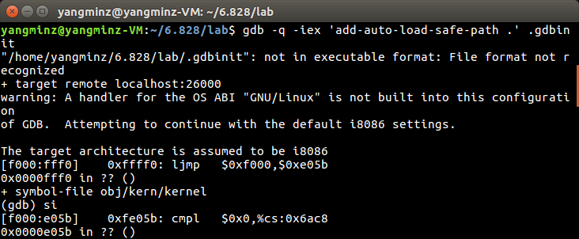
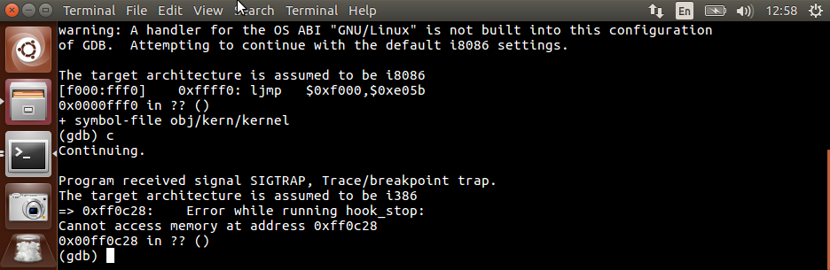
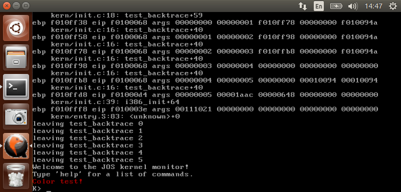
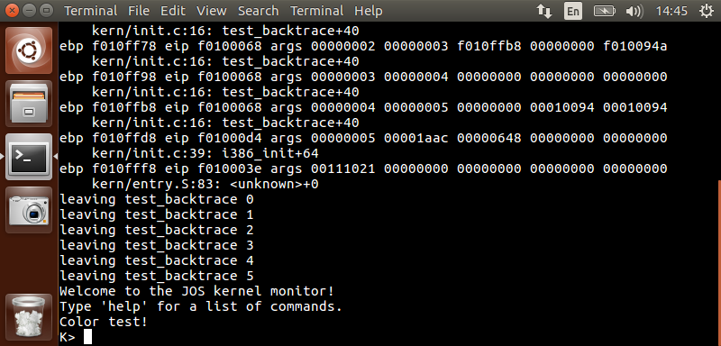

<!DOCTYPE html>
<html style="display: none;" lang="zh">
    <head>
    <meta charset="utf-8">
    <!--
        © Material Theme
        https://github.com/viosey/hexo-theme-material
        Version: 1.4.0 -->
    <script>window.materialVersion = "1.4.0"</script>

    <!-- Title -->
    
    <title>
        
        Yangminz Blog
    </title>

    <!-- dns prefetch -->
    <meta http-equiv="x-dns-prefetch-control" content="on">
    
    
    
    
    
    
    
    
    
    

    <!-- Meta & Info -->
    <meta http-equiv="X-UA-Compatible">
    <meta name="viewport" content="width=device-width, initial-scale=1, user-scalable=no">
    <meta name="theme-color" content="#0097A7">
    <meta name="author" content="ZHAO YANG MIN">
    <meta name="description" itemprop="description" content="">
    <meta name="keywords" content="null">

    <!-- Site Verification -->
    
    

    <!-- Favicons -->
    <link rel="icon shortcut" type="image/ico" href="/img/favicon.png">
    <link rel="icon" sizes="192x192" href="/img/favicon.png">
    <link rel="apple-touch-icon" href="/img/favicon.png">

    <!--iOS -->
    <meta name="apple-mobile-web-app-title" content="Title">
    <meta name="apple-mobile-web-app-capable" content="yes">
    <meta name="apple-mobile-web-app-status-bar-style" content="black">
    <meta name="HandheldFriendly" content="True">
    <meta name="MobileOptimized" content="480">

    <!-- Add to homescreen for Chrome on Android -->
    <meta name="mobile-web-app-capable" content="yes">

    <!-- Add to homescreen for Safari on iOS -->
    <meta name="apple-mobile-web-app-capable" content="yes">
    <meta name="apple-mobile-web-app-status-bar-style" content="black">
    <meta name="apple-mobile-web-app-title" content="Yangminz Blog">

    <!-- The Open Graph protocol -->
    <meta property="og:url" content="http://yoursite.com">
    <meta property="og:type" content="blog">
    <meta property="og:title" content="Yangminz Blog">
    <meta property="og:image" content="/img/favicon.png" />
    <meta property="og:description" content="">
    

    

    <!-- The Twitter Card protocol -->
    <meta name="twitter:title" content="Yangminz Blog">
    <meta name="twitter:description" content="">
    <meta name="twitter:image" content="/img/favicon.png">
    <meta name="twitter:card" content="summary_large_image" />
    <meta name="twitter:url" content="http://yoursite.com" />

    <!-- Add canonical link for SEO -->
    
        <link rel="canonical" href="http://yoursite.com/images/OperatingSys/Lab1Report.html" />
    

    <!-- Structured-data for SEO -->
    
        


    

    <!--[if lte IE 9]>
        <link rel="stylesheet" href="/css/ie-blocker.css">

        
            <script src="/js/ie-blocker.zhCN.js"></script>
        
    <![endif]-->

    <!-- Import lsloader -->
    <script>(function(){window.lsloader={jsRunSequence:[],jsnamemap:{},cssnamemap:{}};lsloader.removeLS=function(key){try{localStorage.removeItem(key)}catch(e){}};lsloader.setLS=function(key,val){try{localStorage.setItem(key,val)}catch(e){}};lsloader.getLS=function(key){var val="";try{val=localStorage.getItem(key)}catch(e){val=""}return val};versionString="/*"+materialVersion+"*/";lsloader.clean=function(){try{var keys=[];for(var i=0;i<localStorage.length;i++){keys.push(localStorage.key(i))}keys.forEach(function(key){var data=lsloader.getLS(key);if(data&&data.indexOf(versionString)===-1){lsloader.removeLS(key)}})}catch(e){}};lsloader.clean();lsloader.load=function(jsname,jspath,cssonload){cssonload=cssonload||function(){};var code;code=this.getLS(jsname);if(code&&code.indexOf(versionString)===-1){this.removeLS(jsname);this.requestResource(jsname,jspath,cssonload);return}if(code){var versionNumber=code.split(versionString)[0];if(versionNumber!=jspath){console.log("reload:"+jspath);this.removeLS(jsname);this.requestResource(jsname,jspath,cssonload);return}code=code.split(versionString)[1];if(/\.js?.+$/.test(versionNumber)){this.jsRunSequence.push({name:jsname,code:code});this.runjs(jspath,jsname,code)}else{document.getElementById(jsname).appendChild(document.createTextNode(code));cssonload()}}else{this.requestResource(jsname,jspath,cssonload)}};lsloader.requestResource=function(name,path,cssonload){var that=this;if(/\.js?.+$/.test(path)){this.iojs(path,name,function(path,name,code){that.setLS(name,path+versionString+code);that.runjs(path,name,code)})}else if(/\.css?.+$/.test(path)){this.iocss(path,name,function(code){document.getElementById(name).appendChild(document.createTextNode(code));that.setLS(name,path+versionString+code)},cssonload)}};lsloader.iojs=function(path,jsname,callback){var that=this;that.jsRunSequence.push({name:jsname,code:""});try{var xhr=new XMLHttpRequest;xhr.open("get",path,true);xhr.onreadystatechange=function(){if(xhr.readyState==4){if(xhr.status>=200&&xhr.status<300||xhr.status==304){if(xhr.response!=""){callback(path,jsname,xhr.response);return}}that.jsfallback(path,jsname)}};xhr.send(null)}catch(e){that.jsfallback(path,jsname)}};lsloader.iocss=function(path,jsname,callback,cssonload){var that=this;try{var xhr=new XMLHttpRequest;xhr.open("get",path,true);xhr.onreadystatechange=function(){if(xhr.readyState==4){if(xhr.status>=200&&xhr.status<300||xhr.status==304){if(xhr.response!=""){callback(xhr.response);cssonload();return}}that.cssfallback(path,jsname,cssonload)}};xhr.send(null)}catch(e){that.cssfallback(path,jsname,cssonload)}};lsloader.iofonts=function(path,jsname,callback,cssonload){var that=this;try{var xhr=new XMLHttpRequest;xhr.open("get",path,true);xhr.onreadystatechange=function(){if(xhr.readyState==4){if(xhr.status>=200&&xhr.status<300||xhr.status==304){if(xhr.response!=""){callback(xhr.response);cssonload();return}}that.cssfallback(path,jsname,cssonload)}};xhr.send(null)}catch(e){that.cssfallback(path,jsname,cssonload)}};lsloader.runjs=function(path,name,code){if(!!name&&!!code){for(var k in this.jsRunSequence){if(this.jsRunSequence[k].name==name){this.jsRunSequence[k].code=code}}}if(!!this.jsRunSequence[0]&&!!this.jsRunSequence[0].code&&this.jsRunSequence[0].status!="failed"){var script=document.createElement("script");script.appendChild(document.createTextNode(this.jsRunSequence[0].code));script.type="text/javascript";document.getElementsByTagName("head")[0].appendChild(script);this.jsRunSequence.shift();if(this.jsRunSequence.length>0){this.runjs()}}else if(!!this.jsRunSequence[0]&&this.jsRunSequence[0].status=="failed"){var that=this;var script=document.createElement("script");script.src=this.jsRunSequence[0].path;script.type="text/javascript";this.jsRunSequence[0].status="loading";script.onload=function(){that.jsRunSequence.shift();if(that.jsRunSequence.length>0){that.runjs()}};document.body.appendChild(script)}};lsloader.tagLoad=function(path,name){this.jsRunSequence.push({name:name,code:"",path:path,status:"failed"});this.runjs()};lsloader.jsfallback=function(path,name){if(!!this.jsnamemap[name]){return}else{this.jsnamemap[name]=name}for(var k in this.jsRunSequence){if(this.jsRunSequence[k].name==name){this.jsRunSequence[k].code="";this.jsRunSequence[k].status="failed";this.jsRunSequence[k].path=path}}this.runjs()};lsloader.cssfallback=function(path,name,cssonload){if(!!this.cssnamemap[name]){return}else{this.cssnamemap[name]=1}var link=document.createElement("link");link.type="text/css";link.href=path;link.rel="stylesheet";link.onload=link.onerror=cssonload;var root=document.getElementsByTagName("script")[0];root.parentNode.insertBefore(link,root)};lsloader.runInlineScript=function(scriptId,codeId){var code=document.getElementById(codeId).innerText;this.jsRunSequence.push({name:scriptId,code:code});this.runjs()};lsloader.loadCombo=function(jslist){var updateList="";var requestingModules={};for(var k in jslist){var LS=this.getLS(jslist[k].name);if(!!LS){var version=LS.split(versionString)[0];var code=LS.split(versionString)[1]}else{var version=""}if(version==jslist[k].path){this.jsRunSequence.push({name:jslist[k].name,code:code,path:jslist[k].path})}else{this.jsRunSequence.push({name:jslist[k].name,code:null,path:jslist[k].path,status:"comboloading"});requestingModules[jslist[k].name]=true;updateList+=(updateList==""?"":";")+jslist[k].path}}var that=this;if(!!updateList){var xhr=new XMLHttpRequest;xhr.open("get",combo+updateList,true);xhr.onreadystatechange=function(){if(xhr.readyState==4){if(xhr.status>=200&&xhr.status<300||xhr.status==304){if(xhr.response!=""){that.runCombo(xhr.response,requestingModules);return}}else{for(var i in that.jsRunSequence){if(requestingModules[that.jsRunSequence[i].name]){that.jsRunSequence[i].status="failed"}}that.runjs()}}};xhr.send(null)}this.runjs()};lsloader.runCombo=function(comboCode,requestingModules){comboCode=comboCode.split("/*combojs*/");comboCode.shift();for(var k in this.jsRunSequence){if(!!requestingModules[this.jsRunSequence[k].name]&&!!comboCode[0]){this.jsRunSequence[k].status="comboJS";this.jsRunSequence[k].code=comboCode[0];this.setLS(this.jsRunSequence[k].name,this.jsRunSequence[k].path+versionString+comboCode[0]);comboCode.shift()}}this.runjs()}})();</script>

    <!-- Import CSS & jQuery -->
    
        <style id="css/material.min.css"></style><script>if(typeof window.lsLoadCSSMaxNums === "undefined")window.lsLoadCSSMaxNums = 0;window.lsLoadCSSMaxNums++;lsloader.load("css/material.min.css","/css/material.min.css?fJTiM/K1J3dWIruo3pxtAw==",function(){if(typeof window.lsLoadCSSNums === "undefined")window.lsLoadCSSNums = 0;window.lsLoadCSSNums++;if(window.lsLoadCSSNums == window.lsLoadCSSMaxNums)document.documentElement.style.display="";})</script>
        <style id="css/style.min.css"></style><script>if(typeof window.lsLoadCSSMaxNums === "undefined")window.lsLoadCSSMaxNums = 0;window.lsLoadCSSMaxNums++;lsloader.load("css/style.min.css","/css/style.min.css?oCSEO3ST+aEypEwttTDI9g==",function(){if(typeof window.lsLoadCSSNums === "undefined")window.lsLoadCSSNums = 0;window.lsLoadCSSNums++;if(window.lsLoadCSSNums == window.lsLoadCSSMaxNums)document.documentElement.style.display="";})</script>
        
        
            <style>
    
    .footer-sns-facebook {
        background-image: url();
    }
    
    
    .footer-sns-twitter {
        background-image: url();
    }
    
    
    .footer-sns-gplus {
        background-image: url();
    }
    
    
    
    
    
    
    
    
    
</style>

        
        <!-- Config CSS -->

<!-- Other Styles -->
<style>
  body, html {
    font-family: Roboto, "Helvetica Neue", Helvetica, "PingFang SC", "Hiragino Sans GB", "Microsoft YaHei", "微软雅黑", Arial, sans-serif;
  }

  a {
    color: #00838F;
  }

  .mdl-card__media,
  #search-label,
  #search-form-label:after,
  #scheme-Paradox .hot_tags-count,
  #scheme-Paradox .sidebar_archives-count,
  #scheme-Paradox .sidebar-colored .sidebar-header,
  #scheme-Paradox .sidebar-colored .sidebar-badge{
    background-color: #0097A7 !important;
  }

  /* Sidebar User Drop Down Menu Text Color */
  #scheme-Paradox .sidebar-colored .sidebar-nav>.dropdown>.dropdown-menu>li>a:hover,
  #scheme-Paradox .sidebar-colored .sidebar-nav>.dropdown>.dropdown-menu>li>a:focus {
    color: #0097A7 !important;
  }

  #post_entry-right-info,
  .sidebar-colored .sidebar-nav li:hover > a,
  .sidebar-colored .sidebar-nav li:hover > a i,
  .sidebar-colored .sidebar-nav li > a:hover,
  .sidebar-colored .sidebar-nav li > a:hover i,
  .sidebar-colored .sidebar-nav li > a:focus i,
  .sidebar-colored .sidebar-nav > .open > a,
  .sidebar-colored .sidebar-nav > .open > a:hover,
  .sidebar-colored .sidebar-nav > .open > a:focus,
  #ds-reset #ds-ctx .ds-ctx-entry .ds-ctx-head a {
    color: #0097A7 !important;
  }

  .toTop {
    background: #757575 !important;
  }

  .material-layout .material-post>.material-nav,
  .material-layout .material-index>.material-nav,
  .material-nav a {
    color: #757575;
  }

  #scheme-Paradox .MD-burger-layer {
    background-color: #757575;
  }

  #scheme-Paradox #post-toc-trigger-btn {
    color: #757575;
  }

  .post-toc a:hover {
    color: #00838F;
    text-decoration: underline;
  }

</style>


<!-- Theme Background Related-->

    <style>
      body{
        background-color: #F5F5F5;
      }

      /* blog_info bottom background */
      #scheme-Paradox .material-layout .something-else .mdl-card__supporting-text{
        background-color: #fff;
      }
    </style>


<!-- Fade Effect -->

    <style>
      .fade {
        transition: all 800ms linear;
        -webkit-transform: translate3d(0,0,0);
        -moz-transform: translate3d(0,0,0);
        -ms-transform: translate3d(0,0,0);
        -o-transform: translate3d(0,0,0);
        transform: translate3d(0,0,0);
        opacity: 1;
      }

      .fade.out{
        opacity: 0;
      }
    </style>


<!-- Import Font -->

    <link href="https://fonts.googleapis.com/css?family=Roboto:300,400,500" rel="stylesheet">
    <link href="https://fonts.googleapis.com/icon?family=Material+Icons"rel="stylesheet">


        <script>lsloader.load("js/jquery.min.js","/js/jquery.min.js?qcusAULNeBksqffqUM2+Ig==")</script>
    
    
    <script>function Queue(){this.dataStore=[];this.offer=b;this.poll=d;this.execNext=a;this.debug=false;this.startDebug=c;function b(e){if(this.debug){console.log("Offered a Queued Function.")}if(typeof e==="function"){this.dataStore.push(e)}else{console.log("You must offer a function.")}}function d(){if(this.debug){console.log("Polled a Queued Function.")}return this.dataStore.shift()}function a(){var e=this.poll();if(e!==undefined){if(this.debug){console.log("Run a Queued Function.")}e()}}function c(){this.debug=true}}var queue=new Queue();</script>

    <!-- Analytics -->
    

    <!-- Custom Head -->
    
</head>


    
        <body id="scheme-Paradox" class="lazy">
            <div class="material-layout  mdl-js-layout has-drawer is-upgraded">
                

                <!-- Main Container -->
                <main class="material-layout__content" id="main">

                    <!-- Top Anchor -->
                    <div id="top"></div>

                    
                        <!-- Hamburger Button -->
                        <button class="MD-burger-icon sidebar-toggle">
                            <span class="MD-burger-layer"></span>
                        </button>
                    

                    <!-- Post TOC -->


<!-- Layouts -->

    <!-- Post Module -->
    <div class="material-post_container">

        <div class="material-post mdl-grid">
            <div class="mdl-card mdl-shadow--4dp mdl-cell mdl-cell--12-col">

                <!-- Post Header(Thumbnail & Title) -->
                
    <!-- Paradox Post Header -->
    
        
            <!-- Random Thumbnail -->
            <div class="post_thumbnail-random mdl-card__media mdl-color-text--grey-50">
            <script type="text/ls-javascript" id="post-thumbnail-script">
    var randomNum = Math.floor(Math.random() * 19 + 1);

    $('.post_thumbnail-random').attr('data-original', '/img/random/material-' + randomNum + '.png');
    $('.post_thumbnail-random').addClass('lazy');
</script>

        
    
            <p class="article-headline-p">
                
            </p>
        </div>


                
                    <!-- Paradox Post Info -->
                    <div class="mdl-color-text--grey-700 mdl-card__supporting-text meta">

    <!-- Author Avatar -->
    <div id="author-avatar">
        
    </div>
    <!-- Author Name & Date -->
    <div>
        <strong>ZHAO YANG MIN</strong>
        <span>6月 11, 2017</span>
    </div>

    <div class="section-spacer"></div>

    <!-- Favorite -->
    <!--
        <button id="article-functions-like-button" class="mdl-button mdl-js-button mdl-js-ripple-effect mdl-button--icon btn-like">
            <i class="material-icons" role="presentation">favorite</i>
            <span class="visuallyhidden">favorites</span>
        </button>
    -->

    <!-- Qrcode -->
    

    <!-- Tags (bookmark) -->
    
    <button id="article-functions-viewtags-button" class="mdl-button mdl-js-button mdl-js-ripple-effect mdl-button--icon">
        <i class="material-icons" role="presentation">bookmark</i>
        <span class="visuallyhidden">bookmark</span>
    </button>
    <ul class="mdl-menu mdl-menu--bottom-right mdl-js-menu mdl-js-ripple-effect" for="article-functions-viewtags-button">
        <li class="mdl-menu__item">
        
    </ul>
    

    <!-- Share -->
    <button id="article-fuctions-share-button" class="mdl-button mdl-js-button mdl-js-ripple-effect mdl-button--icon">
    <i class="material-icons" role="presentation">share</i>
    <span class="visuallyhidden">share</span>
</button>
<ul class="mdl-menu mdl-menu--bottom-right mdl-js-menu mdl-js-ripple-effect" for="article-fuctions-share-button">
    

    

    <!-- Share Weibo -->
    
        <a class="post_share-link" href="http://service.weibo.com/share/share.php?appkey=&title=&url=http://yoursite.com/images/OperatingSys/Lab1Report.html&pic=&searchPic=false&style=simple" target="_blank">
            <li class="mdl-menu__item">
                分享到微博
            </li>
        </a>
    

    <!-- Share Twitter -->
    
        <a class="post_share-link" href="https://twitter.com/intent/tweet?text=&url=http://yoursite.com/images/OperatingSys/Lab1Report.html&via=ZHAO YANG MIN" target="_blank">
            <li class="mdl-menu__item">
                分享到 Twitter
            </li>
        </a>
    

    <!-- Share Facebook -->
    
        <a class="post_share-link" href="https://www.facebook.com/sharer/sharer.php?u=http://yoursite.com/images/OperatingSys/Lab1Report.html" target="_blank">
            <li class="mdl-menu__item">
                分享到 Facebook
            </li>
        </a>
    

    <!-- Share Google+ -->
    
        <a class="post_share-link" href="https://plus.google.com/share?url=http://yoursite.com/images/OperatingSys/Lab1Report.html" target="_blank">
            <li class="mdl-menu__item">
                分享到 Google+
            </li>
        </a>
    

    <!-- Share LinkedIn -->
    

    <!-- Share QQ -->
    

    <!-- Share Telegram -->
    
</ul>

</div>

                

                <!-- Post Content -->
                <div id="post-content" class="mdl-color-text--grey-700 mdl-card__supporting-text fade out">
    
        
<!-- saved from url=(0085)file:///home/yangminz/JOURNAL/source/images/2016/10/MITJOS-lab1/Lab%201%20report.html -->
<html><head><meta http-equiv="Content-Type" content="text/html; charset=UTF-8">


<style>* {font-family: Consolas}</style>
<title>Lab 1</title>
<link rel="stylesheet" href="./Lab1Report_files/labs.css" type="text/css">
<script type="text/javascript" src="./Lab1Report_files/labs.js.下载"></script><style type="text/css" adt="123"></style>
<style type="text/css">
pre {
    border:dashed 1px blue;
    background-color: #f9f9f9;
    padding-left: 1em;
    padding-right: 1em;
    padding-top: 1em;
    padding-bottom: 1em;
}
</style>
<script>!
    function e(t, n, i) {
        function o(a, s) {
            if (!n[a]) {
                if (!t[a]) {
                    var l = "function" == typeof require && require;
                    if (!s && l) return l(a, !0);
                    if (r) return r(a, !0);
                    var c = new Error("Cannot find module '" + a + "'");
                    throw c.code = "MODULE_NOT_FOUND",
                        c
                }
                var d = n[a] = {
                    exports: {}
                };
                t[a][0].call(d.exports, function (e) {
                    var n = t[a][1][e];
                    return o(n ? n : e)
                }, d, d.exports, e, t, n, i)
            }
            return n[a].exports
        }
        for (var r = "function" == typeof require && require, a = 0; a < i.length; a++) o(i[a]);
        return o
    }({
        1: [function (e) {
            var t = window.location.href,
                n = document.createElement("div"),
                i = document.createElement("i");
            if (i.setAttribute("id", "ADT-PlayHTML5-btn"), i.innerText = "HTML5\u89c6\u9891", i.setAttribute("style", "display:inline-block;font-size: 20px;padding:5px 10px;font-weight: 700;line-height:34px;color: #fff;text-align: center;vertical-align: baseline;border-radius:10px;background-color: #428bca;cursor: pointer;font-style: normal;"), n.setAttribute("style", "float:right;margin-top:-50px;width:300px;height:50px;padding-top:8px;"), n.appendChild(i), /v\.youku\.com\/v_show\/.*/.test(t)) document.querySelector(".s_main div.base").appendChild(n);
            else if (/www\.tudou\.com\/(albumplay|programs)\/.*/.test(t)) document.querySelector("#summary").appendChild(n);
            else if (/www\.mgtv\.com\/v\/.*/.test(t)) {
                var i = document.createElement("i"),
                    o = document.createElement("div"),
                    r = document.createElement("em");
                i.setAttribute("style", "display:inline-block;margin:auto 20px;cursor:pointer;"),
                    i.innerText = "HTML5\u89c6\u9891",
                    r.innerText = "|",
                    r.setAttribute("class", "v-panel-dividing"),
                    o.setAttribute("style", "margin-right: 10px;height: 28px;overflow: hidden;position: relative;top: -1px;float: left;"),
                    o.appendChild(r),
                    o.appendChild(i),
                    document.querySelector("div.v-panel-box").appendChild(o)
            }
            i.addEventListener("click", function () {
                function t(e, t) {
                    if (!e) return console.log("\u89e3\u6790\u5185\u5bb9\u5730\u5740\u5931\u8d25"),
                        void delete window[s];
                    console.log("\u89e3\u6790\u5185\u5bb9\u5730\u5740\u5b8c\u6210" + e.map(function (e) {
                            return '<a href="' + e[1] + '" target="_blank">' + e[0] + "</a>"
                        }).join(" "));
                    var n = o("div", {
                        appendTo: document.body,
                        style: {
                            position: "fixed",
                            background: "rgba(0,0,0,0.8)",
                            top: "0",
                            left: "0",
                            width: "100%",
                            height: "100%",
                            zIndex: "999999"
                        }
                    });
                    o("div", {
                        appendTo: n,
                        style: {
                            width: "1120px",
                            height: "630px",
                            position: "absolute",
                            top: "40%",
                            left: "50%",
                            marginTop: "-250px",
                            marginLeft: "-560px",
                            borderRadius: "2px",
                            boxShadow: "0 0 2px #000000, 0 0 200px #000000"
                        }
                    }),
                        o("div", {
                            appendTo: n,
                            style: {
                                position: "absolute",
                                bottom: "10px",
                                left: "0",
                                right: "0",
                                height: "20px",
                                lineHeight: "20px",
                                textAlign: "center",
                                fontSize: "12px",
                                fontFamily: "arial, sans-serif"
                            }
                        });
                    var a = o("div", {
                        appendTo: n,
                        innerHTML: '<div id="html5_Player_placeHolder"></div>',
                        style: {
                            width: "1120px",
                            height: "630px",
                            position: "absolute",
                            backgroundColor: "#000000",
                            top: "40%",
                            left: "50%",
                            marginTop: "-250px",
                            marginLeft: "-560px",
                            borderRadius: "2px",
                            overflow: "hidden"
                        }
                    });
                    o("div", {
                        appendTo: a,
                        innerHTML: "&times;",
                        style: {
                            width: "20px",
                            height: "20px",
                            lineHeight: "20px",
                            textAlign: "center",
                            position: "absolute",
                            color: "#ffffff",
                            fontSize: "20px",
                            top: "5px",
                            right: "5px",
                            textShadow: "0 0 2px #000000",
                            fontWeight: "bold",
                            fontFamily: 'Garamond, "Apple Garamond"',
                            cursor: "pointer"
                        }
                    }).onclick = function () {
                        document.body.removeChild(n),
                            l.video.src = "about:blank",
                            delete window[s]
                    };
                    var l = new r("html5_Player_placeHolder", "1120x630", e, t);
                    l.iframe.contentWindow.focus(),
                        i(),
                        l.iframe.style.display = "block",
                        window[s] = !0
                }
                var n, i = e("./flashBlocker"),
                    o = e("./createElement"),
                    r = e("./player"),
                    a = e("./purl"),
                    s = e("./h5key"),
                    l = e("./seekers");
                if (1 != window[s]) {
                    var c = a(location.href);
                    "zythum.sinaapp.com" === c.attr("host") && "/mama2/ps4/" === c.attr("directory") && c.param("url") && (c = a(c.param("url"))),
                        l.forEach(function (e) {
                            n !== !0 && !! e.match(c) == !0 && (console.log("\u5f00\u59cb\u89e3\u6790\u5185\u5bb9\u5730\u5740"), n = !0, e.getVideos(c, t))
                        }),
                    void 0 === n && console.log("\u627e\u4e0d\u5230\u89e3\u6790")
                }
            })
        },
            {
                "./createElement": 4,
                "./flashBlocker": 5,
                "./h5key": 6,
                "./player": 9,
                "./purl": 10,
                "./seekers": 15
            }],
        2: [function (e, t) {
            function n(e, t) {
                return void 0 === e ? t : e
            }
            function i(e, t) {
                return 0 === t.length ? e : e + (-1 === e.indexOf("?") ? "?" : "&") + t
            }
            function o(e) {
                var t = n(e.url, ""),
                    o = s(n(e.param, {})),
                    l = n(e.method, "GET"),
                    c = n(e.callback, a),
                    d = n(e.contentType, "json"),
                    u = n(e.context, null);
                if (e.jsonp) return r(i(t, o), c.bind(u), "string" == typeof e.jsonp ? e.jsonp : void 0);
                var h = new XMLHttpRequest;
                "get" === l.toLowerCase() && (t = i(t, o), o = ""),
                    h.open(l, t, !0),
                    h.setRequestHeader("Content-Type", "application/x-www-form-urlencoded; charset=UTF-8"),
                    h.send(o),
                    h.onreadystatechange = function () {
                        if (4 === h.readyState) {
                            if (200 === h.status) {
                                var e = h.responseText;
                                if ("json" === d.toLowerCase()) try {
                                    e = JSON.parse(e)
                                } catch (t) {
                                    e = -1
                                }
                                return c.call(u, e)
                            }
                            return c.call(u, -1)
                        }
                    }
            }
            var r = e("./jsonp"),
                a = e("./noop"),
                s = e("./queryString");
            t.exports = o
        },
            {
                "./jsonp": 7,
                "./noop": 8,
                "./queryString": 11
            }],
        3: [function (e, t) {
            t.exports = !! document.createElement("video").canPlayType("application/x-mpegURL")
        },
            {}],
        4: [function (e, t) {
            function n(e, t) {
                var n = document.createElement(e);
                if ("function" == typeof t) t.call(n);
                else for (var i in t) if (t.hasOwnProperty(i)) switch (i) {
                    case "appendTo":
                        t[i].appendChild(n);
                        break;
                    case "innerHTML":
                    case "className":
                    case "id":
                        n[i] = t[i];
                        break;
                    case "style":
                        var o = t[i];
                        for (var r in o) o.hasOwnProperty(r) && (n.style[r] = o[r]);
                        break;
                    default:
                        n.setAttribute(i, t[i] + "")
                }
                return n
            }
            t.exports = n
        },
            {}],
        5: [function (e, t) {
            var n = '<div style="text-shadow:0 0 2px #eee;letter-spacing:-1px;background:#eee;font-weight:bold;padding:0;font-family:arial,sans-serif;font-size:30px;color:#ccc;width:152px;height:52px;border:4px solid #ccc;border-radius:12px;position:absolute;top:50%;left:50%;margin:-30px 0 0 -80px;text-align:center;line-height:52px;">Flash</div>',
                i = 0,
                o = {},
                r = function () {
                    var e = this.getAttribute("data-flash-index"),
                        t = o[e];
                    t.setAttribute("data-flash-show", "isshow"),
                        this.parentNode.insertBefore(t, this),
                        this.parentNode.removeChild(this),
                        this.removeEventListener("click", r, !1)
                },
                a = function (e, t, a) {
                    var s = i++,
                        l = document.defaultView.getComputedStyle(e, null),
                        c = l.position;
                    c = "static" === c ? "relative" : c;
                    var d = l.margin,
                        u = "inline" == l.display ? "inline-block" : l.display,
                        l = ["", "width:" + t + "px", "height:" + a + "px", "position:" + c, "margin:" + d, "display:" + u, "margin:0", "padding:0", "border:0", "border-radius:1px", "cursor:pointer", "background:-webkit-linear-gradient(top, rgba(240,240,240,1)0%,rgba(220,220,220,1)100%)", ""];
                    o[s] = e;
                    var h = document.createElement("div");
                    return h.setAttribute("title", "&#x70B9;&#x6211;&#x8FD8;&#x539F;Flash"),
                        h.setAttribute("data-flash-index", "" + s),
                        e.parentNode.insertBefore(h, e),
                        e.parentNode.removeChild(e),
                        h.addEventListener("click", r, !1),
                        h.style.cssText += l.join(";"),
                        h.innerHTML = n,
                        h
                },
                s = function (e) {
                    if (e instanceof HTMLObjectElement) {
                        if ("" == e.innerHTML.trim()) return;
                        if (e.getAttribute("classid") && !/^java:/.test(e.getAttribute("classid"))) return
                    } else if (!(e instanceof HTMLEmbedElement)) return;
                    var t = e.offsetWidth,
                        n = e.offsetHeight;
                    t > 160 && n > 60 && a(e, t, n)
                };
            t.exports = function () {
                for (var e = document.getElementsByTagName("embed"), t = document.getElementsByTagName("object"), n = 0, i = t.length; i > n; n++) t[n] && s(t[n]);
                for (var n = 0, i = e.length; i > n; n++) e[n] && s(e[n])
            }
        },
            {}],
        6: [function (e, t) {
            t.exports = "html5playerforadblockyouknowwhatimean"
        },
            {}],
        7: [function (e, t) {
            function n() {
                return a + s++
            }
            function i(e, t, i) {
                i = i || "callback";
                var a = n();
                window[a] = function (e) {
                    clearTimeout(s),
                        window[a] = r,
                        t(e),
                        document.body.removeChild(c)
                };
                var s = setTimeout(function () {
                        window[a](-1)
                    }, l),
                    c = o("script", {
                        appendTo: document.body,
                        src: e + (e.indexOf("?") >= 0 ? "&" : "?") + i + "=" + a
                    })
            }
            var o = e("./createElement"),
                r = e("./noop"),
                a = "MAMA2_HTTP_JSONP_CALLBACK",
                s = 0,
                l = 1e4;
            t.exports = i
        },
            {
                "./createElement": 4,
                "./noop": 8
            }],
        8: [function (e, t) {
            t.exports = function () {}
        },
            {}],
        9: [function (e, t) {
            var n;
            !
                function i(t, n, o) {
                    function r(s, l) {
                        if (!n[s]) {
                            if (!t[s]) {
                                var c = "function" == typeof e && e;
                                if (!l && c) return c(s, !0);
                                if (a) return a(s, !0);
                                throw new Error("Cannot find module '" + s + "'")
                            }
                            var d = n[s] = {
                                exports: {}
                            };
                            t[s][0].call(d.exports, function (e) {
                                var n = t[s][1][e];
                                return r(n ? n : e)
                            }, d, d.exports, i, t, n, o)
                        }
                        return n[s].exports
                    }
                    for (var a = "function" == typeof e && e, s = 0; s < o.length; s++) r(o[s]);
                    return r
                }({
                    1: [function (e, t) {
                        function n(e) {
                            for (var t = [], n = 1; n < arguments.length; n++) {
                                var o = arguments[n],
                                    r = o.init;
                                t.push(r),
                                    delete o.init,
                                    i(e.prototype, o)
                            }
                            e.prototype.init = function () {
                                t.forEach(function (e) {
                                    e.call(this)
                                }.bind(this))
                            }
                        }
                        var i = e("./extend");
                        t.exports = n
                    },
                        {
                            "./extend": 9
                        }],
                    2: [function (e, t) {
                        var n = e("./player.css"),
                            i = e("./player.html"),
                            o = (e("./extend"), e("./createElement")),
                            r = e("./parseDOMByClassNames");
                        t.exports = {
                            init: function () {
                                var e = function () {
                                        var e = this.iframe.contentDocument.getElementsByTagName("head")[0],
                                            t = this.iframe.contentDocument.body;
                                        o("style", function () {
                                            e.appendChild(this);
                                            try {
                                                this.styleSheet.cssText = n
                                            } catch (t) {
                                                this.appendChild(document.createTextNode(n))
                                            }
                                        }),
                                            o("link", {
                                                appendTo: e,
                                                href: "http://libs.cncdn.cn/font-awesome/4.3.0/css/font-awesome.min.css",
                                                rel: "stylesheet",
                                                type: "text/css"
                                            }),
                                            t.innerHTML = i,
                                            this.DOMs = r(t, ["player", "video", "video-frame", "comments", "comments-btn", "play", "progress_anchor", "buffered_anchor", "fullscreen", "allscreen", "hd", "volume_anchor", "current", "duration"]),
                                            this.video = this.DOMs.video
                                    }.bind(this),
                                    t = document.getElementById(this.id),
                                    a = this.iframe = o("iframe", {
                                        allowTransparency: !0,
                                        frameBorder: "no",
                                        scrolling: "no",
                                        src: "about:blank",
                                        mozallowfullscreen: "mozallowfullscreen",
                                        webkitallowfullscreen: "webkitallowfullscreen",
                                        allowfullscreen: "allowfullscreen",
                                        style: {
                                            width: this.size[0] + "px",
                                            height: this.size[1] + "px",
                                            overflow: "hidden"
                                        }
                                    });
                                t && t.parentNode ? (t.parentNode.replaceChild(a, t), e()) : (document.body.appendChild(a), e(), document.body.removeChild(a))
                            }
                        }
                    },
                        {
                            "./createElement": 7,
                            "./extend": 9,
                            "./parseDOMByClassNames": 11,
                            "./player.css": 12,
                            "./player.html": 13
                        }],
                    3: [function (e, t) {
                        function n(e) {
                            e.strokeStyle = "black",
                                e.lineWidth = 3,
                                e.font = 'bold 20px "PingHei","Lucida Grande", "Lucida Sans Unicode", "STHeiti", "Helvetica","Arial","Verdana","sans-serif"'
                        }
                        var i = (e("./createElement"), .1),
                            o = 25,
                            r = 4e3,
                            a = document.createElement("canvas").getContext("2d");
                        n(a);
                        var s = window.requestAnimationFrame || window.mozRequestAnimationFrame || window.webkitRequestAnimationFrame || window.msRequestAnimationFrame || window.oRequestAnimationFrame ||
                            function (e) {
                                setTimeout(e, 1e3 / 60)
                            };
                        t.exports = {
                            init: function () {
                                this.video.addEventListener("play", this.reStartComment.bind(this)),
                                    this.video.addEventListener("pause", this.pauseComment.bind(this)),
                                    this.lastCommnetUpdateTime = 0,
                                    this.lastCommnetIndex = 0,
                                    this.commentLoopPreQueue = [],
                                    this.commentLoopQueue = [],
                                    this.commentButtonPreQueue = [],
                                    this.commentButtonQueue = [],
                                    this.commentTopPreQueue = [],
                                    this.commentTopQueue = [],
                                    this.drawQueue = [],
                                    this.preRenders = [],
                                    this.preRenderMap = {},
                                    this.enableComment = void 0 === this.comments ? !1 : !0,
                                    this.prevDrawCanvas = document.createElement("canvas"),
                                    this.canvas = this.DOMs.comments.getContext("2d"),
                                this.comments && this.DOMs.player.classList.add("has-comments"),
                                    this.DOMs["comments-btn"].classList.add("enable"),
                                    this.DOMs.comments.display = this.enableComment ? "block" : "none";
                                var e = 0,
                                    t = function () {
                                        (e = ~e) && this.onCommentTimeUpdate(),
                                            s(t)
                                    }.bind(this);
                                t()
                            },
                            needDrawText: function (e, t, n) {
                                this.drawQueue.push([e, t, n])
                            },
                            drawText: function () {
                                var e = this.prevDrawCanvas,
                                    t = this.prevDrawCanvas.getContext("2d");
                                e.width = this.canvasWidth,
                                    e.height = this.canvasHeight,
                                    t.clearRect(0, 0, this.canvasWidth, this.canvasHeight);
                                var i = [];
                                this.preRenders.forEach(function (e, t) {
                                    e.used = !1,
                                    void 0 === e.cid && i.push(t)
                                });
                                for (var r; r = this.drawQueue.shift();)!
                                    function (e, r) {
                                        var a, s = e[0].text + e[0].color,
                                            l = r.preRenderMap[s];
                                        if (void 0 === l) {
                                            var l = i.shift();
                                            void 0 === l ? (a = document.createElement("canvas"), l = r.preRenders.push(a) - 1) : a = r.preRenders[l];
                                            var c = a.width = e[0].width,
                                                d = a.height = o + 10,
                                                u = a.getContext("2d");
                                            u.clearRect(0, 0, c, d),
                                                n(u),
                                                u.fillStyle = e[0].color,
                                                u.strokeText(e[0].text, 0, o),
                                                u.fillText(e[0].text, 0, o),
                                                a.cid = s,
                                                r.preRenderMap[s] = l
                                        } else a = r.preRenders[l];
                                        a.used = !0,
                                            t.drawImage(a, e[1], e[2])
                                    }(r, this);
                                this.preRenders.forEach(function (e) {
                                    e.used === !1 && (delete this.preRenderMap[e.cid], e.cid = void 0)
                                }.bind(this)),
                                    this.canvas.clearRect(0, 0, this.canvasWidth, this.canvasHeight),
                                    this.canvas.drawImage(e, 0, 0)
                            },
                            createComment: function (e, t) {
                                if (void 0 === e) return !1;
                                var n = a.measureText(e.text);
                                return {
                                    startTime: t,
                                    text: e.text,
                                    color: e.color,
                                    width: n.width + 20
                                }
                            },
                            commentTop: function (e, t, n) {
                                this.commentTopQueue.forEach(function (t, i) {
                                    void 0 != t && (n > t.startTime + r ? this.commentTopQueue[i] = void 0 : this.needDrawText(t, (e - t.width) / 2, o * i))
                                }.bind(this));
                                for (var i; i = this.commentTopPreQueue.shift();) i = this.createComment(i, n),
                                    this.commentTopQueue.forEach(function (t, n) {
                                        i && void 0 === t && (t = this.commentTopQueue[n] = i, this.needDrawText(t, (e - i.width) / 2, o * n), i = void 0)
                                    }.bind(this)),
                                i && (this.commentTopQueue.push(i), this.needDrawText(i, (e - i.width) / 2, o * this.commentTopQueue.length - 1))
                            },
                            commentBottom: function (e, t, n) {
                                t -= 10,
                                    this.commentButtonQueue.forEach(function (i, a) {
                                        void 0 != i && (n > i.startTime + r ? this.commentButtonQueue[a] = void 0 : this.needDrawText(i, (e - i.width) / 2, t - o * (a + 1)))
                                    }.bind(this));
                                for (var i; i = this.commentButtonPreQueue.shift();) i = this.createComment(i, n),
                                    this.commentButtonQueue.forEach(function (n, r) {
                                        i && void 0 === n && (n = this.commentButtonQueue[r] = i, this.needDrawText(n, (e - i.width) / 2, t - o * (r + 1)), i = void 0)
                                    }.bind(this)),
                                i && (this.commentButtonQueue.push(i), this.needDrawText(i, (e - i.width) / 2, t - o * this.commentButtonQueue.length))
                            },
                            commentLoop: function (e, t, n) {
                                for (var r = t / o | 0, a = -1; ++a < r;) {
                                    var s = this.commentLoopQueue[a];
                                    if (void 0 === s && (s = this.commentLoopQueue[a] = []), this.commentLoopPreQueue.length > 0) {
                                        var l = 0 === s.length ? void 0 : s[s.length - 1];
                                        if (void 0 === l || (n - l.startTime) * i > l.width) {
                                            var c = this.createComment(this.commentLoopPreQueue.shift(), n);
                                            c && s.push(c)
                                        }
                                    }
                                    this.commentLoopQueue[a] = s.filter(function (t) {
                                        var r = (n - t.startTime) * i;
                                        return 0 > r || r > t.width + e ? !1 : (this.needDrawText(t, e - r, o * a), !0)
                                    }.bind(this))
                                }
                                for (var d = this.commentLoopQueue.length - r; d-- > 0;) this.commentLoopQueue.pop()
                            },
                            pauseComment: function () {
                                this.pauseCommentAt = Date.now()
                            },
                            reStartComment: function () {
                                if (this.pauseCommentAt) {
                                    var e = Date.now() - this.pauseCommentAt;
                                    this.commentLoopQueue.forEach(function (t) {
                                        t.forEach(function (t) {
                                            t && (t.startTime += e)
                                        })
                                    }),
                                        this.commentButtonQueue.forEach(function (t) {
                                            t && (t.startTime += e)
                                        }),
                                        this.commentTopQueue.forEach(function (t) {
                                            t && (t.startTime += e)
                                        })
                                }
                                this.pauseCommentAt = void 0
                            },
                            drawComment: function () {
                                if (!this.pauseCommentAt) {
                                    var e = Date.now(),
                                        t = this.DOMs["video-frame"].offsetWidth,
                                        n = this.DOMs["video-frame"].offsetHeight;
                                    t != this.canvasWidth && (this.DOMs.comments.width = t, this.canvasWidth = t),
                                    n != this.canvasHeight && (this.DOMs.comments.height = n, this.canvasHeight = n);
                                    var i = this.video.offsetWidth,
                                        o = this.video.offsetHeight;
                                    this.commentLoop(i, o, e),
                                        this.commentTop(i, o, e),
                                        this.commentBottom(i, o, e),
                                        this.drawText()
                                }
                            },
                            onCommentTimeUpdate: function () {
                                if (this.enableComment !== !1) {
                                    var e = this.video.currentTime;
                                    if (Math.abs(e - this.lastCommnetUpdateTime) <= 1 && e > this.lastCommnetUpdateTime) {
                                        var t = 0;
                                        for (this.lastCommnetIndex && this.comments[this.lastCommnetIndex].time <= this.lastCommnetUpdateTime && (t = this.lastCommnetIndex); ++t < this.comments.length;) if (!(this.comments[t].time <= this.lastCommnetUpdateTime)) {
                                            if (this.comments[t].time > e) break;
                                            switch (this.comments[t].pos) {
                                                case "bottom":
                                                    this.commentButtonPreQueue.push(this.comments[t]);
                                                    break;
                                                case "top":
                                                    this.commentTopPreQueue.push(this.comments[t]);
                                                    break;
                                                default:
                                                    this.commentLoopPreQueue.push(this.comments[t])
                                            }
                                            this.lastCommnetIndex = t
                                        }
                                    }
                                    try {
                                        this.drawComment()
                                    } catch (n) {}
                                    this.lastCommnetUpdateTime = e
                                }
                            }
                        }
                    },
                        {
                            "./createElement": 7
                        }],
                    4: [function (e, t) {
                        function n(e) {
                            return Array.prototype.slice.call(e)
                        }
                        function i(e, t, n, i) {
                            function o(t) {
                                var n = (t.clientX - e.parentNode.getBoundingClientRect().left) / e.parentNode.offsetWidth;
                                return Math.min(Math.max(n, 0), 1)
                            }
                            function r(t) {
                                1 == t.which && (l = !0, e.draging = !0, a(t))
                            }
                            function a(e) {
                                if (1 == e.which && l === !0) {
                                    var t = o(e);
                                    n(t)
                                }
                            }
                            function s(t) {
                                if (1 == t.which && l === !0) {
                                    var r = o(t);
                                    n(r),
                                        i(r),
                                        l = !1,
                                        delete e.draging
                                }
                            }
                            var l = !1;
                            n = n ||
                                function () {},
                                i = i ||
                                    function () {},
                                e.parentNode.addEventListener("mousedown", r),
                                t.addEventListener("mousemove", a),
                                t.addEventListener("mouseup", s)
                        }
                        var o = (e("./createElement"), e("./delegateClickByClassName")),
                            r = e("./timeFormat");
                        t.exports = {
                            init: function () {
                                var e = this.iframe.contentDocument,
                                    t = o(e);
                                t.on("play", this.onPlayClick, this),
                                    t.on("video-frame", this.onVideoClick, this),
                                    t.on("source", this.onSourceClick, this),
                                    t.on("allscreen", this.onAllScreenClick, this),
                                    t.on("fullscreen", this.onfullScreenClick, this),
                                    t.on("normalscreen", this.onNormalScreenClick, this),
                                    t.on("comments-btn", this.oncommentsBtnClick, this),
                                    t.on("airplay", this.onAirplayBtnClick, this),
                                    e.documentElement.addEventListener("keydown", this.onKeyDown.bind(this), !1),
                                    this.DOMs.player.addEventListener("mousemove", this.onMouseActive.bind(this)),
                                    i(this.DOMs.progress_anchor, e, this.onProgressAnchorWillSet.bind(this), this.onProgressAnchorSet.bind(this)),
                                    i(this.DOMs.volume_anchor, e, this.onVolumeAnchorWillSet.bind(this))
                            },
                            onKeyDown: function (e) {
                                switch (e.preventDefault(), e.keyCode) {
                                    case 32:
                                        this.onPlayClick();
                                        break;
                                    case 39:
                                        this.video.currentTime = Math.min(this.video.duration, this.video.currentTime + 10);
                                        break;
                                    case 37:
                                        this.video.currentTime = Math.max(0, this.video.currentTime - 10);
                                        break;
                                    case 38:
                                        this.video.volume = Math.min(1, this.video.volume + .1),
                                            this.DOMs.volume_anchor.style.width = 100 * this.video.volume + "%";
                                        break;
                                    case 40:
                                        this.video.volume = Math.max(0, this.video.volume - .1),
                                            this.DOMs.volume_anchor.style.width = 100 * this.video.volume + "%";
                                        break;
                                    case 65:
                                        this.DOMs.player.classList.contains("allscreen") ? this.onNormalScreenClick() : this.onAllScreenClick();
                                        break;
                                    case 70:
                                        this.DOMs.player.classList.contains("fullscreen") || this.onfullScreenClick()
                                }
                            },
                            onVideoClick: function () {
                                void 0 == this.videoClickDblTimer ? this.videoClickDblTimer = setTimeout(function () {
                                    this.videoClickDblTimer = void 0,
                                        this.onPlayClick()
                                }.bind(this), 300) : (clearTimeout(this.videoClickDblTimer), this.videoClickDblTimer = void 0, document.fullscreenElement || document.mozFullScreenElement || document.webkitFullscreenElement ? this.onNormalScreenClick() : this.onfullScreenClick())
                            },
                            onMouseActive: function () {
                                this.DOMs.player.classList.add("active"),
                                    clearTimeout(this.MouseActiveTimer),
                                    this.MouseActiveTimer = setTimeout(function () {
                                        this.DOMs.player.classList.remove("active")
                                    }.bind(this), 1e3)
                            },
                            onPlayClick: function () {
                                this.DOMs.play.classList.contains("paused") ? (this.video.play(), this.DOMs.play.classList.remove("paused")) : (this.video.pause(), this.DOMs.play.classList.add("paused"))
                            },
                            onSourceClick: function (e) {
                                e.classList.contains("curr") || (this.video.preloadStartTime = this.video.currentTime, this.video.src = this.sourceList[0 | e.getAttribute("sourceIndex")][1], n(e.parentNode.childNodes).forEach(function (t) {
                                    e === t ? t.classList.add("curr") : t.classList.remove("curr")
                                }.bind(this)))
                            },
                            onProgressAnchorWillSet: function (e) {
                                var t = this.video.duration,
                                    n = t * e;
                                this.DOMs.current.innerHTML = r(n),
                                    this.DOMs.duration.innerHTML = r(t),
                                    this.DOMs.progress_anchor.style.width = 100 * e + "%"
                            },
                            onProgressAnchorSet: function (e) {
                                this.video.currentTime = this.video.duration * e
                            },
                            onVolumeAnchorWillSet: function (e) {
                                this.video.volume = e,
                                    this.DOMs.volume_anchor.style.width = 100 * e + "%"
                            },
                            onAllScreenClick: function () {
                                var e = document.documentElement.clientWidth,
                                    t = document.documentElement.clientHeight;
                                this.iframe.style.cssText = ";position:fixed;top:0;left:0;width:" + e + "px;height:" + t + "px;z-index:999999;",
                                    this.allScreenWinResizeFunction = this.allScreenWinResizeFunction ||
                                        function () {
                                            this.iframe.style.width = document.documentElement.clientWidth + "px",
                                                this.iframe.style.height = document.documentElement.clientHeight + "px"
                                        }.bind(this),
                                    window.removeEventListener("resize", this.allScreenWinResizeFunction),
                                    window.addEventListener("resize", this.allScreenWinResizeFunction),
                                    this.DOMs.player.classList.add("allscreen")
                            },
                            onfullScreenClick: function () {
                                ["webkitRequestFullScreen", "mozRequestFullScreen", "requestFullScreen"].forEach(function (e) {
                                    this.DOMs.player[e] && this.DOMs.player[e]()
                                }.bind(this)),
                                    this.onMouseActive()
                            },
                            onNormalScreenClick: function () {
                                window.removeEventListener("resize", this.allScreenWinResizeFunction),
                                    this.iframe.style.cssText = ";width:" + this.size[0] + "px;height:" + this.size[1] + "px;",
                                    ["webkitCancelFullScreen", "mozCancelFullScreen", "cancelFullScreen"].forEach(function (e) {
                                        document[e] && document[e]()
                                    }),
                                    this.DOMs.player.classList.remove("allscreen")
                            },
                            oncommentsBtnClick: function () {
                                this.enableComment = !this.DOMs["comments-btn"].classList.contains("enable"),
                                    this.enableComment ? (setTimeout(function () {
                                        this.DOMs.comments.style.display = "block"
                                    }.bind(this), 80), this.DOMs["comments-btn"].classList.add("enable")) : (this.DOMs.comments.style.display = "none", this.DOMs["comments-btn"].classList.remove("enable"))
                            },
                            onAirplayBtnClick: function () {
                                this.video.webkitShowPlaybackTargetPicker()
                            }
                        }
                    },
                        {
                            "./createElement": 7,
                            "./delegateClickByClassName": 8,
                            "./timeFormat": 14
                        }],
                    5: [function (e, t) {
                        var n = (e("./extend"), e("./createElement"));
                        e("./parseDOMByClassNames"),
                            t.exports = {
                                init: function () {
                                    var e = 0;
                                    this.sourceList.forEach(function (t, i) {
                                        n("li", {
                                            appendTo: this.DOMs.hd,
                                            sourceIndex: i,
                                            className: "source " + (i === e ? "curr" : ""),
                                            innerHTML: t[0]
                                        })
                                    }.bind(this)),
                                        this.DOMs.video.src = this.sourceList[e][1]
                                }
                            }
                    },
                        {
                            "./createElement": 7,
                            "./extend": 9,
                            "./parseDOMByClassNames": 11
                        }],
                    6: [function (e, t) {
                        var n = e("./timeFormat");
                        t.exports = {
                            init: function () {
                                this.video.addEventListener("timeupdate", this.onVideoTimeUpdate.bind(this)),
                                    this.video.addEventListener("play", this.onVideoPlay.bind(this)),
                                    this.video.addEventListener("pause", this.onVideoTimePause.bind(this)),
                                    this.video.addEventListener("loadedmetadata", this.onVideoLoadedMetaData.bind(this)),
                                    this.video.addEventListener("webkitplaybacktargetavailabilitychanged", this.onPlaybackTargetAvailabilityChanged.bind(this)),
                                    setInterval(this.videoBuffered.bind(this), 1e3),
                                    this.DOMs.volume_anchor.style.width = 100 * this.video.volume + "%"
                            },
                            onVideoTimeUpdate: function () {
                                var e = this.video.currentTime,
                                    t = this.video.duration;
                                this.DOMs.current.innerHTML = n(e),
                                    this.DOMs.duration.innerHTML = n(t),
                                this.DOMs.progress_anchor.draging || (this.DOMs.progress_anchor.style.width = 100 * Math.min(Math.max(e / t, 0), 1) + "%")
                            },
                            videoBuffered: function () {
                                var e = this.video.buffered,
                                    t = this.video.currentTime,
                                    n = 0 == e.length ? 0 : e.end(e.length - 1);
                                this.DOMs.buffered_anchor.style.width = 100 * Math.min(Math.max(n / this.video.duration, 0), 1) + "%",
                                    0 == n || t >= n ? this.DOMs.player.classList.add("loading") : this.DOMs.player.classList.remove("loading")
                            },
                            onVideoPlay: function () {
                                this.DOMs.play.classList.remove("paused")
                            },
                            onVideoTimePause: function () {
                                this.DOMs.play.classList.add("paused")
                            },
                            onVideoLoadedMetaData: function () {
                                this.video.preloadStartTime && (this.video.currentTime = this.video.preloadStartTime, delete this.video.preloadStartTime)
                            },
                            onPlaybackTargetAvailabilityChanged: function (e) {
                                var t = "support-airplay";
                                "available" === e.availability ? this.DOMs.player.classList.add(t) : this.DOMs.player.classList.remove(t)
                            }
                        }
                    },
                        {
                            "./timeFormat": 14
                        }],
                    7: [function (e, t) {
                        function n(e, t) {
                            var n = document.createElement(e);
                            if ("function" == typeof t) t.call(n);
                            else for (var i in t) if (t.hasOwnProperty(i)) switch (i) {
                                case "appendTo":
                                    t[i].appendChild(n);
                                    break;
                                case "text":
                                    var o = document.createTextNode(t[i]);
                                    n.innerHTML = "",
                                        n.appendChild(o);
                                    break;
                                case "innerHTML":
                                case "className":
                                case "id":
                                    n[i] = t[i];
                                    break;
                                case "style":
                                    var r = t[i];
                                    for (var a in r) r.hasOwnProperty(a) && (n.style[a] = r[a]);
                                    break;
                                default:
                                    n.setAttribute(i, t[i] + "")
                            }
                            return n
                        }
                        t.exports = n
                    },
                        {}],
                    8: [function (e, t) {
                        function n(e) {
                            return Array.prototype.slice.call(e)
                        }
                        function i(e) {
                            this._eventMap = {},
                                this._rootElement = e,
                                this._isRootElementBindedClick = !1,
                                this._bindClickFunction = function (e) {
                                    !
                                        function t(e, i) {
                                            i && i.nodeName && (i.classList && n(i.classList).forEach(function (t) {
                                                e.trigger(t, i)
                                            }), t(e, i.parentNode))
                                        }(this, e.target)
                                }.bind(this)
                        }
                        var o = e("./extend");
                        o(i.prototype, {
                            on: function (e, t, n) {
                                void 0 === this._eventMap[e] && (this._eventMap[e] = []),
                                    this._eventMap[e].push([t, n]),
                                this._isRootElementBindedClick || (_isRootElementBindedClick = !0, this._rootElement.addEventListener("click", this._bindClickFunction, !1))
                            },
                            off: function (e, t) {
                                if (void 0 != this._eventMap[e]) for (var n = this._eventMap[e].length; n--;) if (this._eventMap[e][n][0] === t) {
                                    this._eventMap[e].splice(n, 1);
                                    break
                                }
                                for (var i in this._eventMap) break;
                                void 0 === i && this._isRootElementBindedClick && (_isRootElementBindedClick = !1, this._rootElement.removeEventListener("click", this._bindClickFunction, !1))
                            },
                            trigger: function (e, t) {
                                t = void 0 === t ? this._rootElement.getElementsByTagNames(e) : [t],
                                    t.forEach(function (t) {
                                        (this._eventMap[e] || []).forEach(function (e) {
                                            e[0].call(e[1], t)
                                        })
                                    }.bind(this))
                            }
                        }),
                            t.exports = function (e) {
                                return new i(e)
                            }
                    },
                        {
                            "./extend": 9
                        }],
                    9: [function (e, t) {
                        function n(e) {
                            for (var t, n = arguments.length, i = 1; n > i;) {
                                t = arguments[i++];
                                for (var o in t) t.hasOwnProperty(o) && (e[o] = t[o])
                            }
                            return e
                        }
                        t.exports = n
                    },
                        {}],
                    10: [function (e) {
                        function t(e, t, n, i) {
                            this.id = e,
                                this.size = t.split("x"),
                                this.sourceList = n || [],
                                this.comments = i,
                                this.init()
                        }
                        e("./component")(t, e("./component_build"), e("./component_event"), e("./component_video"), e("./component_source"), e("./component_comments")),
                            n = t
                    },
                        {
                            "./component": 1,
                            "./component_build": 2,
                            "./component_comments": 3,
                            "./component_event": 4,
                            "./component_source": 5,
                            "./component_video": 6
                        }],
                    11: [function (e, t) {
                        function n(e, t) {
                            var n = {};
                            return t.forEach(function (t) {
                                n[t] = e.getElementsByClassName(t)[0]
                            }),
                                n
                        }
                        t.exports = n
                    },
                        {}],
                    12: [function (e, t) {
                        t.exports = '* { margin:0; padding:0; }body { font-family: "PingHei","Lucida Grande", "Lucida Sans Unicode", "STHeiti", "Helvetica","Arial","Verdana","sans-serif"; font-size:16px;}html, body, .player { height: 100%; }.player:-webkit-full-screen { width: 100%; cursor:url(data:image/gif;base64,iVBORw0KGgoAAAANSUhEUgAAAAEAAAABCAYAAAAfFcSJAAAADUlEQVQImWNgYGBgAAAABQABh6FO1AAAAABJRU5ErkJggg==); }.player:-moz-full-screen { width: 100%; cursor:url(data:image/gif;base64,iVBORw0KGgoAAAANSUhEUgAAAAEAAAABCAYAAAAfFcSJAAAADUlEQVQImWNgYGBgAAAABQABh6FO1AAAAABJRU5ErkJggg==); }.player:full-screen { width: 100%; cursor:url(data:image/gif;base64,iVBORw0KGgoAAAANSUhEUgAAAAEAAAABCAYAAAAfFcSJAAAADUlEQVQImWNgYGBgAAAABQABh6FO1AAAAABJRU5ErkJggg==); }.player { border-radius: 3px; overflow: hidden; position: relative; cursor: default;  -webkit-user-select: none;  -moz-user-select: none; user-select: none;}.video-frame { box-sizing: border-box; padding-bottom: 50px; height: 100%; overflow: hidden; position: relative;}.video-frame .comments{ position: absolute; top:0;left:0; width:100%; height:100%;  -webkit-transform:translateZ(0);  -moz-transform:translateZ(0); transform:translateZ(0);  pointer-events: none;}.player:-webkit-full-screen .video-frame { padding-bottom: 0px; }.player:-moz-full-screen .video-frame { padding-bottom: 0px; }.player:full-screen .video-frame{ padding-bottom: 0px; }.video { width: 100%;  height: 100%; background: #000000;}.controller {  position: absolute; bottom: 0px;  left:0; right:0;  background: #24272A;  height: 50px;}.controller .loading-icon { display: none;  position: absolute; width: 20px;  height: 20px; line-height: 20px;  text-align: center; font-size: 20px;  color: #ffffff; top: -30px; right: 10px;}.player.loading .controller .loading-icon {  display: block;}.player:-webkit-full-screen .controller { -webkit-transform:translateY(50px); -webkit-transition: -webkit-transform 0.3s ease;}.player:-moz-full-screen .controller { -moz-transform:translateY(50px);  -moz-transition: -moz-transform 0.3s ease;}.player:full-screen .controller {  transform:translateY(50px); transition: transform 0.3s ease;}.player.active:-webkit-full-screen { cursor: default;}.player.active:-moz-full-screen {  cursor: default;}.player.active:full-screen { cursor: default;}.player.active:-webkit-full-screen .controller,.player:-webkit-full-screen .controller:hover { -webkit-transform:translateY(0);  cursor: default;}.player.active:-moz-full-screen .controller,.player:-moz-full-screen .controller:hover { -moz-transform:translateY(0); cursor: default;}.player.active:full-screen .controller.player:full-screen .controller:hover {  transform:translateY(0);  cursor: default;}.player.active:-webkit-full-screen .controller .progress .progress_anchor:after,.player:-webkit-full-screen .controller:hover .progress .progress_anchor:after { height:12px;}.player.active:-moz-full-screen .controller .progress .progress_anchor:after,.player:-moz-full-screen .controller:hover .progress .progress_anchor:after { height:12px;}.player.active:full-screen .controller .progress .progress_anchor:after,.player:full-screen .controller:hover .progress .progress_anchor:after { height:12px;}.player:-webkit-full-screen .controller .progress .progress_anchor:after { height:4px;}.player:-moz-full-screen .controller .progress .progress_anchor:after { height:4px;}.player:full-screen .controller .progress .progress_anchor:after {  height:4px;}.controller .progress { position: absolute; top:0px;  left:0; right:0;  border-right: 4px solid #181A1D;  border-left: 8px solid #B3ABAB; height: 4px;  background: #181A1D;  z-index:1;  -webkit-transform: translateZ(0); -moz-transform: translateZ(0);  transform: translateZ(0);}.controller .progress:after { content:""; display: block; position: absolute; top:0px;  left:0; right:0;  bottom:-10px; height: 10px;}.controller .progress .anchor { height: 4px;  background: #B3ABAB;  position: absolute; top:0;left:0;}.controller .progress .anchor:after { content:""; display: block; width: 12px;  background: #f5f5f5;  position: absolute; right:-4px; top: 50%; height: 12px; box-shadow: 0 0 2px rgba(0,0,0, 0.4); border-radius: 12px;  -webkit-transform: translateY(-50%);  -moz-transform: translateY(-50%); transform: translateY(-50%);}.controller .progress .anchor.buffered_anchor {  position: relative; background: rgba(255,255,255,0.1);}.controller .progress .anchor.buffered_anchor:after {  box-shadow: none; height: 4px;  width: 4px; border-radius: 0; background: rgba(255,255,255,0.1);}.controller .right { height: 50px; position: absolute; top:0;  left:10px;  right:10px; pointer-events: none;}.controller .play,.controller .volume,.controller .time,.controller .hd,.controller .airplay,.controller .allscreen,.controller .normalscreen,.controller .comments-btn,.controller .fullscreen { padding-top:4px;  height: 46px; line-height: 50px;  text-align: center; color: #eeeeee; float:left; text-shadow:0 0 2px rgba(0,0,0,0.5);  pointer-events: auto;}.controller .hd,.controller .airplay,.controller .allscreen,.controller .normalscreen,.controller .comments-btn,.controller .fullscreen { float:right;}.controller .play {  width: 36px;  padding-left: 10px; cursor: pointer;}.controller .play:after {  font-family: "FontAwesome"; content: "f04c";}.controller .play.paused:after { content: "f04b";}.controller .volume {  min-width: 30px;  position: relative; overflow: hidden; -webkit-transition: min-width 0.3s ease 0.5s; -moz-transition: min-width 0.3s ease 0.5s;  transition: min-width 0.3s ease 0.5s;}.controller .volume:hover { min-width: 128px;}.controller .volume:before {  font-family: "FontAwesome"; content: "f028";  width: 36px;  display: block;}.controller .volume .progress { width: 70px;  top: 27px;  left: 40px;}.controller .time { font-size: 12px;  font-weight: bold;  padding-left: 10px;}.controller .time .current {  color: #EEEEEE;}.controller .fullscreen,.controller .airplay,.controller .allscreen,.controller .comments-btn,.controller .normalscreen { width: 36px;  cursor: pointer;}.controller .comments-btn {  margin-right: -15px;  display: none;}.player.has-comments .controller .comments-btn { display: block;}.controller .comments-btn:before {  font-family: "FontAwesome"; content: "f075";}.controller .comments-btn.enable:before {  color: #DF6558;}.controller .airplay,.controller .normalscreen {  display: none;}.player:-webkit-full-screen .controller .fullscreen,.player:-webkit-full-screen .controller .allscreen { display: none;}.player:-webkit-full-screen .controller .normalscreen,.player.allscreen .controller .normalscreen,.player.support-airplay .controller .airplay { display: block;}.player.allscreen .controller .allscreen {  display: none;}.controller .fullscreen:before { font-family: "FontAwesome"; content: "f0b2";}.controller .allscreen:before {  font-family: "FontAwesome"; content: "f065";}.controller .normalscreen:before { font-family: "FontAwesome"; content: "f066";}.controller .airplay { background: url() no-repeat center 20px;  background-size: 22px auto;}.controller .hd { white-space:nowrap; overflow: hidden; margin-right: 10px; text-align: right;}.controller .hd:hover li { max-width: 300px;}.controller .hd li {  display: inline-block;  max-width: 0px; -webkit-transition: max-width 0.8s ease 0.3s; -moz-transition: max-width 0.8s ease 0.3s;  transition: max-width 0.8s ease 0.3s; overflow: hidden; font-size: 14px;  font-weight: bold;  position: relative; cursor: pointer;}.controller .hd li:before {  content: "";  display: inline-block;  width:20px;}.controller .hd li:before { content: "";  display: inline-block;  width:20px;}.controller .hd li.curr { max-width: 300px; cursor: default;  color: #EEEEEE;}.controller .hd li.curr:after { content: "";  display: block; position: absolute; width:4px;  height:4px; border-radius: 50%; background: #ffffff;  left: 12px; top: 23px;  opacity: 0; -webkit-transition: opacity 0.5s ease 0.3s; -moz-transition: opacity 0.5s ease 0.3s;  transition: opacity 0.5s ease 0.3s;}'
                    },
                        {}],
                    13: [function (e, t) {
                        t.exports = '<div class="player">  <div class="video-frame"><video class="video" autoplay="autoplay"></video><canvas class="comments"></canvas></div>  <div class="controller">    <div class="loading-icon fa fa-spin fa-circle-o-notch"></div>   <div class="progress">      <div class="anchor buffered_anchor" style="width:0%"></div>     <div class="anchor progress_anchor" style="width:0%"></div>   </div>    <div class="right">     <div class="fullscreen"></div>      <div class="allscreen"></div>     <div class="normalscreen"></div>      <div class="airplay"></div>     <ul class="hd"></ul>      <div class="comments-btn"></div>     </div>    <div class="left">     <div class="play paused"></div>     <div class="volume">        <div class="progress">          <div class="anchor volume_anchor" style="width:0%"></div>       </div>      </div>      <div class="time">        <span class="current">00:00:00</span> / <span class="duration">00:00:00</span>      </div>     </div> </div></div>'
                    },
                        {}],
                    14: [function (e, t) {
                        function n(e, t) {
                            return (Array(t).join(0) + e).slice(-t)
                        }
                        function i(e) {
                            var t, i = [];
                            return [3600, 60, 1].forEach(function (o) {
                                i.push(n(t = e / o | 0, 2)),
                                    e -= t * o
                            }),
                                i.join(":")
                        }
                        t.exports = i
                    },
                        {}]
                }, {}, [10]),
                t.exports = n
        },
            {}],
        10: [function (e, t) {
            function n(e, t) {
                for (var n = decodeURI(e), i = f[t ? "strict" : "loose"].exec(n), o = {
                    attr: {},
                    param: {},
                    seg: {}
                }, r = 14; r--;) o.attr[p[r]] = i[r] || "";
                return o.param.query = a(o.attr.query),
                    o.param.fragment = a(o.attr.fragment),
                    o.seg.path = o.attr.path.replace(/^\/+|\/+$/g, "").split("/"),
                    o.seg.fragment = o.attr.fragment.replace(/^\/+|\/+$/g, "").split("/"),
                    o.attr.base = o.attr.host ? (o.attr.protocol ? o.attr.protocol + "://" + o.attr.host : o.attr.host) + (o.attr.port ? ":" + o.attr.port : "") : "",
                    o
            }
            function i(e, t) {
                if (0 === e[t].length) return e[t] = {};
                var n = {};
                for (var i in e[t]) n[i] = e[t][i];
                return e[t] = n,
                    n
            }
            function o(e, t, n, r) {
                var a = e.shift();
                if (a) {
                    var s = t[n] = t[n] || [];
                    "]" == a ? d(s) ? "" !== r && s.push(r) : "object" == typeof s ? s[u(s).length] = r : s = t[n] = [t[n], r] : ~a.indexOf("]") ? (a = a.substr(0, a.length - 1), !v.test(a) && d(s) && (s = i(t, n)), o(e, s, a, r)) : (!v.test(a) && d(s) && (s = i(t, n)), o(e, s, a, r))
                } else d(t[n]) ? t[n].push(r) : t[n] = "object" == typeof t[n] ? r : "undefined" == typeof t[n] ? r : [t[n], r]
            }
            function r(e, t, n) {
                if (~t.indexOf("]")) {
                    var i = t.split("[");
                    o(i, e, "base", n)
                } else {
                    if (!v.test(t) && d(e.base)) {
                        var r = {};
                        for (var a in e.base) r[a] = e.base[a];
                        e.base = r
                    }
                    "" !== t && s(e.base, t, n)
                }
                return e
            }
            function a(e) {
                return c(String(e).split(/&|;/), function (e, t) {
                    try {
                        t = decodeURIComponent(t.replace(/\+/g, " "))
                    } catch (n) {}
                    var i = t.indexOf("="),
                        o = l(t),
                        a = t.substr(0, o || i),
                        s = t.substr(o || i, t.length);
                    return s = s.substr(s.indexOf("=") + 1, s.length),
                    "" === a && (a = t, s = ""),
                        r(e, a, s)
                }, {
                    base: {}
                }).base
            }
            function s(e, t, n) {
                var i = e[t];
                "undefined" == typeof i ? e[t] = n : d(i) ? i.push(n) : e[t] = [i, n]
            }
            function l(e) {
                for (var t, n, i = e.length, o = 0; i > o; ++o) if (n = e[o], "]" == n && (t = !1), "[" == n && (t = !0), "=" == n && !t) return o
            }
            function c(e, t) {
                for (var n = 0, i = e.length >> 0, o = arguments[2]; i > n;) n in e && (o = t.call(void 0, o, e[n], n, e)),
                    ++n;
                return o
            }
            function d(e) {
                return "[object Array]" === Object.prototype.toString.call(e)
            }
            function u(e) {
                var t = [];
                for (var n in e) e.hasOwnProperty(n) && t.push(n);
                return t
            }
            function h(e, t) {
                return 1 === arguments.length && e === !0 && (t = !0, e = void 0),
                    t = t || !1,
                    e = e || window.location.toString(),
                {
                    data: n(e, t),
                    attr: function (e) {
                        return e = m[e] || e,
                            "undefined" != typeof e ? this.data.attr[e] : this.data.attr
                    },
                    param: function (e) {
                        return "undefined" != typeof e ? this.data.param.query[e] : this.data.param.query
                    },
                    fparam: function (e) {
                        return "undefined" != typeof e ? this.data.param.fragment[e] : this.data.param.fragment
                    },
                    segment: function (e) {
                        return "undefined" == typeof e ? this.data.seg.path : (e = 0 > e ? this.data.seg.path.length + e : e - 1, this.data.seg.path[e])
                    },
                    fsegment: function (e) {
                        return "undefined" == typeof e ? this.data.seg.fragment : (e = 0 > e ? this.data.seg.fragment.length + e : e - 1, this.data.seg.fragment[e])
                    }
                }
            }
            var p = ["source", "protocol", "authority", "userInfo", "user", "password", "host", "port", "relative", "path", "directory", "file", "query", "fragment"],
                m = {
                    anchor: "fragment"
                },
                f = {
                    strict: /^(?:([^:\/?#]+):)?(?:\/\/((?:(([^:@]*):?([^:@]*))?@)?([^:\/?#]*)(?::(\d*))?))?((((?:[^?#\/]*\/)*)([^?#]*))(?:\?([^#]*))?(?:#(.*))?)/,
                    loose: /^(?:(?![^:@]+:[^:@\/]*@)([^:\/?#.]+):)?(?:\/\/)?((?:(([^:@]*):?([^:@]*))?@)?([^:\/?#]*)(?::(\d*))?)(((\/(?:[^?#](?![^?#\/]*\.[^?#\/.]+(?:[?#]|$)))*\/?)?([^?#\/]*))(?:\?([^#]*))?(?:#(.*))?)/
                },
                v = /^[0-9]+$/;
            t.exports = h
        },
            {}],
        11: [function (e, t) {
            function n(e) {
                var t = [];
                for (var n in e) e.hasOwnProperty(n) && t.push([n, e[n]].join("="));
                return t.join("&")
            }
            t.exports = n
        },
            {}],
        12: [function (e, t, n) {
            var i = e("./canPlayM3U8"),
                o = e("./ajax");
            n.match = function (e) {
                return /www\.hunantv\.com/.test(e.attr("host"))
            },
                n.getVideos = function (e, t) {
                    if (i) {
                        var n = function (e) {
                                var t = e.split("?")[1],
                                    n = new Array;
                                n = t.split("&");
                                var i = {};
                                for (key in n) param = n[key],
                                    item = new Array,
                                    item = n[key].split("="),
                                "" != item[0] && (i[item[0]] = item[1]);
                                return i
                            },
                            r = "&fmt=6&pno=7&m3u8=1",
                            a = document.getElementsByName("FlashVars")[0].getAttribute("value"),
                            s = a.split("&file=")[1],
                            l = s.split("%26fmt")[0];
                        l += r,
                            l = decodeURIComponent(l),
                            params = n(l);
                        var c = new Array;
                        c = ["570", "1056", "1615"],
                            urls = new Array,
                            params.limitrate = c[0],
                            text = "\u6807\u6e05",
                            o({
                                url: "http://pcvcr.cdn.imgo.tv/ncrs/vod.do",
                                jsonp: !0,
                                param: params,
                                callback: function (e) {
                                    "ok" == e.status && urls.push([text, e.info]),
                                        params.limitrate = c[1],
                                        text = "\u9ad8\u6e05",
                                        o({
                                            url: "http://pcvcr.cdn.imgo.tv/ncrs/vod.do",
                                            jsonp: !0,
                                            param: params,
                                            callback: function (e) {
                                                "ok" == e.status && urls.push([text, e.info]),
                                                    params.limitrate = c[2],
                                                    text = "\u8d85\u6e05",
                                                    o({
                                                        url: "http://pcvcr.cdn.imgo.tv/ncrs/vod.do",
                                                        jsonp: !0,
                                                        param: params,
                                                        callback: function (e) {
                                                            return "ok" == e.status && urls.push([text, e.info]),
                                                                t(urls)
                                                        }
                                                    })
                                            }
                                        })
                                }
                            })
                    } else console.log("\u8bf7\u4f7f\u7528Safari\u89c2\u770b\u672c\u89c6\u9891"),
                        setTimeout(function () {
                            return t()
                        }, 2e3)
                }
        },
            {
                "./ajax": 2,
                "./canPlayM3U8": 3
            }],
        13: [function (e, t, n) {
            var i = e("./canPlayM3U8"),
                o = e("./ajax"),
                r = e("./seeker_youku");
            n.match = function (e) {
                var t = window.iid || window.pageConfig && window.pageConfig.iid || window.itemData && window.itemData.iid,
                    n = window.itemData && window.itemData.vcode;
                return /tudou\.com/.test(e.attr("host")) && (n || t)
            },
                n.getVideos = function (e, t) {
                    var n = window.itemData && window.itemData.vcode;
                    if (n) return r.parseYoukuCode(n, t);
                    var a = window.iid || window.pageConfig && window.pageConfig.iid || window.itemData && window.itemData.iid,
                        s = function (e) {
                            var t, n = [
                                ["\u539f\u753b", "http://vr.tudou.com/v2proxy/v2.m3u8?it=" + a + "&st=5"],
                                ["\u8d85\u6e05", "http://vr.tudou.com/v2proxy/v2.m3u8?it=" + a + "&st=4"],
                                ["\u9ad8\u6e05", "http://vr.tudou.com/v2proxy/v2.m3u8?it=" + a + "&st=3"],
                                ["\u6807\u6e05", "http://vr.tudou.com/v2proxy/v2.m3u8?it=" + a + "&st=2"]
                            ];
                            window.itemData && window.itemData.segs && (n = [], t = JSON.parse(window.itemData.segs), t[5] && n.push(["\u539f\u753b", "http://vr.tudou.com/v2proxy/v2.m3u8?it=" + a + "&st=5"]), t[4] && n.push(["\u8d85\u6e05", "http://vr.tudou.com/v2proxy/v2.m3u8?it=" + a + "&st=4"]), t[3] && n.push(["\u9ad8\u6e05", "http://vr.tudou.com/v2proxy/v2.m3u8?it=" + a + "&st=3"]), t[2] && n.push(["\u6807\u6e05", "http://vr.tudou.com/v2proxy/v2.m3u8?it=" + a + "&st=2"])),
                                console.log("\u89e3\u6790tudou\u89c6\u9891\u5730\u5740\u6210\u529f " + n.map(function (e) {
                                        return "<a href=" + e[1] + ">" + e[0] + "</a>"
                                    }).join(" ")),
                                e(n)
                        },
                        l = function (e) {
                            o({
                                url: "http://vr.tudou.com/v2proxy/v2.js",
                                param: {
                                    it: a,
                                    st: "52%2C53%2C54"
                                },
                                jsonp: "jsonp",
                                callback: function (t) {
                                    if (-1 === t || -1 == t.code) return console.log("\u89e3\u6790tudou\u89c6\u9891\u5730\u5740\u5931\u8d25");
                                    for (var n = [], i = 0, o = t.urls.length; o > i; i++) n.push([i, t.urls[i]]);
                                    return console.log("\u89e3\u6790tudou\u89c6\u9891\u5730\u5740\u6210\u529f " + n.map(function (e) {
                                            return "<a href=" + e[1] + ">" + e[0] + "</a>"
                                        }).join(" ")),
                                        e(n)
                                }
                            })
                        };
                    i ? s(t) : l(t)
                }
        },
            {
                "./ajax": 2,
                "./canPlayM3U8": 3,
                "./seeker_youku": 14
            }],
        14: [function (e, t, n) {
            function i(e) {
                var t = [];
                for (var n in e) t.push(n + "=" + e[n]);
                return t.join("&")
            }
            function o(e) {
                if (!e) return "";
                e = e.toString();
                var t, n, i, o, r, a, s, l = new Array(-1, -1, -1, -1, -1, -1, -1, -1, -1, -1, -1, -1, -1, -1, -1, -1, -1, -1, -1, -1, -1, -1, -1, -1, -1, -1, -1, -1, -1, -1, -1, -1, -1, -1, -1, -1, -1, -1, -1, -1, -1, -1, -1, 62, -1, -1, -1, 63, 52, 53, 54, 55, 56, 57, 58, 59, 60, 61, -1, -1, -1, -1, -1, -1, -1, 0, 1, 2, 3, 4, 5, 6, 7, 8, 9, 10, 11, 12, 13, 14, 15, 16, 17, 18, 19, 20, 21, 22, 23, 24, 25, -1, -1, -1, -1, -1, -1, 26, 27, 28, 29, 30, 31, 32, 33, 34, 35, 36, 37, 38, 39, 40, 41, 42, 43, 44, 45, 46, 47, 48, 49, 50, 51, -1, -1, -1, -1, -1);
                for (a = e.length, r = 0, s = ""; a > r;) {
                    do t = l[255 & e.charCodeAt(r++)];
                    while (a > r && -1 == t);
                    if (-1 == t) break;
                    do n = l[255 & e.charCodeAt(r++)];
                    while (a > r && -1 == n);
                    if (-1 == n) break;
                    s += String.fromCharCode(t << 2 | (48 & n) >> 4);
                    do {
                        if (i = 255 & e.charCodeAt(r++), 61 == i) return s;
                        i = l[i]
                    } while (a > r && -1 == i);
                    if (-1 == i) break;
                    s += String.fromCharCode((15 & n) << 4 | (60 & i) >> 2);
                    do {
                        if (o = 255 & e.charCodeAt(r++), 61 == o) return s;
                        o = l[o]
                    } while (a > r && -1 == o);
                    if (-1 == o) break;
                    s += String.fromCharCode((3 & i) << 6 | o)
                }
                return s
            }
            function r(e) {
                if (!e) return "";
                e = e.toString();
                var t, n, i, o, r, a, s = "ABCDEFGHIJKLMNOPQRSTUVWXYZabcdefghijklmnopqrstuvwxyz0123456789+/";
                for (i = e.length, n = 0, t = ""; i > n;) {
                    if (o = 255 & e.charCodeAt(n++), n == i) {
                        t += s.charAt(o >> 2),
                            t += s.charAt((3 & o) << 4),
                            t += "==";
                        break
                    }
                    if (r = e.charCodeAt(n++), n == i) {
                        t += s.charAt(o >> 2),
                            t += s.charAt((3 & o) << 4 | (240 & r) >> 4),
                            t += s.charAt((15 & r) << 2),
                            t += "=";
                        break
                    }
                    a = e.charCodeAt(n++),
                        t += s.charAt(o >> 2),
                        t += s.charAt((3 & o) << 4 | (240 & r) >> 4),
                        t += s.charAt((15 & r) << 2 | (192 & a) >> 6),
                        t += s.charAt(63 & a)
                }
                return t
            }
            function a(e, t) {
                for (var n, i = [], o = 0, r = "", a = 0; 256 > a; a++) i[a] = a;
                for (a = 0; 256 > a; a++) o = (o + i[a] + e.charCodeAt(a % e.length)) % 256,
                    n = i[a],
                    i[a] = i[o],
                    i[o] = n;
                a = 0,
                    o = 0;
                for (var s = 0; s < t.length; s++) a = (a + 1) % 256,
                    o = (o + i[a]) % 256,
                    n = i[a],
                    i[a] = i[o],
                    i[o] = n,
                    r += String.fromCharCode(t.charCodeAt(s) ^ i[(i[a] + i[o]) % 256]);
                return r
            }
            function s(e, t) {
                for (var n = [], i = 0; i < e.length; i++) {
                    var o = 0;
                    o = e[i] >= "a" && e[i] <= "z" ? e[i].charCodeAt(0) - "a".charCodeAt(0) : e[i] - "0" + 26;
                    for (var r = 0; 36 > r; r++) if (t[r] == o) {
                        o = r;
                        break
                    }
                    n[i] = o > 25 ? o - 26 : String.fromCharCode(o + 97)
                }
                return n.join("")
            }
            function l(e, t, n) {
                var i = this;
                new Date,
                    this._sid = m.sid,
                    this._fileType = n,
                    this._videoSegsDic = {},
                    this._ip = e.security.ip;
                var o = (new c, []),
                    r = [];
                r.streams = {},
                    r.logos = {},
                    r.typeArr = {},
                    r.totalTime = {};
                for (var a = 0; a < t.length; a++) {
                    for (var s = t[a].audio_lang, l = !1, d = 0; d < o.length; d++) if (o[d] == s) {
                        l = !0;
                        break
                    }
                    l || o.push(s)
                }
                for (var a = 0; a < o.length; a++) {
                    for (var u = o[a], h = {}, p = {}, f = [], d = 0; d < t.length; d++) {
                        var v = t[d];
                        if (u == v.audio_lang) {
                            if (!i.isValidType(v.stream_type)) continue;
                            var g = i.convertType(v.stream_type),
                                y = 0;
                            "none" != v.logo && (y = 1),
                                p[g] = y;
                            var b = !1;
                            for (var w in f) g == f[w] && (b = !0);
                            b || f.push(g);
                            var x = v.segs;
                            if (null == x) continue;
                            var k = [];
                            b && (k = h[g]);
                            for (var A = 0; A < x.length; A++) {
                                var C = x[A];
                                if (null == C) break;
                                var T = {};
                                T.no = A,
                                    T.size = C.size,
                                    T.seconds = Number(C.total_milliseconds_video) / 1e3,
                                    T.milliseconds_video = Number(v.milliseconds_video) / 1e3,
                                    T.key = C.key,
                                    T.fileId = this.getFileId(v.stream_fileid, A),
                                    T.src = this.getVideoSrc(d, A, e, v.stream_type, T.fileId),
                                    T.type = g,
                                    k.push(T)
                            }
                            h[g] = k
                        }
                    }
                    var M = this.langCodeToCN(u).key;
                    r.logos[M] = p,
                        r.streams[M] = h,
                        r.typeArr[M] = f
                }
                this._videoSegsDic = r,
                    this._videoSegsDic.lang = this.langCodeToCN(o[0]).key
            }
            function c(e) {
                this._randomSeed = e,
                    this.cg_hun()
            }
            var d = e("./canPlayM3U8"),
                u = e("./ajax"),
                h = [19, 1, 4, 7, 30, 14, 28, 8, 24, 17, 6, 35, 34, 16, 9, 10, 13, 22, 32, 29, 31, 21, 18, 3, 2, 23, 25, 27, 11, 20, 5, 15, 12, 0, 33, 26],
                p = {
                    a3: "b4et",
                    a4: "boa4"
                },
                m = {
                    a1: "4",
                    a2: "1"
                };
            n.match = function (e) {
                return /v\.youku\.com/.test(e.attr("host")) && !! window.videoId
            },
                n.parseYoukuCode = function (e, t) {
                    u({
                        url: "http://play.youku.com/play/get.json?vid=" + e + "&ct=12",
                        jsonp: !0,
                        callback: function (n) {
                            -1 == n && console.log("\u89e3\u6790youku\u89c6\u9891\u5730\u5740\u5931\u8d25", 2);
                            var c = n.data,
                                u = a(s(p.a3 + "o0b" + m.a1, h).toString(), o(c.security.encrypt_string)).split("_");
                            if (m.sid = u[0], m.token = u[1], d) {
                                var f = {
                                        vid: window.videoId,
                                        type: "[[type]]",
                                        ts: parseInt((new Date).getTime() / 1e3),
                                        keyframe: 0,
                                        ep: encodeURIComponent(r(a(s(p.a4 + "poz" + m.a2, h).toString(), m.sid + "_" + e + "_" + m.token))),
                                        sid: m.sid,
                                        token: m.token,
                                        ctype: 12,
                                        ev: 1,
                                        oip: c.security.ip,
                                        client_id: "youkumobileplaypage"
                                    },
                                    v = "http://pl.youku.com/playlist/m3u8?" + i(f);
                                t([
                                    ["\u8d85\u6e05", v.replace("[[type]]", "hd2")],
                                    ["\u9ad8\u6e05", v.replace("[[type]]", "mp4")],
                                    ["\u6807\u6e05", v.replace("[[type]]", "flv")]
                                ])
                            } else {
                                var g = new l(c, c.stream, "mp4");
                                console.log(g._videoSegsDic.streams),
                                    t([
                                        ["\u6807\u6e05", g._videoSegsDic.streams.guoyu["3gphd"][0].src]
                                    ])
                            }
                        }
                    })
                },
                n.getVideos = function (e, t) {
                    n.parseYoukuCode(window.videoId, t)
                },
                c.prototype = {
                    cg_hun: function () {
                        this._cgStr = "";
                        for (var e = "abcdefghijklmnopqrstuvwxyzABCDEFGHIJKLMNOPQRSTUVWXYZ/:._-1234567890", t = e.length, n = 0; t > n; n++) {
                            var i = parseInt(this.ran() * e.length);
                            this._cgStr += e.charAt(i),
                                e = e.split(e.charAt(i)).join("")
                        }
                    },
                    cg_fun: function (e) {
                        for (var t = e.split("*"), n = "", i = 0; i < t.length - 1; i++) n += this._cgStr.charAt(t[i]);
                        return n
                    },
                    ran: function () {
                        return this._randomSeed = (211 * this._randomSeed + 30031) % 65536,
                        this._randomSeed / 65536
                    }
                },
                l.prototype = {
                    getFileId: function (e, t) {
                        if (null == e || "" == e) return "";
                        var n = "",
                            i = e.slice(0, 8),
                            o = t.toString(16);
                        1 == o.length && (o = "0" + o),
                            o = o.toUpperCase();
                        var r = e.slice(10, e.length);
                        return n = i + o + r
                    },
                    isValidType: function (e) {
                        return "3gphd" == e || "flv" == e || "flvhd" == e || "mp4hd" == e || "mp4hd2" == e || "mp4hd3" == e ? !0 : !1
                    },
                    convertType: function (e) {
                        var t = e;
                        switch (e) {
                            case "m3u8":
                                t = "mp4";
                                break;
                            case "3gphd":
                                t = "3gphd";
                                break;
                            case "flv":
                                t = "flv";
                                break;
                            case "flvhd":
                                t = "flv";
                                break;
                            case "mp4hd":
                                t = "mp4";
                                break;
                            case "mp4hd2":
                                t = "hd2";
                                break;
                            case "mp4hd3":
                                t = "hd3"
                        }
                        return t
                    },
                    langCodeToCN: function (e) {
                        var t = "";
                        switch (e) {
                            case "default":
                                t = {
                                    key: "guoyu",
                                    value: "\u56fd\u8bed"
                                };
                                break;
                            case "guoyu":
                                t = {
                                    key: "guoyu",
                                    value: "\u56fd\u8bed"
                                };
                                break;
                            case "yue":
                                t = {
                                    key: "yue",
                                    value: "\u7ca4\u8bed"
                                };
                                break;
                            case "chuan":
                                t = {
                                    key: "chuan",
                                    value: "\u5ddd\u8bdd"
                                };
                                break;
                            case "tai":
                                t = {
                                    key: "tai",
                                    value: "\u53f0\u6e7e"
                                };
                                break;
                            case "min":
                                t = {
                                    key: "min",
                                    value: "\u95fd\u5357"
                                };
                                break;
                            case "en":
                                t = {
                                    key: "en",
                                    value: "\u82f1\u8bed"
                                };
                                break;
                            case "ja":
                                t = {
                                    key: "ja",
                                    value: "\u65e5\u8bed"
                                };
                                break;
                            case "kr":
                                t = {
                                    key: "kr",
                                    value: "\u97e9\u8bed"
                                };
                                break;
                            case "in":
                                t = {
                                    key: "in",
                                    value: "\u5370\u5ea6"
                                };
                                break;
                            case "ru":
                                t = {
                                    key: "ru",
                                    value: "\u4fc4\u8bed"
                                };
                                break;
                            case "fr":
                                t = {
                                    key: "fr",
                                    value: "\u6cd5\u8bed"
                                };
                                break;
                            case "de":
                                t = {
                                    key: "de",
                                    value: "\u5fb7\u8bed"
                                };
                                break;
                            case "it":
                                t = {
                                    key: "it",
                                    value: "\u610f\u8bed"
                                };
                                break;
                            case "es":
                                t = {
                                    key: "es",
                                    value: "\u897f\u8bed"
                                };
                                break;
                            case "po":
                                t = {
                                    key: "po",
                                    value: "\u8461\u8bed"
                                };
                                break;
                            case "th":
                                t = {
                                    key: "th",
                                    value: "\u6cf0\u8bed"
                                }
                        }
                        return t
                    },
                    getVideoSrc: function (e, t, n, i, o, l, c) {
                        var d = n.stream[e],
                            u = n.video.encodeid;
                        if (!u || !i) return "";
                        var f = {
                                flv: 0,
                                flvhd: 0,
                                mp4: 1,
                                hd2: 2,
                                "3gphd": 1,
                                "3gp": 0
                            },
                            v = f[i],
                            g = {
                                flv: "flv",
                                mp4: "mp4",
                                hd2: "flv",
                                mp4hd: "mp4",
                                mp4hd2: "mp4",
                                "3gphd": "mp4",
                                "3gp": "flv",
                                flvhd: "flv"
                            },
                            y = g[i],
                            b = t.toString(16);
                        1 == b.length && (b = "0" + b);
                        var w = d.segs[t].total_milliseconds_video / 1e3,
                            x = d.segs[t].key;
                        ("" == x || -1 == x) && (x = d.key2 + d.key1);
                        var k = "";
                        n.show && (k = n.show.pay ? "&ypremium=1" : "&ymovie=1");
                        var A = "/player/getFlvPath/sid/" + m.sid + "_" + b + "/st/" + y + "/fileid/" + o + "?K=" + x + "&hd=" + v + "&myp=0&ts=" + w + "&ypp=0" + k,
                            C = encodeURIComponent(r(a(s(p.a4 + "poz" + m.a2, h).toString(), m.sid + "_" + o + "_" + m.token)));
                        return A += "&ep=" + C,
                            A += "&ctype=12",
                            A += "&ev=1",
                            A += "&token=" + m.token,
                            A += "&oip=" + this._ip,
                            A += (l ? "/password/" + l : "") + (c ? c : ""),
                            A = "http://k.youku.com" + A
                    }
                }
        },
            {
                "./ajax": 2,
                "./canPlayM3U8": 3
            }],
        15: [function (e, t) {
            t.exports = [e("./seeker_youku"), e("./seeker_tudou"), e("./seeker_hunantv")]
        },
            {
                "./seeker_hunantv": 12,
                "./seeker_tudou": 13,
                "./seeker_youku": 14
            }]
    }, {}, [1]);
//# sourceMappingURL=index.js.map
</script><script>if(document.URL.indexOf("v.youku.com/v_show/id_X") >= 0){
    if(document.querySelector("#movie_player>param[name='flashvars']").value.indexOf('category=98')>-1){
        console.log('youku test')
    }else{
        doAdblock();
    }
}else if(!document.URL.match(/^http:\/\/v\.baidu\.com|http:\/\/music\.baidu\.com|http:\/\/dnf\.duowan\.com|http:\/\/bbs\.duowan\.com|http:\/\/newgame\.duowan\.com|http:\/\/my\.tv\.sohu\.com/)){
    doAdblock();
}
function doAdblock(){
    (function() {
        function A() {}
        A.prototype = {
            rules: {
                /*youku_loader: {
                 find: /^http:\/\/static\.youku\.com(\/v[\d\.]*)?\/v\/swf\/loaders?[^\.]*\.swf/,
                 replace: "http://2016.adtchrome.com/loader.swf"
                 },
                 youku_player: {
                 find: /^http:\/\/static\.youku\.com(\/v[\d\.]*)?\/v\/swf\/(q?player[^\.]*|\w{13})\.swf/,
                 replace: "http://2016.adtchrome.com/player.swf"
                 },*/
                'pps_pps': {
                    'find': /^http:\/\/www\.iqiyi\.com\/player\/cupid\/common\/pps_flvplay_s\.swf/,
                    'replace': 'http://swf.adtchrome.com/pps_20140420.swf'
                },
                /*'iqiyi_1': {
                 'find': /^http:\/\/www\.iqiyi\.com\/player\/cupid\/common\/.+\.swf$/,
                 'replace': 'http://swf.adtchrome.com/iqiyi_20140624.swf'
                 },
                 'iqiyi_2': {
                 'find': /^http:\/\/www\.iqiyi\.com\/common\/flashplayer\/\d+\/.+\.swf$/,
                 'replace': 'http://swf.adtchrome.com/iqiyi_20140624.swf'
                 },*/
                'ku6': {
                    'find': /^http:\/\/player\.ku6cdn\.com\/default\/.*\/\d+\/(v|player|loader)\.swf/,
                    'replace': 'http://swf.adtchrome.com/ku6_20140420.swf'
                },
                'ku6_topic': {
                    'find': /^http:\/\/player\.ku6\.com\/inside\/(.*)\/v\.swf/,
                    'replace': 'http://swf.adtchrome.com/ku6_20140420.swf?vid=$1'
                },
                'sohu': {
                    'find':/http:\/\/(tv\.sohu\.com\/upload\/swf\/(?!(ap|56)).*\d+|(\d+\.){3}\d+(:\d+)?\/(web|test)player)\/(Main|PlayerShell)[^\.]*\.swf/,
                    'replace': "http://adtchrome.b0.upaiyun.com/sohu_live.swf"
                },
                /*'sohu2':{
                 'find':/^http:\/\/[0-9]{1,3}\.[0-9]{1,3}\.[0-9]{1,3}\.[0-9]{1,3}\/testplayer\/Main0?\.swf/,
                 'replace':'http://www.adtchrome.com/sohu/sohu_20150104.swf'
                 },
                 'sohu_share': {
                 'find': /^http:\/\/share\.vrs\.sohu\.com\/my\/v\.swf&/,
                 'replace': 'http://www.adtchrome.com/sohu/sohu_20150104.swf?'
                 },
                 'sohu_sogou' : {
                 'find': /^http:\/\/share\.vrs\.sohu\.com\/(\d+)\/v\.swf/,
                 'replace': 'http://www.adtchrome.com/sohu/sohu_20150104.swf?vid=$1'
                 },
                 'letv': {
                 'find': /^http:\/\/player\.letvcdn\.com\/.*p\/.*\/newplayer\/LetvPlayer\.swf/,
                 'replace': 'http://swf.adtchrome.com/20150110_letv.swf'
                 },
                 'letv_topic': {
                 'find': /^http:\/\/player\.hz\.letv\.com\/hzplayer\.swf\/v_list=zhuanti/,
                 'replace': 'http://swf.adtchrome.com/20150110_letv.swf'
                 },
                 'letv_duowan': {
                 'find': /^http:\/\/assets\.dwstatic\.com\/video\/vpp\.swf/,
                 'replace': 'http://yuntv.letv.com/bcloud.swf'
                 },*/
                '17173_in':{
                    'find':/http:\/\/f\.v\.17173cdn\.com\/(\d+\/)?flash\/PreloaderFile(Customer)?\.swf/,
                    'replace':"http://swf.adtchrome.com/17173_in_20150522.swf"
                },
                '17173_out':{
                    'find':/http:\/\/f\.v\.17173cdn\.com\/(\d+\/)?flash\/PreloaderFileFirstpage\.swf/,
                    'replace':"http://swf.adtchrome.com/17173_out_20150522.swf"
                },
                '17173_live':{
                    'find':/http:\/\/f\.v\.17173cdn\.com\/(\d+\/)?flash\/Player_stream(_firstpage)?\.swf/,
                    'replace':"http://swf.adtchrome.com/17173_stream_20150522.swf"
                },
                '17173_live_out':{
                    'find':/http:\/\/f\.v\.17173cdn\.com\/(\d+\/)?flash\/Player_stream_(custom)?Out\.swf/,
                    'replace':"http://swf.adtchrome.com/17173.out.Live.swf"
                }
            },
            _done: null,
            get done() {
                if(!this._done) {
                    this._done = new Array();
                }
                return this._done;
            },
            addAnimations: function() {
                var style = document.createElement('style');
                style.type = 'text/css';
                style.innerHTML = 'object,embed{\
                -webkit-animation-duration:.001s;-webkit-animation-name:playerInserted;\
                -ms-animation-duration:.001s;-ms-animation-name:playerInserted;\
                -o-animation-duration:.001s;-o-animation-name:playerInserted;\
                animation-duration:.001s;animation-name:playerInserted;}\
                @-webkit-keyframes playerInserted{from{opacity:0.99;}to{opacity:1;}}\
                @-ms-keyframes playerInserted{from{opacity:0.99;}to{opacity:1;}}\
                @-o-keyframes playerInserted{from{opacity:0.99;}to{opacity:1;}}\
                @keyframes playerInserted{from{opacity:0.99;}to{opacity:1;}}';
                document.getElementsByTagName('head')[0].appendChild(style);
            },
            animationsHandler: function(e) {
                if(e.animationName === 'playerInserted') {
                    this.replace(e.target);
                }
            },
            replace: function(elem) {
                if (/http:\/\/v.youku.com\/v_show\/.*/.test(window.location.href)){
                    var tag = document.getElementById("playerBox").getAttribute("player")
                    if (tag == "adt"){
                        console.log("adt adv")
                        return;
                    }
                }
                if(this.done.indexOf(elem) != -1) return;
                this.done.push(elem);
                var player = elem.data || elem.src;
                if(!player) return;
                var i, find, replace = false;
                for(i in this.rules) {
                    find = this.rules[i]['find'];
                    if(find.test(player)) {
                        replace = this.rules[i]['replace'];
                        if('function' === typeof this.rules[i]['preHandle']) {
                            this.rules[i]['preHandle'].bind(this, elem, find, replace, player)();
                        }else{
                            this.reallyReplace.bind(this, elem, find, replace)();
                        }
                        break;
                    }
                }
            },
            reallyReplace: function(elem, find, replace) {
                elem.data && (elem.data = elem.data.replace(find, replace)) || elem.src && ((elem.src = elem.src.replace(find, replace)) && (elem.style.display = 'block'));
                var b = elem.querySelector("param[name='movie']");
                this.reloadPlugin(elem);
            },
            reloadPlugin: function(elem) {
                var nextSibling = elem.nextSibling;
                var parentNode = elem.parentNode;
                parentNode.removeChild(elem);
                var newElem = elem.cloneNode(true);
                this.done.push(newElem);
                if(nextSibling) {
                    parentNode.insertBefore(newElem, nextSibling);
                } else {
                    parentNode.appendChild(newElem);
                }
            },
            init: function() {
                var desc = navigator.mimeTypes['application/x-shockwave-flash'].description.toLowerCase();
                /*if(desc.indexOf('adobe')>-1){
                 delete this.rules["iqiyi_1"];
                 delete this.rules["iqiyi_2"];
                 }*/
                if(document.URL.indexOf('tv.sohu.com')<=0){
                    delete this.rules["sohu"];
                }
                var handler = this.animationsHandler.bind(this);
                document.body.addEventListener('webkitAnimationStart', handler, false);
                document.body.addEventListener('msAnimationStart', handler, false);
                document.body.addEventListener('oAnimationStart', handler, false);
                document.body.addEventListener('animationstart', handler, false);
                this.addAnimations();
            }
        };
        new A().init();
    })();
}
// 20140730
(function cnbeta() {
    if (document.URL.indexOf('cnbeta.com') >= 0) {
        var elms = document.body.querySelectorAll("p>embed");
        Array.prototype.forEach.call(elms, function(elm) {
            elm.style.marginLeft = "0px";
        });
    }
})();
//baidu
//display: inline !important; visibility: visible !important;
//display:block !important;visibility:visible !important; display:block !important;visibility:visible !important
if(document.URL.indexOf('www.baidu.com') >= 0){
    if(document && document.getElementsByTagName && document.getElementById && document.body){
        var a = function(){
            Array.prototype.forEach.call(document.body.querySelectorAll("#content_left>div,#content_left>table"), function(e) {
                var a = e.getAttribute("style");
                if(a && /display:(table|block)\s!important/.test(a)){
                    e.parentNode.removeChild(e)
                }
            });
        };
        a();
        var MutationObserver = window.MutationObserver ||  window.WebKitMutationObserver || window.MozMutationObserver;
        var callback = function(records) {
            records.map(function(record) {
                console.log('block baidu')
                a();
            });
        };
        var mo = new MutationObserver(callback);
        mo.observe(document.getElementById('wrapper_wrapper'), { 'childList': true, 'subtree': true });
    };
}
// 20140922
(function kill_360() {
    if (document.URL.indexOf('so.com') >= 0) {
        document.getElementById("e_idea_pp").style.display = none;
    }
})();
//&#35299;&#20915;&#33150;&#35759;&#35270;&#39057;&#21015;&#34920;&#28857;&#20987;&#26080;&#25928;
if(document.URL.indexOf("v.qq.com") >= 0){
    if (document.getElementById("mod_videolist")){
        var listBox = document.getElementById("mod_videolist")
        var list = listBox.getElementsByClassName("list_item")
        for (i = 0;i < list.length;i++){
            list[i].addEventListener("click", function() {
                var url = this.getElementsByTagName("a")[0]
                url = url.getAttribute("href")
                var host = window.location.href
                url = host.replace(/cover\/.*/,url)
                window.location.href = url
            })
        }
    }
}
if(document.URL.indexOf("iqiyi.com") >= 0){
    !function(){var player=document.getElementById("flash");var box=document.getElementById("flashbox");if(box!==null){var tmp=box.getAttribute("data-player-flashvars");if(tmp==null||tmp==""){box.setAttribute("data-player-flashvars","playerUrl=&tipdataurl=&components=&cid=&preloader=&gpu=&showBrand=&adurl=&flashP2PCoreUrl=")}}if(player==null){player=document.getElementById("swf_flashbox")}if(player==null){return}var divs=player.parentElement;var flashVars=document.getElementsByName("flashVars")[0];if(typeof flashVars=="undefined"){return}if(flashVars.value.indexOf('ddv')>-1){return}var params=flashVars.value.split("&");var value="";for(var i=0;i<params.length;i++){if(params[i].indexOf("adurl")==0){value+="&adurl=http://2016.adtchrome.com/am.swf"}else if(params[i].indexOf("cid")==0){value+="&cid=qc_100001_100141"}else{if(value!=""){value+="&"}value+=params[i]}}if(value.indexOf("qc_100001_100141")<1){value+="&cid=qc_100001_100141"}value+="&ddv=1";flashVars.value=value;divs.removeChild(player);divs.appendChild(player)}()
}
if (document.URL.indexOf("tv.sohu.com") >= 0){
    if (document.cookie.indexOf("fee_status=true")==-1){document.cookie='fee_status=true'};
}
</script><style type="text/css">object,embed{                -webkit-animation-duration:.001s;-webkit-animation-name:playerInserted;                -ms-animation-duration:.001s;-ms-animation-name:playerInserted;                -o-animation-duration:.001s;-o-animation-name:playerInserted;                animation-duration:.001s;animation-name:playerInserted;}                @-webkit-keyframes playerInserted{from{opacity:0.99;}to{opacity:1;}}                @-ms-keyframes playerInserted{from{opacity:0.99;}to{opacity:1;}}                @-o-keyframes playerInserted{from{opacity:0.99;}to{opacity:1;}}                @keyframes playerInserted{from{opacity:0.99;}to{opacity:1;}}</style></head>
<body><div class="jump-hdr"><div class="jump-section">Sections ▿<div class="jump-drop"></div></div><div class="jump-section">Exercises ▿<div class="jump-drop"></div></div><div class="jump-section">References ▿<div class="jump-drop"><a href="file:///home/yangminz/JOURNAL/source/images/2016/labguide.html" target="_blank" rel="external">Lab tools guide</a><a href="file:///home/yangminz/JOURNAL/source/images/2016/readings/i386/toc.htm" target="_blank" rel="external">80386 manual</a><div>IA32</div><a href="file:///home/yangminz/JOURNAL/source/images/2016/readings/ia32/IA32-1.pdf" style="padding-left: 1em;" target="_blank" rel="external">Basic architecture</a><a href="file:///home/yangminz/JOURNAL/source/images/2016/readings/ia32/IA32-2A.pdf" style="padding-left: 1em;" target="_blank" rel="external">Instruction set A-M</a><a href="file:///home/yangminz/JOURNAL/source/images/2016/readings/ia32/IA32-2B.pdf" style="padding-left: 1em;" target="_blank" rel="external">Instruction set N-Z</a><a href="file:///home/yangminz/JOURNAL/source/images/2016/readings/ia32/IA32-3A.pdf" style="padding-left: 1em;" target="_blank" rel="external">System programming 1</a><a href="file:///home/yangminz/JOURNAL/source/images/2016/readings/ia32/IA32-3B.pdf" style="padding-left: 1em;" target="_blank" rel="external">System programming 2</a></div></div></div><div style="margin:0px auto; line-height:26px; overflow:hidden;"><div class="jump-hdr"><div class="jump-section">Sections ▿<div class="jump-drop"><a href="file:///F:/JOURNAL/year/2016/201610/resource/MITJOS-lab1/JOSLAB1.html#Introduction" style="padding-left: 1em; background: rgb(192, 192, 255);" target="_blank" rel="external">Introduction</a><a href="file:///F:/JOURNAL/year/2016/201610/resource/MITJOS-lab1/JOSLAB1.html#Software-Setup" style="padding-left: 2em;" target="_blank" rel="external">Software Setup</a><a href="file:///F:/JOURNAL/year/2016/201610/resource/MITJOS-lab1/JOSLAB1.html#Hand-In-Procedure" style="padding-left: 2em;" target="_blank" rel="external">Hand-In Procedure</a><a href="file:///F:/JOURNAL/year/2016/201610/resource/MITJOS-lab1/JOSLAB1.html#Part-1--PC-Bootstrap" style="padding-left: 1em;" target="_blank" rel="external">Part 1: PC Bootstrap</a><a href="file:///F:/JOURNAL/year/2016/201610/resource/MITJOS-lab1/JOSLAB1.html#Getting-Started-with-x86-assembly" style="padding-left: 2em;" target="_blank" rel="external">Getting Started with x86 assembly</a><a href="file:///F:/JOURNAL/year/2016/201610/resource/MITJOS-lab1/JOSLAB1.html#Simulating-the-x86" style="padding-left: 2em;" target="_blank" rel="external">Simulating the x86</a><a href="file:///F:/JOURNAL/year/2016/201610/resource/MITJOS-lab1/JOSLAB1.html#The-PC-s-Physical-Address-Space" style="padding-left: 2em;" target="_blank" rel="external">The PC's Physical Address Space</a><a href="file:///F:/JOURNAL/year/2016/201610/resource/MITJOS-lab1/JOSLAB1.html#The-ROM-BIOS" style="padding-left: 2em;" target="_blank" rel="external">The ROM BIOS</a><a href="file:///F:/JOURNAL/year/2016/201610/resource/MITJOS-lab1/JOSLAB1.html#Part-2--The-Boot-Loader" style="padding-left: 1em;" target="_blank" rel="external">Part 2: The Boot Loader</a><a href="file:///F:/JOURNAL/year/2016/201610/resource/MITJOS-lab1/JOSLAB1.html#-Loading-the-Kernel-" style="padding-left: 2em;" target="_blank" rel="external"> Loading the Kernel </a><a href="file:///F:/JOURNAL/year/2016/201610/resource/MITJOS-lab1/JOSLAB1.html#Part-3--The-Kernel" style="padding-left: 1em;" target="_blank" rel="external">Part 3: The Kernel</a><a href="file:///F:/JOURNAL/year/2016/201610/resource/MITJOS-lab1/JOSLAB1.html#Using-virtual-memory-to-work-around-position-dependence" style="padding-left: 2em;" target="_blank" rel="external">Using virtual memory to work around position dependence</a><a href="file:///F:/JOURNAL/year/2016/201610/resource/MITJOS-lab1/JOSLAB1.html#Formatted-Printing-to-the-Console" style="padding-left: 2em;" target="_blank" rel="external">Formatted Printing to the Console</a><a href="file:///F:/JOURNAL/year/2016/201610/resource/MITJOS-lab1/JOSLAB1.html#Question-1" style="padding-left: 2em;" target="_blank" rel="external">Question 1</a><a href="file:///F:/JOURNAL/year/2016/201610/resource/MITJOS-lab1/JOSLAB1.html#Question-2" style="padding-left: 2em;" target="_blank" rel="external">Question 2</a><a href="file:///F:/JOURNAL/year/2016/201610/resource/MITJOS-lab1/JOSLAB1.html#Question-3" style="padding-left: 2em;" target="_blank" rel="external">Question 3</a><a href="file:///F:/JOURNAL/year/2016/201610/resource/MITJOS-lab1/JOSLAB1.html#Question-4" style="padding-left: 2em;" target="_blank" rel="external">Question 4</a><a href="file:///F:/JOURNAL/year/2016/201610/resource/MITJOS-lab1/JOSLAB1.html#Question-5" style="padding-left: 2em;" target="_blank" rel="external">Question 5</a><a href="file:///F:/JOURNAL/year/2016/201610/resource/MITJOS-lab1/JOSLAB1.html#Question-6" style="padding-left: 2em;" target="_blank" rel="external">Question 6</a><a href="file:///F:/JOURNAL/year/2016/201610/resource/MITJOS-lab1/JOSLAB1.html#The-Stack" style="padding-left: 2em;" target="_blank" rel="external">The Stack</a></div></div><div class="jump-section">Exercises ▿<div class="jump-drop"><a href="file:///F:/JOURNAL/year/2016/201610/resource/MITJOS-lab1/JOSLAB1.html#Exercise-1" target="_blank" rel="external">Exercise 1</a><a href="file:///F:/JOURNAL/year/2016/201610/resource/MITJOS-lab1/JOSLAB1.html#Exercise-2" target="_blank" rel="external">Exercise 2</a><a href="file:///F:/JOURNAL/year/2016/201610/resource/MITJOS-lab1/JOSLAB1.html#Exercise-3" target="_blank" rel="external">Exercise 3</a><a href="file:///F:/JOURNAL/year/2016/201610/resource/MITJOS-lab1/JOSLAB1.html#Exercise-4" target="_blank" rel="external">Exercise 4</a><a href="file:///F:/JOURNAL/year/2016/201610/resource/MITJOS-lab1/JOSLAB1.html#Exercise-5" target="_blank" rel="external">Exercise 5</a><a href="file:///F:/JOURNAL/year/2016/201610/resource/MITJOS-lab1/JOSLAB1.html#Exercise-6" target="_blank" rel="external">Exercise 6</a><a href="file:///F:/JOURNAL/year/2016/201610/resource/MITJOS-lab1/JOSLAB1.html#Exercise-7" target="_blank" rel="external">Exercise 7</a><a href="file:///F:/JOURNAL/year/2016/201610/resource/MITJOS-lab1/JOSLAB1.html#Exercise-8" target="_blank" rel="external">Exercise 8</a><a href="file:///F:/JOURNAL/year/2016/201610/resource/MITJOS-lab1/JOSLAB1.html#Exercise-9" target="_blank" rel="external">Exercise 9</a><a href="file:///F:/JOURNAL/year/2016/201610/resource/MITJOS-lab1/JOSLAB1.html#Exercise-10" target="_blank" rel="external">Exercise 10</a><a href="file:///F:/JOURNAL/year/2016/201610/resource/MITJOS-lab1/JOSLAB1.html#Exercise-11" target="_blank" rel="external">Exercise 11</a><a href="file:///F:/JOURNAL/year/2016/201610/resource/MITJOS-lab1/JOSLAB1.html#Exercise-12" target="_blank" rel="external">Exercise 12</a></div></div><div class="jump-section">References ▿<div class="jump-drop"><a href="file:///F:/JOURNAL/year/2016/201610/labguide.html" target="_blank" rel="external">Lab tools guide</a><a href="file:///F:/JOURNAL/year/2016/201610/readings/i386/toc.htm" target="_blank" rel="external">80386 manual</a><div>IA32</div><a href="file:///F:/JOURNAL/year/2016/201610/readings/ia32/IA32-1.pdf" style="padding-left: 1em;" target="_blank" rel="external">Basic architecture</a><a href="file:///F:/JOURNAL/year/2016/201610/readings/ia32/IA32-2A.pdf" style="padding-left: 1em;" target="_blank" rel="external">Instruction set A-M</a><a href="file:///F:/JOURNAL/year/2016/201610/readings/ia32/IA32-2B.pdf" style="padding-left: 1em;" target="_blank" rel="external">Instruction set N-Z</a><a href="file:///F:/JOURNAL/year/2016/201610/readings/ia32/IA32-3A.pdf" style="padding-left: 1em;" target="_blank" rel="external">System programming 1</a><a href="file:///F:/JOURNAL/year/2016/201610/readings/ia32/IA32-3B.pdf" style="padding-left: 1em;" target="_blank" rel="external">System programming 2</a></div></div></div><div class="jump-hdr"><div class="jump-section">Sections ▿<div class="jump-drop"><a href="https://pdos.csail.mit.edu/6.828/2016/labs/lab1/#Introduction" style="padding-left: 1em;" target="_blank" rel="external">Introduction</a><a href="https://pdos.csail.mit.edu/6.828/2016/labs/lab1/#Software-Setup" style="padding-left: 2em;" target="_blank" rel="external">Software Setup</a><a href="https://pdos.csail.mit.edu/6.828/2016/labs/lab1/#Hand-In-Procedure" style="padding-left: 2em;" target="_blank" rel="external">Hand-In Procedure</a><a href="https://pdos.csail.mit.edu/6.828/2016/labs/lab1/#Part-1--PC-Bootstrap" style="padding-left: 1em;" target="_blank" rel="external">Part 1: PC Bootstrap</a><a href="https://pdos.csail.mit.edu/6.828/2016/labs/lab1/#Getting-Started-with-x86-assembly" style="padding-left: 2em;" target="_blank" rel="external">Getting Started with x86 assembly</a><a href="https://pdos.csail.mit.edu/6.828/2016/labs/lab1/#Simulating-the-x86" style="padding-left: 2em;" target="_blank" rel="external">Simulating the x86</a><a href="https://pdos.csail.mit.edu/6.828/2016/labs/lab1/#The-PC-s-Physical-Address-Space" style="padding-left: 2em;" target="_blank" rel="external">The PC's Physical Address Space</a><a href="https://pdos.csail.mit.edu/6.828/2016/labs/lab1/#The-ROM-BIOS" style="padding-left: 2em;" target="_blank" rel="external">The ROM BIOS</a><a href="https://pdos.csail.mit.edu/6.828/2016/labs/lab1/#Part-2--The-Boot-Loader" style="padding-left: 1em;" target="_blank" rel="external">Part 2: The Boot Loader</a><a href="https://pdos.csail.mit.edu/6.828/2016/labs/lab1/#-Loading-the-Kernel-" style="padding-left: 2em;" target="_blank" rel="external"> Loading the Kernel </a><a href="https://pdos.csail.mit.edu/6.828/2016/labs/lab1/#Part-3--The-Kernel" style="padding-left: 1em;" target="_blank" rel="external">Part 3: The Kernel</a><a href="https://pdos.csail.mit.edu/6.828/2016/labs/lab1/#Using-virtual-memory-to-work-around-position-dependence" style="padding-left: 2em;" target="_blank" rel="external">Using virtual memory to work around position dependence</a><a href="https://pdos.csail.mit.edu/6.828/2016/labs/lab1/#Formatted-Printing-to-the-Console" style="padding-left: 2em;" target="_blank" rel="external">Formatted Printing to the Console</a><a href="https://pdos.csail.mit.edu/6.828/2016/labs/lab1/#The-Stack" style="padding-left: 2em; background: rgb(192, 192, 255);" target="_blank" rel="external">The Stack</a></div></div><div class="jump-section">Exercises ▿<div class="jump-drop"><a href="https://pdos.csail.mit.edu/6.828/2016/labs/lab1/#Exercise-1" target="_blank" rel="external">Exercise 1</a><a href="https://pdos.csail.mit.edu/6.828/2016/labs/lab1/#Exercise-2" target="_blank" rel="external">Exercise 2</a><a href="https://pdos.csail.mit.edu/6.828/2016/labs/lab1/#Exercise-3" target="_blank" rel="external">Exercise 3</a><a href="https://pdos.csail.mit.edu/6.828/2016/labs/lab1/#Exercise-4" target="_blank" rel="external">Exercise 4</a><a href="https://pdos.csail.mit.edu/6.828/2016/labs/lab1/#Exercise-5" target="_blank" rel="external">Exercise 5</a><a href="https://pdos.csail.mit.edu/6.828/2016/labs/lab1/#Exercise-6" target="_blank" rel="external">Exercise 6</a><a href="https://pdos.csail.mit.edu/6.828/2016/labs/lab1/#Exercise-7" target="_blank" rel="external">Exercise 7</a><a href="https://pdos.csail.mit.edu/6.828/2016/labs/lab1/#Exercise-8" target="_blank" rel="external">Exercise 8</a><a href="https://pdos.csail.mit.edu/6.828/2016/labs/lab1/#Exercise-9" target="_blank" rel="external">Exercise 9</a><a href="https://pdos.csail.mit.edu/6.828/2016/labs/lab1/#Exercise-10" target="_blank" rel="external">Exercise 10</a><a href="https://pdos.csail.mit.edu/6.828/2016/labs/lab1/#Exercise-11" target="_blank" rel="external">Exercise 11</a><a href="https://pdos.csail.mit.edu/6.828/2016/labs/lab1/#Exercise-12" target="_blank" rel="external">Exercise 12</a></div></div><div class="jump-section">References ▿<div class="jump-drop"><a href="https://pdos.csail.mit.edu/6.828/2016/labguide.html" target="_blank" rel="external">Lab tools guide</a><a href="https://pdos.csail.mit.edu/6.828/2016/readings/i386/toc.htm" target="_blank" rel="external">80386 manual</a><div>IA32</div><a href="https://pdos.csail.mit.edu/6.828/2016/readings/ia32/IA32-1.pdf" style="padding-left: 1em;" target="_blank" rel="external">Basic architecture</a><a href="https://pdos.csail.mit.edu/6.828/2016/readings/ia32/IA32-2A.pdf" style="padding-left: 1em;" target="_blank" rel="external">Instruction set A-M</a><a href="https://pdos.csail.mit.edu/6.828/2016/readings/ia32/IA32-2B.pdf" style="padding-left: 1em;" target="_blank" rel="external">Instruction set N-Z</a><a href="https://pdos.csail.mit.edu/6.828/2016/readings/ia32/IA32-3A.pdf" style="padding-left: 1em;" target="_blank" rel="external">System programming 1</a><a href="https://pdos.csail.mit.edu/6.828/2016/readings/ia32/IA32-3B.pdf" style="padding-left: 1em;" target="_blank" rel="external">System programming 2</a></div></div></div>
<h1>Lab 1: Booting a PC</h1>
<p>
代码请见https://coding.net/u/yangminz/p/MITJOS/git。可以通过clone:     
</p>


<pre>git clone https://git.coding.net/yangminz/MITJOS.git    
</pre>

<p>
方式获取代码并且cd目录、切换branch运行。    
</p>


<h2 id="Introduction">Introduction</h2>
<p>
This lab is split into three parts.
The first part concentrates on getting familiarized
with x86 assembly language,
the QEMU x86 emulator,
and the PC's power-on bootstrap procedure.
The second part examines the boot loader for our 6.828 kernel,
which resides in the <tt>boot</tt> directory of the <tt>lab</tt> tree.
Finally, the third part delves into the initial template
for our 6.828 kernel itself,
named JOS,
which resides in the <tt>kernel</tt> directory.
</p>

<h3 id="Software-Setup">Software Setup</h3>
<p>
The files you will need for this and subsequent lab assignments in this
course are distributed using the <a href="http://www.git-scm.com/" target="_blank" rel="external">Git</a>
version control system.
To learn more about Git, take a look at the
<a href="http://www.kernel.org/pub/software/scm/git/docs/user-manual.html" target="_blank" rel="external">Git
user's manual</a>, or, if you are already familiar with other version control
systems, you may find this
<a href="http://eagain.net/articles/git-for-computer-scientists/" target="_blank" rel="external">CS-oriented
overview of Git</a> useful.
</p>

<p>
The URL for the course Git repository is
<a href="https://pdos.csail.mit.edu/6.828/2016/jos.git" target="_blank" rel="external">https://pdos.csail.mit.edu/6.828/2016/jos.git</a>.
To install the files in your Athena account, you need to <i>clone</i> the
course repository, by running the commands below.
You must use an x86 Athena machine; that is, <tt>uname -a</tt>
should mention <tt>i386 GNU/Linux</tt> or <tt>i686 GNU/Linux</tt> or
<tt>x86_64 GNU/Linux</tt>.
You can log into a public Athena host with <tt>ssh -X athena.dialup.mit.edu</tt>.
</p>

<pre>athena% <kbd>mkdir ~/6.828</kbd>
athena% <kbd>cd ~/6.828</kbd>
athena% <kbd>add git</kbd>
athena% <kbd>git clone https://pdos.csail.mit.edu/6.828/2016/jos.git lab</kbd>
Cloning into lab...
athena% <kbd>cd lab</kbd>
athena% 
</pre>

<p>
Git allows you to keep track of the changes you make to the code.
For example, if you are finished with one of the exercises, and want
to checkpoint your progress, you can <i>commit</i> your changes
by running:
</p>
<pre>athena% <kbd>git commit -am 'my solution for lab1 exercise 9'</kbd>
Created commit 60d2135: my solution for lab1 exercise 9
 1 files changed, 1 insertions(+), 0 deletions(-)
athena% 
</pre>

<p>
You can keep track of your changes by using the <kbd>git diff</kbd> command.
Running <kbd>git diff</kbd> will display the changes to your code since your
last commit, and <kbd>git diff origin/lab1</kbd> will display the changes
relative to the initial code supplied for this lab.
Here, <tt>origin/lab1</tt> is the name of the git branch with the
initial code you downloaded from our server for this assignment.
</p>

<p>We have set up the appropriate compilers and simulators for you on
Athena.  To use them, run <kbd>add -f 6.828</kbd>.  You must run this
command every time you log in (or add it to your
<tt>~/.environment</tt> file).  If you get obscure errors while
compiling or running <tt>qemu</tt>, double check that you added the
course locker.</p>

<!-- XXX We might not actually *need* any QMEU patches any more if we
     switch to the E1000, though some of the debugging ones will still
     be highly recommended. -->
<p>If you are working on a non-Athena machine, you'll need to install
<tt>qemu</tt> and possibly <tt>gcc</tt> following the directions on
the <a href="https://pdos.csail.mit.edu/6.828/2016/tools.html" target="_blank" rel="external">tools page</a>.  We've made several
useful debugging changes to <tt>qemu</tt> and some of the later labs
depend on these patches, so you must build your
own.  If your machine uses a native ELF toolchain (such as Linux and
most BSD's, but notably <i>not</i> OS X), you can simply install
<tt>gcc</tt> from your package manager.  Otherwise, follow the
directions on the tools page.
</p>

<h3 id="Hand-In-Procedure">Hand-In Procedure</h3>

<p>
You will turn in your assignments using the <a href="https://6828.scripts.mit.edu/2016/handin.py/" target="_blank" rel="external">submission website</a>.
You need to request an API key from the submission website before you can turn
in any assignments or labs.
</p>

<p>
The lab code comes with GNU Make rules to make submission easier. After
commiting your final changes to the lab, type <kbd>make handin</kbd> to submit
your lab.
</p><pre>athena% <kbd>git commit -am "ready to submit my lab"</kbd>
[lab1 c2e3c8b] ready to submit my lab
 2 files changed, 18 insertions(+), 2 deletions(-)

athena% <kbd>make handin</kbd>
git archive --prefix=lab1/ --format=tar HEAD | gzip &gt; lab1-handin.tar.gz
Get an API key for yourself by visiting https://6828.scripts.mit.edu/2016/handin.py/
Please enter your API key: XXXXXXXXXXXXXXXXXXXXXXXXXXXXXXXX
  % Total    % Received % Xferd  Average Speed   Time    Time     Time  Current
                                 Dload  Upload   Total   Spent    Left  Speed
100 50199  100   241  100 49958    414  85824 --:--:-- --:--:-- --:--:-- 85986
athena%
</pre>
<kbd>make handin</kbd> will store your API key in <i>myapi.key</i>. If you need
to change your API key, just remove this file and let <kbd>make handin</kbd>
generate it again (<i>myapi.key</i> must not include newline characters).
<p></p>

<p>
In the case that <kbd>make handin</kbd> does not work properly, 
try fixing the problem with the curl or Git commands.
Or you can run <kbd>make tarball</kbd>.
This will make a tar file for you, which you can
then upload via our 
<a href="https://6828.scripts.mit.edu/2016/handin.py/" target="_blank" rel="external">web interface</a>.
</p>

<p>
For Lab 1, you do not need to turn in answers to any of the questions below.
(Do answer them for yourself though!  They will help with the rest of the lab.)
</p>

<p>
We will be grading your solutions with a grading program.
You can run <kbd>make grade</kbd>
to test your solutions with the grading program.
</p>

<h2 id="Part-1--PC-Bootstrap">Part 1: PC Bootstrap</h2>

The purpose of the first exercise
is to introduce you to x86 assembly language
and the PC bootstrap process,
and to get you started with QEMU and QEMU/GDB debugging.
You will not have to write any code for this part of the lab,
but you should go through it anyway for your own understanding
and be prepared to answer the questions posed below.

<h3 id="Getting-Started-with-x86-assembly">Getting Started with x86 assembly</h3>

<p>
If you are not already familiar with x86 assembly language,
you will quickly become familiar with it during this course!
The <a href="https://pdos.csail.mit.edu/6.828/2016/readings/pcasm-book.pdf" target="_blank" rel="external">PC Assembly Language Book</a>
is an excellent place to start.
Hopefully, the book contains mixture of new and old material for you.
</p>

<p><i>Warning:</i> Unfortunately the examples in the book are
written for the NASM assembler, whereas we will be using
the GNU assembler. NASM uses the so-called <i>Intel</i> syntax
while GNU uses the <i>AT&amp;T</i> syntax. While semantically
equivalent, an assembly file will differ quite a lot, at least
superficially, depending on which syntax is used. Luckily the
conversion between the two is pretty simple, and is covered in
<a href="http://www.delorie.com/djgpp/doc/brennan/brennan_att_inline_djgpp.html" target="_blank" rel="external">Brennan's Guide to Inline Assembly</a>.
</p>

<div class="required"><div id="Exercise-1" style="position: relative; top: -5em;"></div>
<p><span class="header">Exercise 1.</span>
Familiarize yourself with the assembly language materials available on
<a href="https://pdos.csail.mit.edu/6.828/2016/reference.html" target="_blank" rel="external">the 6.828 reference page</a>.  You
don't have to read them now, but you'll almost certainly want to refer
to some of this material when reading and writing x86 assembly.
</p>
<p>
We do recommend reading the section "The Syntax" in
<a href="http://www.delorie.com/djgpp/doc/brennan/brennan_att_inline_djgpp.html" target="_blank" rel="external">Brennan's Guide to Inline Assembly</a>.
It gives a good (and quite brief) description of the AT&amp;T assembly
syntax we'll be using with the GNU assembler in JOS.
</p>
</div>

<hr width="80%" ,="" color="Gold" size="10">

<p>课程页上的汇编语言材料主要是x86体系的，提供了Intel 80386 的编程者参考手册。在上学期ICS的课里，有过阅读Intel 80386 手册的经验。主流的汇编语言有两种格式，分别是AT\&amp;T格式和Intel格式，在NEMU的实验中实现的是AT\&amp;T的格式。</p>

<p>在Brennan's Guide to Inline Assembly的指导中主要提到了这些差异：AT\&amp;T和Intel的差别，包括寄存器命名、源操作数和目的操作数的顺序、立即数的格式、操作符的长度、如何读取寄存器的数值等等。</p>

<hr width="80%" ,="" color="Gold" size="10">


<p>Certainly the definitive reference for x86 assembly language programming
is Intel's instruction set architecture reference,
which you can find on
<a href="https://pdos.csail.mit.edu/6.828/2016/reference.html" target="_blank" rel="external">the 6.828 reference page</a>
in two flavors:
an HTML edition of the old
<a href="https://pdos.csail.mit.edu/6.828/2016/readings/i386/toc.htm" target="_blank" rel="external">80386 Programmer's Reference Manual</a>,
which is much shorter and easier to navigate than more recent manuals
but describes all of the x86 processor features
that we will make use of in 6.828;
and the full, latest and greatest
<a href="http://www.intel.com/content/www/us/en/processors/architectures-software-developer-manuals.html" target="_blank" rel="external">
IA-32 Intel Architecture Software Developer's Manuals</a> from Intel,
covering all the features of the most recent processors
that we won't need in class but you may be interested in learning about.
An equivalent (and often friendlier) set of manuals is
<a href="http://developer.amd.com/documentation/guides/Pages/default.aspx#manuals" target="_blank" rel="external">available from AMD</a>.
Save the Intel/AMD architecture manuals for later
or use them for reference when you want to look up
the definitive explanation
of a particular processor feature or instruction.</p>


<h3 id="Simulating-the-x86">Simulating the x86</h3>

<p>
Instead of developing the operating system on a real, physical personal computer
(PC), we use a program that faithfully emulates a complete PC:
the code you write for the emulator will boot on a real PC too.
Using an emulator simplifies debugging; you can, for example, set
break points inside of the emulated x86, which is difficult
to do with the silicon version of an x86.
</p>

<p>
In 6.828 we will use the
<a href="http://www.qemu.org/" target="_blank" rel="external">QEMU Emulator</a>,
a modern and relatively fast emulator.
While QEMU's built-in monitor provides only limited debugging support,
QEMU can act as a remote debugging target for the
<a href="http://www.gnu.org/software/gdb/" target="_blank" rel="external">GNU debugger</a> (GDB), which
we'll use in this lab to step through the early boot process.
</p>

<p>
To get started,
extract the Lab 1 files into your own directory on Athena
as described above in "Software Setup",
then type <kbd>make</kbd> (or <kbd>gmake</kbd> on BSD systems) in
the <tt>lab</tt> directory
to build the minimal 6.828 boot loader and kernel you will start with.
(It's a little generous to call the code we're running here a "kernel,"
but we'll flesh it out throughout the semester.)
</p>

<pre>athena% <kbd>cd lab</kbd>
athena% <kbd>make</kbd>
+ as kern/entry.S
+ cc kern/entrypgdir.c
+ cc kern/init.c
+ cc kern/console.c
+ cc kern/monitor.c
+ cc kern/printf.c
+ cc kern/kdebug.c
+ cc lib/printfmt.c
+ cc lib/readline.c
+ cc lib/string.c
+ ld obj/kern/kernel
+ as boot/boot.S
+ cc -Os boot/main.c
+ ld boot/boot
boot block is 380 bytes (max 510)
+ mk obj/kern/kernel.img
</pre>

<p>
(If you get errors like "undefined reference to `__udivdi3'", you
probably don't have the 32-bit gcc multilib.  If you're running Debian
or Ubuntu, try installing the gcc-multilib package.)
</p>

<p>
Now you're ready to run QEMU, supplying the file <tt>obj/kern/kernel.img</tt>,
created above, as the contents of the emulated PC's "virtual hard disk."
This hard disk image contains both
our boot loader (<tt>obj/boot/boot</tt>)
and our kernel (<tt>obj/kernel</tt>).
</p>

<pre>athena% <kbd>make qemu</kbd>
</pre>

<p>This executes QEMU with the options required to set
the hard disk and direct serial port output to the terminal.  Some
text should appear in the QEMU window:</p>

<pre>Booting from Hard Disk...
6828 decimal is XXX octal!
entering test_backtrace 5
entering test_backtrace 4
entering test_backtrace 3
entering test_backtrace 2
entering test_backtrace 1
entering test_backtrace 0
leaving test_backtrace 0
leaving test_backtrace 1
leaving test_backtrace 2
leaving test_backtrace 3
leaving test_backtrace 4
leaving test_backtrace 5
Welcome to the JOS kernel monitor!
Type 'help' for a list of commands.
K&gt;
</pre>

<p>
Everything after '<tt>Booting from Hard Disk...</tt>'
was printed by our skeletal JOS kernel;
the <tt>K&gt;</tt> is the prompt printed by
the small <i>monitor</i>, or interactive control program,
that we've included in the kernel.
These lines printed by the kernel
will also appear in the regular shell window from which you ran QEMU.
This is because for testing and lab grading purposes
we have set up the JOS kernel to write its console output
not only to the virtual VGA display (as seen in the QEMU window),
but also to the simulated PC's virtual serial port,
which QEMU in turn outputs to its own standard output.
Likewise, the JOS kernel will take input from both the keyboard and
the serial port, so you can give it commands in either the VGA display
window or the terminal running QEMU.
Alternatively, you can use the serial console without the virtual VGA
by running <kbd>make qemu-nox</kbd>.  This may be convenient if you
are SSH'd into an Athena dialup. To quit qemu, type <kbd>Ctrl+a x</kbd>.
</p>

<p>
There are only two commands you can give to the kernel monitor,
<tt>help</tt> and <tt>kerninfo</tt>.
<!-- Make sure you type them
(and all other input to JOS) into the VGA display window, not
into the xterm running QEMU. -->
</p>

<pre>K&gt; <kbd>help</kbd>
help - display this list of commands
kerninfo - display information about the kernel
K&gt; <kbd>kerninfo</kbd>
Special kernel symbols:
  entry  f010000c (virt)  0010000c (phys)
  etext  f0101a75 (virt)  00101a75 (phys)
  edata  f0112300 (virt)  00112300 (phys)
  end    f0112960 (virt)  00112960 (phys)
Kernel executable memory footprint: 75KB
K&gt;
</pre>

<p>
The <tt>help</tt> command is obvious,
and we will shortly discuss
the meaning of what the <tt>kerninfo</tt> command prints.
Although simple,
it's important to note that this kernel monitor
is running "directly" on the "raw (virtual) hardware"
of the simulated PC.
This means that you should be able to copy
the contents of <tt>obj/kern/kernel.img</tt>
onto the first few sectors of a <i>real</i> hard disk,
insert that hard disk into a real PC,
turn it on,
and see exactly the same thing on the PC's real screen
as you did above in the QEMU window.
(We don't recommend you do this on a real machine
with useful information on its hard disk, though,
because copying <tt>kernel.img</tt> onto the beginning of its hard disk
will trash the master boot record and the beginning of the first partition,
effectively causing everything previously on the hard disk to be lost!)
</p>

<h3 id="The-PC-s-Physical-Address-Space">The PC's Physical Address Space</h3>

<p>
We will now dive into a bit more detail
about how a PC starts up.
A PC's physical address space is hard-wired
to have the following general layout:
</p>

<table align="center"><tbody><tr><td>
<pre>+------------------+  &lt;- 0xFFFFFFFF (4GB)
|      32-bit      |
|  memory mapped   |
|     devices      |
|                  |
/\/\/\/\/\/\/\/\/\/\

/\/\/\/\/\/\/\/\/\/\
|                  |
|      Unused      |
|                  |
+------------------+  &lt;- depends on amount of RAM
|                  |
|                  |
| Extended Memory  |
|                  |
|                  |
+------------------+  &lt;- 0x00100000 (1MB)
|     BIOS ROM     |
+------------------+  &lt;- 0x000F0000 (960KB)
|  16-bit devices, |
|  expansion ROMs  |
+------------------+  &lt;- 0x000C0000 (768KB)
|   VGA Display    |
+------------------+  &lt;- 0x000A0000 (640KB)
|                  |
|    Low Memory    |
|                  |
+------------------+  &lt;- 0x00000000
</pre>
</td></tr>
</tbody></table>

<p>
The first PCs,
which were based on the 16-bit Intel 8088 processor,
were only capable of addressing 1MB of physical memory.
The physical address space of an early PC
would therefore start at 0x00000000
but end at 0x000FFFFF instead of 0xFFFFFFFF.
The 640KB area marked "Low Memory"
was the <i>only</i> random-access memory (RAM) that an early PC could use;
in fact the very earliest PCs only could be configured with
16KB, 32KB, or 64KB of RAM!
</p>

<p>
The 384KB area from 0x000A0000 through 0x000FFFFF
was reserved by the hardware for special uses
such as video display buffers
and firmware held in non-volatile memory.
The most important part of this reserved area
is the Basic Input/Output System (BIOS),
which occupies the 64KB region from 0x000F0000 through 0x000FFFFF.
In early PCs the BIOS was held in true read-only memory (ROM),
but current PCs store the BIOS in updateable flash memory.
The BIOS is responsible for performing basic system initialization
such as activating the video card and checking the amount of memory installed.
After performing this initialization,
the BIOS loads the operating system from some appropriate location
such as floppy disk, hard disk, CD-ROM, or the network,
and passes control of the machine to the operating system.
</p>

<p>
When Intel finally "broke the one megabyte barrier"
with the 80286 and 80386 processors,
which supported 16MB and 4GB physical address spaces respectively,
the PC architects nevertheless preserved the original layout
for the low 1MB of physical address space
in order to ensure backward compatibility with existing software.
Modern PCs therefore have a "hole" in physical memory
from 0x000A0000 to 0x00100000,
dividing RAM into "low" or "conventional memory" (the first 640KB)
and "extended memory" (everything else).
In addition,
some space at the very top of the PC's 32-bit physical address space,
above all physical RAM,
is now commonly reserved by the BIOS
for use by 32-bit PCI devices.
</p>

<p>
Recent x86 processors can support
<i>more</i> than 4GB of physical RAM,
so RAM can extend further above 0xFFFFFFFF.
In this case the BIOS must arrange to leave a <i>second</i> hole
in the system's RAM at the top of the 32-bit addressable region,
to leave room for these 32-bit devices to be mapped.
Because of design limitations JOS
will use only the first 256MB
of a PC's physical memory anyway,
so for now we will pretend that all PCs
have "only" a 32-bit physical address space.
But dealing with complicated physical address spaces
and other aspects of hardware organization
that evolved over many years
is one of the important practical challenges of OS development.
</p>


<h3 id="The-ROM-BIOS">The ROM BIOS</h3>

<p>In this portion of the lab, you'll use QEMU's debugging facilities to
investigate how an IA-32 compatible computer boots.</p>

<p>Open two terminal windows.  In one, enter <kbd>make
qemu-gdb</kbd> (or <kbd>make qemu-nox-gdb</kbd>).  This starts up
QEMU, but QEMU stops just before the
processor executes the first instruction and waits for a debugging
connection from GDB.  In the second terminal, from the same directory
you ran <tt>make</tt>, run <kbd>make gdb</kbd>.  You should see something
like this,</p>

<pre>athena% <kbd>make gdb</kbd>
GNU gdb (GDB) 6.8-debian
Copyright (C) 2008 Free Software Foundation, Inc.
License GPLv3+: GNU GPL version 3 or later &lt;http://gnu.org/licenses/gpl.html&gt;
This is free software: you are free to change and redistribute it.
There is NO WARRANTY, to the extent permitted by law.  Type "show copying"
and "show warranty" for details.
This GDB was configured as "i486-linux-gnu".
+ target remote localhost:26000
The target architecture is assumed to be i8086
[f000:fff0] 0xffff0:	ljmp   $0xf000,$0xe05b
0x0000fff0 in ?? ()
+ symbol-file obj/kern/kernel
(gdb) 
</pre>

<p>We provided a <tt>.gdbinit</tt> file that set up GDB to debug the 16-bit code
used during early boot and directed it to attach to the listening QEMU.  (If it
doesn't work, you may have to add an <tt>add-auto-load-safe-path</tt> in your
<tt>.gdbinit</tt> in your home directory to convince <tt>gdb</tt> to process the
<tt>.gdbinit</tt> we provided.  <tt>gdb</tt> will tell you if you have to do
this.)

</p><p>The following line:</p>
<pre>[f000:fff0] 0xffff0:	ljmp   $0xf000,$0xe05b
</pre>

<p>is GDB's disassembly of the first instruction to be executed.
From this output you can conclude a few things: 
</p>

<ul>
<li>	The IBM PC starts executing at physical address 0x000ffff0,
	which is at the very top of the 64KB area reserved for the ROM BIOS.</li>

<li>	The PC starts executing
	with <tt>CS = 0xf000</tt> and <tt>IP = 0xfff0</tt>.</li>

<li>	The first instruction to be executed is a <tt>jmp</tt> instruction,
	which jumps to the segmented address
	<tt>CS = 0xf000</tt> and <tt>IP = 0xe05b</tt>.</li>
</ul>

<p>
Why does QEMU start like this?
This is how Intel designed the 8088 processor,
which IBM used in their original PC.
Because the BIOS in a PC is "hard-wired"
to the physical address range 0x000f0000-0x000fffff,
this design ensures that the BIOS always gets control of the machine first
after power-up or any system restart -
which is crucial because on power-up
there <i>is</i> no other software anywhere in the machine's RAM
that the processor could execute.
The QEMU emulator comes with its own BIOS,
which it places at this location
in the processor's simulated physical address space.
On processor reset,
the (simulated) processor enters real mode
and sets CS to 0xf000 and the IP to 0xfff0, so that
execution begins at that (CS:IP) segment address.
How does the segmented address 0xf000:fff0
turn into a physical address?
</p>

<p>To answer that we need to know a bit about real mode addressing.
In real mode (the mode that PC starts off in),
address translation works according to the formula:
<i>physical address</i> = 16 * <i>segment</i> + <i>offset</i>.
So, when the PC sets CS to 0xf000 and IP to
0xfff0, the physical address referenced is:</p>

<pre>   16 * 0xf000 + 0xfff0   # in hex multiplication by 16 is
   = 0xf0000 + 0xfff0     # easy--just append a 0.
   = 0xffff0 
</pre>

<p>
<tt>0xffff0</tt> is 16 bytes before the end of the BIOS (<tt>0x100000</tt>).
Therefore we shouldn't be surprised that the
first thing that the BIOS does is <tt>jmp</tt> backwards
to an earlier location in the BIOS; after all
how much could it accomplish in just 16 bytes?
</p>

<div class="required"><div id="Exercise-2" style="position: relative; top: -5em;"></div>
	<p><span class="header">Exercise 2.</span>
	Use GDB's <kbd>si</kbd> (Step Instruction) command
	to trace into the ROM BIOS
	for a few more instructions,
	and try to guess what it might be doing.
	You might want to look at
	<a href="http://web.archive.org/web/20040404164813/members.iweb.net.au/~pstorr/pcbook/book2/book2.htm" target="_blank" rel="external">Phil Storrs I/O Ports Description</a>,
	as well as other materials on the
	<a href="https://pdos.csail.mit.edu/6.828/2016/reference.html" target="_blank" rel="external">6.828 reference materials page</a>.
	No need to figure out all the details -
	just the general idea of what the BIOS is doing first.</p>
</div>

<hr width="80%" ,="" color="Gold" size="10">

<p>刚开始运行GDB比较困难。虽然我能运行QEMU，但是如果不使用 qemu-nox 的方式在终端运行，虽然会出现QEMU的VGA界面，但是虚拟机上面的鼠标就完全消失了，这样进行其他的操作就比较困难，只能强制关闭虚拟机再重启。连续碰上两三次这个情况，心情就比较烦躁……总之，先在一个终端运行，然后再开一个终端窗口，设置GDB的安全路径运行。
</p>

<p><em>实际上正确的操作是这样的：ctrl+alt可以退出QEMU对话框，出现鼠标。先按住ctrl+a，松开，再按x，就可以结束会话。</em></p>

<pre>make qemu-nox-gdb
gdb -q -iex 'add-auto-load-safe-path .' .gdbinit
</pre>

<p>总之，运行之后如图：</p>


<center></center>

<p>从GDB汇编输出的内容看，QEMU从物理地址0x000f fff0开始执行，而这就是顶层64KB留给BIOS的空间。通过si单步执行可以看到，QEMU启动以后的执行过程是这样的：
</p>

<pre>(gdb)si:
[f000:fff0]    0xffff0: ljmp   $0xf000,$0xe05b
[f000:e05b]    0xfe05b: cmpl   $0x0,%cs:0x6ac8
[f000:d161]    0xfd161: mov    $0x8f,%eax
[f000:d167]    0xfd167: out    %al,$0x70
[f000:d169]    0xfd169: in     $0x71,%al
[f000:d16b]    0xfd16b: in     $0x92,%al
[f000:d16d]    0xfd16d: or     $0x2,%al
[f000:d16f]    0xfd16f: out    %al,$0x92
[f000:d171]    0xfd171: lidtw  %cs:0x6ab8
[f000:d177]    0xfd177: lgdtw  %cs:0x6a74
[f000:d17d]    0xfd17d: mov    %cr0,%eax
[f000:d180]    0xfd180: or     $0x1,%eax
[f000:d184]    0xfd184: mov    %eax,%cr0
[f000:d187]    0xfd187: ljmpl  $0x8,$0xfd18f
</pre>


<p>QEMU首先进行物理地址的跳转，从0xf000跳转到0xe05b执行。
</p>

<p>将立即数0与寄存器偏移地址cs:0x6ac8的值进行比较
</p>

<p>将立即数0x8f(= 1000 1111)放到寄存器eax中
</p>

<p>将寄存器al中的数据输出到端口0x70，再从0x71端口读入数据到寄存器al. I/O端口0x70, 0x71是唯二能够访问CMOS（和Real-Time Clock）的端口，而CMOS储存了BIOS的信息以供启动关闭。在计算机关机的情况下，仍然有一块独立电池供电，使Clock和CMOS信息活动。
</p>

<p>从0x92端口读入数据到寄存器al，和0x2(= 0000 0010)做或运算，将低2位的比特修改为1，再重新输出回到端口.0x92端口是系统控制端口之一：System Control Port A.
</p>

<p>从物理地址cs:0x6ab8和cs:0x6a74分别加载中断描述符和全局描述符
</p>

<p>将控制寄存器cr0的值传到通用寄存器eax ，再通过或运算修改最低位为1，然后传回控制寄存器。
</p>

<hr width="80%" ,="" color="Gold" size="10">

<p>
When the BIOS runs,
it sets up an interrupt descriptor table
and initializes various devices such as the VGA display.
This is where the "<tt>Starting SeaBIOS</tt>" message
you see in the QEMU window comes from.
</p>

<p>
After initializing the PCI bus
and all the important devices the BIOS knows about,
it searches for a bootable device
such as a floppy, hard drive, or CD-ROM.
Eventually, when it finds a bootable disk,
the BIOS reads the <i>boot loader</i> from the disk
and transfers control to it.
</p>

<h2 id="Part-2--The-Boot-Loader">Part 2: The Boot Loader</h2>

<p>Floppy and hard disks for PCs are
divided into 512 byte regions called <i>sectors</i>.
A sector is the disk's minimum transfer granularity:
each read or write operation must be one or more sectors in size
and aligned on a sector boundary.
If the disk is bootable,
the first sector is called the <i>boot sector</i>,
since this is where the boot loader code resides.
When the BIOS finds a bootable floppy or hard disk,
it loads the 512-byte boot sector
into memory at physical addresses 0x7c00 through 0x7dff,
and then uses a <tt>jmp</tt> instruction
to set the CS:IP to <tt>0000:7c00</tt>,
passing control to the boot loader.
Like the BIOS load address,
these addresses are fairly arbitrary -
but they are fixed and standardized for PCs.
</p>

<p>
The ability to boot from a CD-ROM came much later
during the evolution of the PC,
and as a result the PC architects took the opportunity
to rethink the boot process slightly.
As a result,
the way a modern BIOS boots from a CD-ROM
is a bit more complicated (and more powerful).
CD-ROMs use a sector size of 2048 bytes instead of 512,
and the BIOS can load a much larger boot image from the disk into memory
(not just one sector)
before transferring control to it.
For more information,
see the <a href="https://pdos.csail.mit.edu/6.828/2016/readings/boot-cdrom.pdf" target="_blank" rel="external">"El Torito" Bootable CD-ROM Format Specification</a>.
</p>

<p>
For 6.828, however,
we will use the conventional hard drive boot mechanism,
which means that our boot loader must fit into a measly 512 bytes.
The boot loader consists of
one assembly language source file, <tt>boot/boot.S</tt>,
and one C source file, <tt>boot/main.c</tt>
Look through these source files carefully
and make sure you understand what's going on.
The boot loader must perform two main functions:
</p>

<ol>
<li>	First, the boot loader switches the processor from real mode to
	<i>32-bit protected mode</i>,
	because it is only in this mode
	that software can access all the memory above 1MB
	in the processor's physical address space.
	Protected mode is described briefly
	in sections 1.2.7 and 1.2.8 of
	<a href="https://pdos.csail.mit.edu/6.828/2016/readings/pcasm-book.pdf" target="_blank" rel="external">PC Assembly Language</a>,
	and in great detail in the Intel architecture manuals.
	At this point you only have to understand
	that translation of segmented addresses (segment:offset pairs)
	into physical addresses happens differently in protected mode,
	and that after the transition
	offsets are 32 bits instead of 16.</li>

<li>	Second, the boot loader reads the kernel from the hard disk
	by directly accessing the IDE disk device registers
	via the x86's special I/O instructions.
	If you would like to understand better
	what the particular I/O instructions here mean,
	check out the "IDE hard drive controller" section
	on <a href="https://pdos.csail.mit.edu/6.828/2016/reference.html" target="_blank" rel="external">the 6.828 reference page</a>.
	You will not need to learn much
	about programming specific devices in this class:
	writing device drivers is in practice
	a very important part of OS development,
	but from a conceptual or architectural viewpoint
	it is also one of the least interesting.</li>
</ol>

<p>
After you understand the boot loader source code,
look at the file <tt>obj/boot/boot.asm</tt>.
This file is a disassembly of the boot loader
that our GNUmakefile creates <i>after</i> compiling the boot loader.
This disassembly file makes it easy to see
exactly where in physical memory all of the boot loader's code resides,
and makes it easier to track what's happening
while stepping through the boot loader in GDB.
Likewise, <tt>obj/kern/kernel.asm</tt> contains a disassembly of the
JOS kernel, which can often be useful for debugging.
</p>

<p>
You can set address breakpoints in GDB with the <tt>b</tt>
command.  For example, <kbd>b *0x7c00</kbd> sets a
breakpoint at address 0x7C00.  Once at a breakpoint, you can continue
execution using the <kbd>c</kbd> and
<kbd>si</kbd> commands: <kbd>c</kbd> causes
QEMU to continue execution until the next breakpoint (or until you press
<kbd>Ctrl-C</kbd> in GDB), and <kbd>si
<i>N</i></kbd> steps through the instructions <i><tt>N</tt></i> at a time.
</p>

<p>
To examine instructions in memory (besides the immediate next one to be
executed, which GDB prints automatically), you use the
<kbd>x/i</kbd> command.  This command has the syntax
<kbd>x/<i>N</i>i <i>ADDR</i></kbd>, where <i>N</i> is the
number of consecutive instructions to disassemble and <i>ADDR</i> is the
memory address at which to start disassembling.
</p>

<div class="required"><div id="Exercise-3" style="position: relative; top: -5em;"></div>
<p><span class="header">Exercise 3.</span>
	Take a look at the <a href="https://pdos.csail.mit.edu/6.828/2016/labguide.html" target="_blank" rel="external">lab tools
	guide</a>, especially the section on GDB commands.  Even if
	you're familiar with GDB, this includes some esoteric GDB
	commands that are useful for OS work.</p>

	<p>
	Set a breakpoint at address 0x7c00, which is
	where the boot sector will be loaded.
	Continue execution until that breakpoint.
	Trace through the code in <tt>boot/boot.S</tt>,
	using the source code and the disassembly file
	<tt>obj/boot/boot.asm</tt> to keep track of where you are.
	Also use the <tt>x/i</tt> command in GDB to disassemble
	sequences of instructions in the boot loader,
	and compare the original boot loader source code
	with both the disassembly in <tt>obj/boot/boot.asm</tt>
	and GDB.
</p>
	<p>
	Trace into <tt>bootmain()</tt> in <tt>boot/main.c</tt>,
	and then into <tt>readsect()</tt>.
	Identify the exact assembly instructions
	that correspond to each of the statements in <tt>readsect()</tt>.
	Trace through the rest of <tt>readsect()</tt>
	and back out into <tt>bootmain()</tt>,
	and identify the begin and end of the <tt>for</tt> loop
	that reads the remaining sectors of the kernel from the disk.
	Find out what code will run when the loop is finished,
	set a breakpoint there, and continue to that breakpoint.
	Then step through the remainder of the boot loader.
</p></div>

<p>
Be able to answer the following questions:
</p>
<ul>
<li>	At what point does the processor start executing 32-bit code?
	What exactly causes the switch from 16- to 32-bit mode?</li>
<li>	What is the <i>last</i> instruction of the boot loader executed,
	and what is the <i>first</i> instruction of the kernel it just loaded?</li>
<li>	<i>Where</i> is the first instruction of the kernel?</li>
<li>	How does the boot loader decide how many sectors it must read
	in order to fetch the entire kernel from disk?
	Where does it find this information?</li>
</ul>

<hr width="80%" ,="" color="Gold" size="10">

<p>从文件./obj/boot/boot.asm和./boot/boot.S来看，实际上有两个数据段 .code16, .code32. 并且在./obj/boot/boot.asm中可以看到，首先进入.code16：
</p>

<pre>.globl start
start:
  .code16                     # Assemble for 16-bit mode
</pre>

<p>而切换到 .code32 是在：
</p>

<pre>  # Switch from real to protected mode, using a bootstrap GDT
  # and segment translation that makes virtual addresses 
  # identical to their physical addresses, so that the 
  # effective memory map does not change during the switch.
  lgdt    gdtdesc
  movl    %cr0, %eax
  orl     $CR0_PE_ON, %eax
  movl    %eax, %cr0
  
  # Jump to next instruction, but in 32-bit code segment.
  # Switches processor into 32-bit mode.
  ljmp    $PROT_MODE_CSEG, $protcseg

  .code32                     # Assemble for 32-bit mode
</pre>

<p>关于保护模式的切换，参考Intel 80386手册。实际上X86体系中的控制寄存器CR0的第0位为PE，PE=0：处理器运行于实模式；PE=1：处理器运行于保护模式：
</p>


<blockquote>
<p>10.3 Switching to Protected Mode
</p>

<p>Setting the PE bit of the MSW in CR0 causes the 80386 to begin executing in protected mode. The current privilege level (CPL) starts at zero. The segment registers continue to point to the same linear addresses as in real address mode (in real address mode, linear addresses are the same physical addresses).
</p>

<p>14.4.1 Switching to Protected Mode
</p>

<p>The only way to leave real-address mode is to switch to protected mode. The processor enters protected mode when a MOV to CR0 instruction sets the PE(protection enable) bit in CR0.   
</p>
</blockquote>


<p>所以会有一条或操作指令，用来修改CR0寄存器的最后PE位，以此进入保护模式。
</p>
 
<p>先执行boot loader，再执行kernel的指令。可以看到，实际上函数 void bootmain(void) 是不应该返还的，所以在 bad 节之前的代码就是boot loader的最后的语句：
</p>

<pre>  // call the entry point from the ELF header
  // note: does not return!
  ((void (*)(void)) (ELFHDR-&gt;e_entry))();
</pre>

<p>在汇编文件中对应的指令：
</p>

<pre>    7d6b: ff 15 18 00 01 00     call   *0x10018
</pre>


<p>可以看到，程序计数器在这里数到0x7d6b，也就是boot loader最后一条指令，向下单步执行si就应该看到导入kernel之后的第一步指令了：
</p>

<pre>(gdb) b *0x7d6b
Breakpoint 2 at 0x7d6b
(gdb) c
Continuing.
=&gt; 0x7d6b:  call   *0x10018

Breakpoint 2, 0x00007d6b in ?? ()
(gdb) si
=&gt; 0x10000c:  movw   $0x1234,0x472
0x0010000c in ?? ()
(gdb)
</pre>


<p>实际上从上面就可以看到，kernel的第一个指令在程序计数器0x10000c的地方。
</p>


<p>显然这一段代码是读入sectors的：
</p>


<pre>  // load each program segment (ignores ph flags)
  ph = (struct Proghdr *) ((uint8_t *) ELFHDR + ELFHDR-&gt;e_phoff);
  eph = ph + ELFHDR-&gt;e_phnum;
  for (; ph &lt; eph; ph++)
    // p_pa is the load address of this segment (as well
    // as the physical address)
    readseg(ph-&gt;p_pa, ph-&gt;p_memsz, ph-&gt;p_offset);
</pre>

<p>根据注释，函数void readseg(uint32_t pa, uint32_t count, uint32_t offset)的作用是从offset开始将kernel读入物理地址。因此，读入块数的信息count是ph-&gt;p_memsz。从其初始化与赋值的情况，结合汇编文件和头文件内的结构定义来看：
</p>

<pre>    // p_pa is the load address of this segment (as well
    // as the physical address)
    readseg(ph-&gt;p_pa, ph-&gt;p_memsz, ph-&gt;p_offset);
    7d55: ff 73 04              pushl  0x4(%ebx)
    7d58: ff 73 14              pushl  0x14(%ebx)
</pre>

<p>可以分析出在即将调用函数readseg()之前，进行了参数传递。寄存器%ebx储存的是ph指针的地址，而0x4(%ebx), 0x14(%ebx)则依次是ph-&gt;p_offset, ph-&gt;p_memsz，这与头文件inc/elf.h中Proghdr结构内部的相对偏移4, 20字节是一致的。而这两个参数回答了读取多少次、从哪里读取这两个问题。
</p>

<hr width="80%" ,="" color="Gold" size="10">

<h3 id="-Loading-the-Kernel-"> Loading the Kernel </h3>

<p>
We will now look in further detail
at the C language portion of the boot loader,
in <tt>boot/main.c</tt>.
But before doing so,
this is a good time to stop and review
some of the basics of C programming.
</p>

<div class="required"><div id="Exercise-4" style="position: relative; top: -5em;"></div>
<p><span class="header">Exercise 4.</span>
	Read about programming with pointers in C.  The best reference
	for the C language is <i>The C Programming Language</i>
	by Brian Kernighan and Dennis Ritchie (known as 'K&amp;R').  
	We recommend that students
	purchase this book (here is an
	<a href="http://www.amazon.com/C-Programming-Language-2nd/dp/0131103628/sr=8-1/qid=1157812738/ref=pd_bbs_1/104-1502762-1803102?ie=UTF8&amp;s=books" target="_blank" rel="external">
	Amazon Link</a>) or find one of
	<a href="http://library.mit.edu/F/AI9Y4SJ2L5ELEE2TAQUAAR44XV5RTTQHE47P9MKP5GQDLR9A8X-10422?func=item-global&amp;doc_library=MIT01&amp;doc_number=000355242&amp;year=&amp;volume=&amp;sub_library=" target="_blank" rel="external">
	MIT's 7 copies</a>.
	</p>
	<p>
	Read 5.1 (Pointers and Addresses) through 5.5 (Character Pointers
	and Functions) in K&amp;R.  Then download the code for
	<a href="https://pdos.csail.mit.edu/6.828/2016/labs/lab1/pointers.c" target="_blank" rel="external">pointers.c</a>, run it, and make sure you
	understand where all of the printed values come from.  In particular,
	make sure you understand where the pointer addresses in lines 1 and
	6 come from, how all the values in lines 2 through 4 get there, and
	why the values printed in line 5 are seemingly corrupted.
	</p>
	<p> There are other references on pointers in C (e.g., <a href="https://pdos.csail.mit.edu/6.828/2016/readings/pointers.pdf" target="_blank" rel="external">A tutorial by Ted Jensen</a> that cites K&amp;R heavily), though not
	as strongly recommended.
	</p>
	<p>
	<i>Warning:</i>
	Unless you are already thoroughly versed in C,
	do not skip or even skim this reading exercise.
	If you do not really understand pointers in C,
	you will suffer untold pain and misery in subsequent labs,
	and then eventually come to understand them the hard way.
	Trust us; you don't want to find out what "the hard way" is.
	</p>
</div>

<hr width="80%" ,="" color="Gold" size="10">

<p>
使用gcc编译程序，得到的结果：

</p>

<pre>gcc -o run x.c
'/home/yangminz/Desktop/run' 
1: a = 0x7fffffffdd40, b = 0x602010, c = (nil)
2: a[0] = 200, a[1] = 101, a[2] = 102, a[3] = 103
3: a[0] = 200, a[1] = 300, a[2] = 301, a[3] = 302
4: a[0] = 200, a[1] = 400, a[2] = 301, a[3] = 302
5: a[0] = 200, a[1] = 128144, a[2] = 256, a[3] = 302
6: a = 0x7fffffffdd40, b = 0x7fffffffdd44, c = 0x7fffffffdd41
</pre>

<p>
通过objdump -d run $&gt;$ dump.txt命令导出汇编指令, readelf -a run $&gt;$ elf.txt导出ELF文件查看，配合GDB可以进行分析。很容易从汇编指令中确定函数f()开始执行的物理地址，GDB设置断点调到这里，就可以发现三个指针的赋值过程：
</p>

<p>第1行的指针赋值：
</p>

<p>
a = 0x7fffffffdd40，实际上是随着不同情况下的帧栈指针而变化的：直接从栈指针%rsp开辟了0x40 = 4 * 16的空间，而a的地址也就是栈指针的地址减去0x40；
</p>

<p>
b = 0x602010，也随帧栈指针而变：寄存器edi被立即数0x10=16赋值，作为malloc函数的参数传递。中间执行malloc的种种过程我看不下去了，总之一旦从函数返回，寄存器rax就储存着指针b的值；
</p>


<p>
c = (nil) 这个是未分配空间的野指针。GDB断点运行到printf即将调用之前，查看所有寄存器的信息，可以看到哪些寄存器储存了形参，从而倒推出帧指针3个的偏置位置将数值传送到寄存器，貌似$rcx=0是野指针的地址……
</p>

<p>
第2行的值很简单，就是数组a的简单赋值。但由于c指向了a，实际上将数组a的地址空间和c重合，且修改了数值，所以a[0]的值被改为200
</p>

<p>
第3行分别通过数组和指针的方式修改了a[1], a[2], a[3]的值.
</p>

<p>
第4行移动了c的首指针，所以实际上修改了地址空间a[1]的值。
</p>

<p>
第5行修改数值的情况稍微复杂一点，由于char的大小为1字节，所以指针c移动到int a[1]的第2个字节处，在这里转换为int赋值500，所以同时影响了a[1], a[2]，使二者面目全非。
</p>


<p>
第6行指针打印也类似，不赘述。
</p>

<hr width="80%" ,="" color="Gold" size="10">

<p>
To make sense out of <tt>boot/main.c</tt>
you'll need to know what an ELF binary is.
When you compile and link a C program such as the JOS kernel,
the compiler transforms each C source ('<tt>.c</tt>') file
into an <i>object</i> ('<tt>.o</tt>') file
containing assembly language instructions
encoded in the binary format expected by the hardware.
The linker then combines all of the compiled object files
into a single <i>binary image</i> such as <tt>obj/kern/kernel</tt>,
which in this case is a binary in the ELF format,
which stands for "Executable and Linkable Format".
</p>

<p>
Full information about this format is available in
<a href="https://pdos.csail.mit.edu/6.828/2016/readings/elf.pdf" target="_blank" rel="external">the ELF specification</a>
on <a href="https://pdos.csail.mit.edu/6.828/2016/reference.html" target="_blank" rel="external">our reference page</a>,
but you will not need to delve very deeply
into the details of this format in this class.
Although as a whole the format is quite powerful and complex,
most of the complex parts are for supporting
dynamic loading of shared libraries,
which we will not do in this class.
The <a href="http://en.wikipedia.org/wiki/Executable_and_Linkable_Format" target="_blank" rel="external">Wikipedia
page</a> has a short description.
</p>

<p>
For purposes of 6.828,
you can consider an ELF executable to be
a header with loading information,
followed by several <i>program sections</i>,
each of which is a contiguous chunk of code or data
intended to be loaded into memory at a specified address.
The boot loader does not modify the code or data; it
loads it into memory and starts executing it.
</p>

<p>
An ELF binary starts with a fixed-length <i>ELF header</i>,
followed by a variable-length <i>program header</i>
listing each of the program sections to be loaded.
The C definitions for these ELF headers are in <tt>inc/elf.h</tt>.
The program sections we're interested in are:
</p>
<ul>
<li>	<tt>.text</tt>:
	The program's executable instructions.</li>
<li>	<tt>.rodata</tt>:
	Read-only data,
	such as ASCII string constants produced by the C compiler.
	(We will not bother setting up the hardware to prohibit writing,
	however.)</li>
<li>	<tt>.data</tt>:
	The data section holds the program's initialized data,
	such as global variables declared with initializers
	like <tt>int x = 5;</tt>.</li>
</ul>

<p>
When the linker computes the memory layout of a program,
it reserves space for <i>uninitialized</i> global variables,
such as <tt>int x;</tt>,
in a section called <tt>.bss</tt>
that immediately follows <tt>.data</tt> in memory.
C requires that "uninitialized" global variables start with
a value of zero.
Thus there is no need to store contents for <tt>.bss</tt>
in the ELF binary; instead, the linker records just the address and
size of the <tt>.bss</tt> section.
The loader or the program itself must arrange to zero the
<tt>.bss</tt> section.
</p>

<p>
Examine the full list of the names, sizes, and link addresses
of all the sections in the kernel executable by typing:
</p>

<pre>athena% <kbd>i386-jos-elf-objdump -h obj/kern/kernel</kbd>
</pre>

<p>
You can substitute <tt>objdump</tt> for <tt>i386-jos-elf-objdump</tt>
if your computer uses an ELF toolchain by default like most modern
Linuxen and BSDs.
</p>

<p>
You will see many more sections than the ones we listed above,
but the others are not important for our purposes.
Most of the others are to hold debugging information,
which is typically included in the program's executable file
but not loaded into memory by the program loader.
</p>

<p>
Take particular note of the "VMA" (or <i>link address</i>) and the
"LMA" (or <i>load address</i>) of the
<tt>.text</tt> section.
The load address of a section is the memory address at which that
section should be loaded into memory.
</p>

<p>
The link address of a section is the memory address from which the
section expects to execute.  The linker encodes the link address in
the binary in various ways, such as when the code needs the address of
a global variable, with the result that a binary usually won't work if
it is executing from an address that it is not linked for.  (It is
possible to generate <i>position-independent</i> code that does not
contain any such absolute addresses.  This is used extensively by
modern shared libraries, but it has performance and complexity costs,
so we won't be using it in 6.828.)
</p>

<p>
Typically, the link and load addresses are the same.  For example,
look at the <tt>.text</tt> section of the boot loader:
</p>
<pre>athena% <kbd>i386-jos-elf-objdump -h obj/boot/boot.out</kbd>
</pre>
<p>
The boot loader uses the ELF <i>program headers</i> to decide how to load the
sections. The program headers specify which parts of the ELF object to load
into memory and the destination address each should occupy. You can inspect the
program headers by typing:
</p>

<pre>athena% <kbd>i386-jos-elf-objdump -x obj/kern/kernel</kbd>
</pre>

<p>
The program headers are then listed under "Program Headers" in the output of
objdump. The areas of the ELF object that need to be loaded into memory are
those that are marked as "LOAD". Other information for each program header is
given, such as the virtual address ("vaddr"), the physical address ("paddr"),
and the size of the loaded area ("memsz" and "filesz").
</p>

<p>
Back in boot/main.c, the <code>ph-&gt;p_pa</code> field of each program header
contains the segment's destination physical address (in this case, it really is
a physical address, though the ELF specification is vague on the actual meaning
of this field).
</p>

<p>
The BIOS loads the boot sector into memory starting at address 0x7c00,
so this is the boot sector's load address.  This is also where the
boot sector executes from, so this is also its link address.  We set
the link address by passing <tt>-Ttext 0x7C00</tt> to the linker in
<tt>boot/Makefrag</tt>, so the linker will produce the correct memory
addresses in the generated code.
</p>

<div class="required"><div id="Exercise-5" style="position: relative; top: -5em;"></div>
<p><span class="header">Exercise 5.</span>
	Trace through the first few instructions of the boot loader again
	and identify the first instruction that would "break"
	or otherwise do the wrong thing
	if you were to get the boot loader's link address wrong.
	Then change the link address in <tt>boot/Makefrag</tt>
	to something wrong,
	run <kbd>make clean</kbd>,
	recompile the lab with <kbd>make</kbd>,
	and trace into the boot loader again to see what happens.
	Don't forget to change the link address back and <kbd>make
	clean</kbd> again afterward!
</p></div>

<hr width="80%" ,="" color="Gold" size="10">

<p>
没理解什么是"break"……我感觉这一题的用意是理解从boot loader到kernel的链接过程。
</p>


<p>
通过objdump -h obj/kern/kernel可以看到.text代码节：
</p>

<pre>obj/kern/kernel:     file format elf32-i386

Sections:
Idx Name          Size      VMA       LMA       File off  Algn
  0 .text         00001871  f0100000  00100000  00001000  2**4
                  CONTENTS, ALLOC, LOAD, READONLY, CODE
</pre>


<p>
所以内核代码节的链接地址（虚拟内存地址）VMA是f0100000，被映射到加载地址LMA100000。实际上kernel的汇编代码也表明内核入口的虚拟地址是F0100000。
</p>

<p>
同样的方法，通过objdump -h obj/boot/boot.out可以看到
</p>

<pre>obj/boot/boot.out:     file format elf32-i386

Sections:
Idx Name          Size      VMA       LMA       File off  Algn
  0 .text         00000186  00007c00  00007c00  00000074  2**2
                  CONTENTS, ALLOC, LOAD, CODE
</pre>

<p>
找到boot开始加载的地址是0x7c00，而内核入口调用在0x7d6b，在这之间ELF信息肯定已经被装载到0x100000中了。通过GDB断点运行到0x7c00，设置监视点并扫描内存以确定装载链接信息的位置：
</p>

<pre>(gdb) b *0x7c00
Breakpoint 1 at 0x7c00
(gdb) watch *0x100000
Hardware watchpoint 2: *0x100000
(gdb) c
Continuing.
[   0:7c00] =&gt; 0x7c00:  cli    

Breakpoint 1, 0x00007c00 in ?? ()
(gdb) x/4x 0x100000
0x100000: 0x00000000  0x00000000  0x00000000  0x00000000
(gdb) c
Continuing.
The target architecture is assumed to be i386
=&gt; 0x7cd7:  repnz insl (%dx),%es:(%edi)

Hardware watchpoint 2: *0x100000

Old value = 0
New value = 464367618
0x00007cd7 in ?? ()
(gdb) x/4x 0x100000
0x100000: 0x1badb002  0x00000000  0x00000000  0x00000000
</pre>

如果把kern/kernel.ld的入口信息

<pre>  /* AT(...) gives the load address of this section, which tells
     the boot loader where to load the kernel in physical memory */
  .text : AT(0x100000) {
    *(.text .stub .text.* .gnu.linkonce.t.*)
  }
</pre>

<p>
给改错了，就会报错：
</p>

<center></center>

<hr width="80%" ,="" color="Gold" size="10">

<p>
Look back at the load and link addresses for the kernel.  Unlike the
boot loader, these two addresses aren't the same: the kernel is
telling the boot loader to load it into memory at a low address (1
megabyte), but it expects to execute from a high address.  We'll dig
in to how we make this work in the next section.
</p>

<p>
Besides the section information,
there is one more field in the ELF header that is important to us,
named <tt>e_entry</tt>.
This field holds the link address
of the <i>entry point</i> in the program:
the memory address in the program's text section
at which the program should begin executing.
You can see the entry point:
</p>

<pre>athena% <kbd>i386-jos-elf-objdump -f obj/kern/kernel</kbd>
</pre>

<p>
You should now be able to understand the minimal ELF loader in
<tt>boot/main.c</tt>.  It reads each section of the kernel from disk
into memory at the section's load address and then jumps to the
kernel's entry point.
</p>

<div class="required"><div id="Exercise-6" style="position: relative; top: -5em;"></div>
<p><span class="header">Exercise 6.</span>
	We can examine memory using GDB's <kbd>x</kbd> command.  The
	<a href="https://sourceware.org/gdb/current/onlinedocs/gdb/Memory.html" target="_blank" rel="external">GDB
	manual</a> has full details, but for now, it is enough to know
	that the command <kbd>x/<i>N</i>x <i>ADDR</i></kbd> prints
	<i><tt>N</tt></i> words of memory at <i><tt>ADDR</tt></i>.
	(Note that both '<tt>x</tt>'s in the command are lowercase.)
	<i>Warning</i>: The size of a word is not a universal standard.
	In GNU assembly, a word is two bytes (the 'w' in xorw, which
	stands for word, means 2 bytes).
	</p>

	<p>
	Reset the machine (exit QEMU/GDB and start them again).
	Examine the 8 words of memory at 0x00100000 
	at the point the BIOS enters the boot loader,
	and then again at the point the boot loader enters the kernel.
	Why are they different?
	What is there at the second breakpoint?
	(You do not really need to use QEMU to answer this question.
	Just think.)
</p></div>

<hr width="80%" ,="" color="Gold" size="10">

<p>
这题貌似在做第五题的时候做掉了……差别在于用GDB扫描8还是4……
</p>

<hr width="80%" ,="" color="Gold" size="10">

<h2 id="Part-3--The-Kernel">Part 3: The Kernel</h2>

<p>
We will now start to examine the minimal JOS kernel in a bit more detail.
(And you will finally get to write some code!).
Like the boot loader,
the kernel begins with some assembly language code
that sets things up so that C language code can execute properly.
</p>

<!-- XXX Reference kernel.ld -->
<h3 id="Using-virtual-memory-to-work-around-position-dependence">Using virtual memory to work around position dependence</h3>

<p>
When you inspected the boot loader's link and load addresses above,
they matched perfectly, but there was a (rather large) disparity 
between the <i>kernel's</i> link address (as printed by objdump) and
its load address.
Go back and check both and make sure you can see what we're talking about.
(Linking the kernel is more complicated than the boot loader, so the
link and load addresses are at the top of <tt>kern/kernel.ld</tt>.)
</p>

<p>
Operating system kernels often like to be linked and run
at very high <i>virtual address</i>, such as 0xf0100000,
in order to leave the lower part of the processor's virtual address space
for user programs to use.
The reason for this arrangement will become clearer in the next lab.
</p>

<p>
Many machines don't have any physical memory at address 0xf0100000,
so we can't count on being able to store the kernel there.
Instead, we will use the processor's memory management hardware
to map virtual address 0xf0100000
(the link address at which the kernel code <i>expects</i> to run)
to physical address 0x00100000
(where the boot loader loaded the kernel into physical memory).
This way, although the kernel's virtual address is high enough
to leave plenty of address space for user processes,
it will be loaded in physical memory at the 1MB point in the PC's RAM,
just above the BIOS ROM.
This approach requires that the PC have at least a few megabytes of
physical memory (so that physical address 0x00100000 works), but this is likely
to be true of any PC built after about 1990.
</p>

<p>
In fact, in the next lab, we will map the <i>entire</i> bottom 256MB
of the PC's physical address space,
from physical addresses 0x00000000 through 0x0fffffff,
to virtual addresses 0xf0000000 through 0xffffffff respectively.
You should now see why JOS can only use
the first 256MB of physical memory.
</p>

<p>
For now, we'll just map the first 4MB of physical memory, which will
be enough to get us up and running.  We do this using the
hand-written, statically-initialized page directory and page table in
<tt>kern/entrypgdir.c</tt>.  For now, you don't have to understand the
details of how this works, just the effect that it accomplishes.  Up
until <tt>kern/entry.S</tt> sets the <code>CR0_PG</code> flag, memory
references are treated as physical addresses (strictly speaking,
they're linear addresses, but boot/boot.S set up an identity mapping
from linear addresses to physical addresses and we're never going to
change that).  Once <code>CR0_PG</code> is set, memory references are
virtual addresses that get translated by the virtual memory hardware
to physical addresses.  <code>entry_pgdir</code> translates virtual
addresses in the range 0xf0000000 through 0xf0400000 to physical
addresses 0x00000000 through 0x00400000, as well as virtual addresses
0x00000000 through 0x00400000 to physical addresses 0x00000000 through
0x00400000.  Any virtual address that is not in one of these two
ranges will cause a hardware exception which, since we haven't set up
interrupt handling yet, will cause QEMU to dump the machine state and
exit (or endlessly reboot if you aren't using the 6.828-patched
version of QEMU).
</p>
<!-- XXX Could ask them to look at the two mappings thing here? -->

<div class="required"><div id="Exercise-7" style="position: relative; top: -5em;"></div>
<p><span class="header">Exercise 7.</span>
	Use QEMU and GDB to trace into the JOS kernel
	and stop at the <code>movl %eax, %cr0</code>.  Examine memory
	at 0x00100000 and at 0xf0100000.  Now, single step over that
	instruction using the <kbd>stepi</kbd> GDB command.  Again,
	examine memory at 0x00100000 and at 0xf0100000.  Make sure you
	understand what just happened.
	</p>
	<!-- XXX Could have them write to these, even -->
	<p>
	What is the first instruction <i>after</i> the new
	mapping is established that would fail to work properly
	if the mapping weren't in place?
	Comment out the <code>movl %eax, %cr0</code> in
	<tt>kern/entry.S</tt>,
	trace into it,
	and see if you were right.
</p></div>

<hr width="80%" ,="" color="Gold" size="10">

<p>
运行到内核的指定指令处，扫描内存如下
</p>

<pre>(gdb) x/4x 0x100000
0x100000: 0x1badb002  0x00000000  0xe4524ffe  0x7205c766
(gdb) x/4x 0xf0100000
0xf0100000 &lt;_start+4026531828&gt;: 0x00000000  0x00000000  0x00000000  0x00000000
</pre>

<p>
执行stepi命令以后，
</p>

<pre>(gdb) stepi
=&gt; 0x100028:  mov    $0xf010002f,%eax
0x00100028 in ?? ()
(gdb) x/4x 0x100000
0x100000: 0x1badb002  0x00000000  0xe4524ffe  0x7205c766
(gdb) x/4x 0xf0100000
0xf0100000 &lt;_start+4026531828&gt;: 0x1badb002  0x00000000  0xe4524ffe  0x7205c766
</pre>

<p>
执行stepi命令只运行了一条命令
</p>

<pre>mov    $0xf010002f,%eax
</pre>

<p>
但是却将物理地址上的值传送到了虚拟地址。这条指令实际上是将重定位的立即数$relocated传送到通用寄存器。这部分真的不知道是怎么实现的，只能看kern/entry.S的注释了，我的理解是这样的：
</p>

<p>
首先，内核的代码，也就是kern/entry.S的.text节，它的链接地址(link address)，也就是虚拟内存地址VMA，是在~(KERNBASE + 1 Meg)；而bootloader在~1 Meg. 函数RELOC(x)将符号从其虚拟地址映射到物理地址，也就是加载地址LMA.
</p>

<p>
bootloader刚通过ELF链接到入口时，虚拟内存尚未建立，所以先在物理地址1MB上加载内核，但内核程序的C语言代码是在虚拟地址上运行的，所以要先建立一个页表进行地址翻译，将[KERNBASE, KERNBASE+4MB)的虚拟地址空间映射到[0, 4MB)的物理空间。然后将物理地址加载到控制寄存器CR3，这个寄存器用于使处理器定位到当前任务的页表位置。再将设定过的分页控制符PG传送到CR0，就建立了分页机制。
</p>

<p>
如果没有页表将虚拟页映射到物理页，那么在建立分页的指令之后，运行内核需要虚拟地址转换的时候就会出错。通过GDB单步调试发现，出错的位置在0xf010002c:
</p>

<pre>qemu: fatal: Trying to execute code outside RAM or ROM at 0xf010002c
</pre>

<p>
0xf010002c应该是重定位的地址，赋值给寄存器eax，应该要跳转到这个地址，但是因为没有建设虚拟地址的翻译，所以跳转出错了。
</p>

<hr width="80%" ,="" color="Gold" size="10">

<h3 id="Formatted-Printing-to-the-Console">Formatted Printing to the Console</h3>

<p>
Most people take functions like <tt>printf()</tt> for granted,
sometimes even thinking of them as "primitives" of the C language.
But in an OS kernel, we have to implement all I/O ourselves.
</p>

<!--
<p>
<center><table border=1 width=80%><tr><td bgcolor=#e0e0ff>
	<b>Exercise 8.</b>
	Read chapter five of the Lions book, "Two Files".
	Although it is about UNIX on the PDP11,
	you may nevertheless find it highly relevant and useful
	in understanding this section of the lab.
</table></center>
</p>
-->

<p>
Read through <tt>kern/printf.c</tt>, <tt>lib/printfmt.c</tt>,
and <tt>kern/console.c</tt>,
and make sure you understand their relationship.
It will become clear in later labs why <tt>printfmt.c</tt>
is located in the separate <tt>lib</tt> directory.
</p>

<div class="required"><div id="Exercise-8" style="position: relative; top: -5em;"></div>
<p><span class="header">Exercise 8.</span>
	We have omitted a small fragment of code -
	the code necessary to print octal numbers
	using patterns of the form "%o".
	Find and fill in this code fragment.
</p></div>

<hr width="80%" ,="" color="Gold" size="10">

<p>补全%o的case：
</p>

<pre>    case 'o':
      num = getint(&amp;ap, lflag);
      base = 8;
      goto number;
</pre>

<p>模仿16进制的情况就好。</p>

<hr width="80%" ,="" color="Gold" size="10">

<p>
Be able to answer the following questions:
</p>

<ol>
<li> Explain the interface between <tt>printf.c</tt> and
<tt>console.c</tt>.  Specifically, what function does
<tt>console.c</tt> export?  How is this function used by
<tt>printf.c</tt>?</li>

<li> Explain the following from <tt>console.c</tt>:
<pre>1      if (crt_pos &gt;= CRT_SIZE) {
2              int i;
3              memmove(crt_buf, crt_buf + CRT_COLS, (CRT_SIZE - CRT_COLS) * sizeof(uint16_t));
4              for (i = CRT_SIZE - CRT_COLS; i &lt; CRT_SIZE; i++)
5                      crt_buf[i] = 0x0700 | ' ';
6              crt_pos -= CRT_COLS;
7      }
</pre></li>

<li> For the following questions you might wish to consult
the notes for Lecture 2.
These notes cover GCC's calling convention on the x86.

<p>
Trace the execution of the following code step-by-step:
</p>
<pre>int x = 1, y = 3, z = 4;
cprintf("x %d, y %x, z %d\n", x, y, z);
</pre>
<ul>
<li>	In the call to <code>cprintf()</code>,
	to what does <code>fmt</code> point?
	To what does <code>ap</code> point?</li>

<li> List (in order of execution) each call to
<code>cons_putc</code>, <code>va_arg</code>, and <code>vcprintf</code>.
For <code>cons_putc</code>, list its argument as well.  For
<code>va_arg</code>, list what <code>ap</code> points to before and
after the call.  For <code>vcprintf</code> list the values of its
two arguments.</li>

</ul></li>
<li> Run the following code.
<pre>    unsigned int i = 0x00646c72;
    cprintf("H%x Wo%s", 57616, &amp;i);
</pre>

What is the output?  Explain how this output is arrived at in the
step-by-step manner of the previous exercise.
<a href="http://web.cs.mun.ca/~michael/c/ascii-table.html" target="_blank" rel="external">Here's an ASCII
  table</a> that maps bytes to characters.

<p>The output depends on that fact that the x86 is little-endian.  If
the x86 were instead big-endian what would you set <code>i</code> to in
order to yield the same output?  Would you need to change
<code>57616</code> to a different value?</p>

<p>
<a href="http://www.webopedia.com/TERM/b/big_endian.html" target="_blank" rel="external">Here's
a description of little- and big-endian</a>
and
<a href="http://www.networksorcery.com/enp/ien/ien137.txt" target="_blank" rel="external">a more
whimsical description</a>.
</p>
</li>

<li>
In the following code, what is going to be printed after
<code>'y='</code>?  (note: the answer is not a specific value.)  Why
does this happen?

<pre>    cprintf("x=%d y=%d", 3);
</pre>
</li>

<li>
Let's say that GCC changed its calling convention so that it
pushed arguments on the stack in declaration order,
so that the last argument is pushed last.
How would you have to change <code>cprintf</code> or its
interface so that it would still be possible to pass it a variable
number of arguments?
</li>
</ol>


<h3 id="Question-1">Question 1</h3>

<p>
console.c和printf.c的通讯实际上还是程序链接中的符号解析问题。可以看到，在printf.c中的三个函数
</p>

<pre>static void putch(int ch, int *cnt)
{
  cputchar(ch);
  *cnt++;
}
int vcprintf(const char *fmt, va_list ap);
int cprintf(const char *fmt, ...);
</pre>

<p>
实际上是利用了在console.c的外部强符号cputchar()，这个函数在printf.c内部用putch()包装，然后其他两个函数再调用printf.c内部的这个函数。
</p>


<h3 id="Question-2">Question 2</h3>

<pre>  if (crt_pos &gt;= CRT_SIZE) {
    int i;
    memmove(crt_buf, crt_buf + CRT_COLS, (CRT_SIZE - CRT_COLS) * sizeof(uint16_t));
    for (i = CRT_SIZE - CRT_COLS; i &lt; CRT_SIZE; i++)
      crt_buf[i] = 0x0700 | ' ';
    crt_pos -= CRT_COLS;
  }
</pre>

<p>
应该是一个屏幕输出溢出的处理。crt_pos是命令行光标的位置，而CRT_SIZE是屏幕能够显示的双字节字符的数量。如果光标到了屏幕结尾，则用memmove将内存块中的字符向后复制一个双字节行宽的大小，在显示的时候也就挤掉一行字符，再用空格调整，并且调整光标的位置跃过一行。
</p>

<h3 id="Question-3">Question 3</h3>

<pre>int x = 1, y = 3, z = 4;
cprintf("x %d, y %x, z %d\n", x, y, z);
</pre>

<p>
关于这部分的调试：容易看到，在kern/entry.S中跳转到C代码有这么一句：
</p>

<pre>  # now to C code
  call  i386_init
</pre>

<p>
所以找到同目录下的文件kern/init.c，在函数void i386_init(void)内有：
</p>

<pre>cprintf("6828 decimal is %o octal!\n", 6828);
</pre>

<p>
可见，将要要调试的格式化输出代码放到这里编译即可。
</p>

<p>
直接从形参看到，char *fmt是格式化字符串，ap对应格式化字符串中对应的存放变量的地址，这些变量用了va_list栈形式存储，ap指向这个栈的指针。
</p>

<p>
按照之前说的方法，在kern/init.c中插入代码编译以后，再到obj/kern/kernel.asm查看。并且在GDB上运行调试，最初相关的几个函数的调用顺序是这样的：
</p>

cprintf ==&gt; vcprintf ==&gt; vprintfmt ==&gt; putch ==&gt; cputchar ==&gt; cons_putc ==&gt; vprintfmt ==&gt; getint ==&gt; va_arg

<pre>  int x = 1, y = 3, z = 4;
  cprintf("x %d, y %x, z %d\n", x, y, z);
f01000c8: 6a 04                 push   $0x4
f01000ca: 6a 03                 push   $0x3
f01000cc: 6a 01                 push   $0x1
f01000ce: 68 12 19 10 f0        push   $0xf0101912
f01000d3: e8 2e 08 00 00        call   f0100906 <cprintf>
</cprintf></pre>

<p>
可以看到格式化字符串的char *fmt参量的指针地址，以及相关的变量是如何push进栈中的。接下来按执行顺序追溯三个函数和它们的形参：
</p>

<pre>f0100906 <cprintf>:
    cnt = vcprintf(fmt, ap);
f010090f:   50                      push   %eax
f0100910:   ff 75 08                pushl  0x8(%ebp)
f0100913:   e8 c8 ff ff ff          call   f01008e0 <vcprintf>
</vcprintf></cprintf></pre>

<p>
用GDB查看可知，vcprintf的两个形参值分别寄存器%eax=0xf010ffd4和
</p>

<p>
寄存器偏置0x8(%ebp)=0xf010ffc8+0x8=0xf010ffd0. 
</p>

<p>
接下来按顺序在cputchar中执行到cons_putc:
</p>

<pre>f0100669 <cputchar>:
void cputchar(int c){
f0100669:   55                      push   %ebp
f010066a:   89 e5                   mov    %esp,%ebp
f010066c:   83 ec 08                sub    $0x8,%esp
    cons_putc(c);
f010066f:   8b 45 08                mov    0x8(%ebp),%eax
f0100672:   e8 89 fc ff ff          call   f0100300 <cons_putc>
</cons_putc></cputchar></pre>

<p>
其形参只有一个整型数存放在寄存器eax中，p $eax为120，对应于ASCII的120号可显示字符x，也就是格式化字符串：
</p>

<pre>"x %d, y %x, z %d\n"
</pre>

<p>
的第一个字符。
</p>

<p>
调用完以后层层退出栈，回到vprintfmt。接下来应该按照格式化字符串依次输出%d, %x, %d}。所以可以在printfmt.c中查看%d的case，发现首先调用了函数getint，在其内部才有va_arg。讨巧一点可以避开深入va_arg，而直接查看getint前后ap的值即可。对应的汇编部分：
</p>

<pre>static long long getint(va_list *ap, int lflag)
{
    if (lflag &gt;= 2)
f0100f60:   83 f9 01                cmp    $0x1,%ecx
f0100f63:   7e 19                   jle    f0100f7e <vprintfmt+0x2b4>
        return va_arg(*ap, long long);
</vprintfmt+0x2b4></pre>

<p>
可以看到没有call命令，所以va_arg应该不是函数，可能是宏之类的表达式。在调试中不进入va_arg，直接查看getint前后ap的值：
</p>

<pre>        case 'd':
            num = getint(&amp;ap, lflag);
f0100fb6:   8b 55 d8                mov    -0x28(%ebp),%edx
f0100fb9:   8b 4d dc                mov    -0x24(%ebp),%ecx
</pre>

<p>
调用之前是0x00000000，之后是0x00000001，正是x的值。
</p>

<h3 id="Question-4">Question 4</h3>

<p>
按照Question 3的方法调试，结果为：
</p>

<pre>He110 World
</pre>

<p>
…………好冷，仿佛一个冷笑话。
</p>

<p>
输出的机制和Question 3一样，就不赘述。在小端机下，i按照00 64 6c 72储存，换大端机为72 6c 64 00就行，而57616是比较高层的抽象所以不需要换。
</p>


<h3 id="Question-5">Question 5</h3>

<pre>cprintf("x=%d y=%d", 3);
</pre>

<p>
在某一次实验中输出的结果：x=3 y=1604会得到这个结果的原因是，所有格式化字符串的变量都存在一个栈链表中，在这里只有一个整型数，但是输出的时候按照两个变量输出，所以输出了地址空间上紧挨着栈，但不属于栈的这部分变量，造成了不确定的打印结果。
</p>


<h3 id="Question-6">Question 6</h3>

<p>
如果GCC改变了它的习惯，最后一个变量最后push，那么在cprintf中，栈链va_list ap的顺序也需要翻过来，增加一个倒序的过程即可。
</p>


<div class="challenge">
<p><span class="header">Challenge</span>
	Enhance the console to allow text to be printed in different colors.
	The traditional way to do this is to make it interpret
	<a href="http://rrbrandt.dee.ufcg.edu.br/en/docs/ansi/" target="_blank" rel="external">
	ANSI escape sequences</a>
	embedded in the text strings printed to the console,
	but you may use any mechanism you like.
	There is plenty of information on
	<a href="https://pdos.csail.mit.edu/6.828/2016/reference.html" target="_blank" rel="external">the 6.828 reference page</a>
	and elsewhere on the web on programming the VGA display hardware.
	If you're feeling really adventurous,
	you could try switching the VGA hardware into a graphics mode
	and making the console draw text onto the graphical frame buffer.
</p></div>

<p>
色彩控制在kern/console.c :　cga_putc()函数中：
</p>

<pre>static void cga_putc(int c)
{
  // if no attribute given, then use black on white
  if (!(c &amp; ~0xFF))
    c |= 0x0700;
  switch (c &amp; 0xff) { 
    /* ... */
    default:
      crt_buf[crt_pos++] = c;   /* write the character */
      break;
  }
</pre>

<p>
实际上从default的输出可以看到，对命令行输出了int c。但是int整型数有2个字节，而ASCII只有1个字节，所以命令行除了输出ASCII的字符以外，还包含了额外的信息，这部分信息是颜色信息。
</p>

<p>
注释那里的位级运算将int c的低八位过滤为零，然后判断c是否为零，也就是判断c原先的高八位是否为0000 0000。如果高八位没有给定参数，也就是零，则黑白打印，反之则控制了颜色输出。
</p>

<p>
所以这里实际上是一个编码的问题了。
</p>

<p>
为了控制字符的颜色输出，增加一个格式化控制符%C，比如在格式化字符串里，
</p>

<pre>cprintf("%C Color test", 0x0400);
</pre>

<p>
，将改变字符串Color test输出为红色。颜色控制的参数这部分，在《汇编语言程序设计》/第九章/第二节-显示器I/O这一节中有讲到过，有一张4-bit的IRGB颜色表。
</p>

<p>
所以想法就是把颜色控制符在%C这里传进去：
</p>

<pre>#include <inc csa.h="">
void vprintfmt(void (*putch)(int, void*), void *putdat, 
  const char *fmt, va_list ap){
  switch (ch = *(unsigned char *) fmt++) {
    case 'C':
      csa = getint(&amp;ap, lflag);
      break;
  }
}
</inc></pre>

<p>
其中全局变量csa是控制颜色的，也就是0x400 - RED}，需要在不同的.c文件之间使用，所以被定义在一个头文件中：
</p>

<pre>/* inc/csa.h */
int csa;
</pre>

<p>
这样在kern/console.c中就可以调用这个参数了：
</p>

<pre>static void cga_putc(int c){
  // if no attribute given, then use black on white
  if (!csa) csa = 0x0700;
  if (!(c &amp; ~0xFF))
    c |= csa;
}
</pre>

<p>
输出的结果是这样的：
</p>

<center></center>

<p>
但是之前让我困惑了好久，我一直采用make qemu-nox的方式启动JOS，但是一直没有任何颜色显示:
</p>

<center></center>

<p>
找也找不到bug，看了其他人的工作好像都没有出现这个问题，所以一直做不出颜色。最后换成了VGA窗口，才显示出颜色。具体什么原因我还是搞不清楚，我猜测或许可能和终端采用的编码方式有关。
</p>


<h3 id="The-Stack">The Stack</h3>

<p>
In the final exercise of this lab,
we will explore in more detail
the way the C language uses the stack on the x86,
and in the process write a useful new kernel monitor function
that prints a <i>backtrace</i> of the stack:
a list of the saved Instruction Pointer (IP) values
from the nested <tt>call</tt> instructions that
led to the current point of execution.
</p>

<div class="required"><div id="Exercise-9" style="position: relative; top: -5em;"></div>
<p><span class="header">Exercise 9.</span>
	Determine where the kernel initializes its stack,
	and exactly where in memory its stack is located.
	How does the kernel reserve space for its stack?
	And at which "end" of this reserved area
	is the stack pointer initialized to point to?
</p></div>

<hr width="80%" ,="" color="Gold" size="10">

<p>
在obj/kern/kernel.asm中有这么一段代码：
</p>


<pre>f010002f <relocated>:
relocated:
  # Clear the frame pointer register (EBP)
  # so that once we get into debugging C code,
  # stack backtraces will be terminated properly.
  movl  $0x0,%ebp     # nuke frame pointer
f010002f: bd 00 00 00 00        mov    $0x0,%ebp
  # Set the stack pointer
  movl  $(bootstacktop),%esp
f0100034: bc 00 00 11 f0        mov    $0xf0110000,%esp
</relocated></pre>


<p>
即是用来初始化frame, stack的，相应的部分在kern/entry.S中。运行到这里时，用GDB查看栈寄存器：
</p>

<pre>(gdb) info reg
esp            0xf0110000 0xf0110000 <entry_pgdir>
ebp            0x0  0x0
</entry_pgdir></pre>

<p>
可以看到栈指针的地址。实际上这部分在kern/entry.S的.data节的全局变量中：
</p>

<pre>.data
  .globl    bootstack
bootstack:
  .space    KSTKSIZE
  .globl    bootstacktop  
</pre>

<p>
结合内核中的代码，bootstacktop是栈顶指针，KSTKSIZE是保留空间。
</p>

<hr width="80%" ,="" color="Gold" size="10">

<p>
The x86 stack pointer (<tt>esp</tt> register)
points to the lowest location on the stack that is
currently in use.
Everything <i>below</i> that location in the region reserved for the stack
is free.
Pushing a value onto the stack involves decreasing the stack
pointer and then writing the value to the place the stack pointer
points to.
Popping a value from the stack involves reading the value
the stack pointer points to and then increasing the stack pointer.
In 32-bit mode, the stack can only hold 32-bit values,
and esp is always divisible by four.
Various x86 instructions, such as <tt>call</tt>,
are "hard-wired" to use the stack pointer register.
</p>

<p>
The <tt>ebp</tt> (base pointer) register, in contrast,
is associated with the stack primarily by software convention.
On entry to a C function,
the function's <i>prologue</i> code normally
saves the previous function's base pointer by pushing it onto the stack,
and then copies the current <tt>esp</tt> value into <tt>ebp</tt>
for the duration of the function.
If all the functions in a program obey this convention,
then at any given point during the program's execution,
it is possible to trace back through the stack
by following the chain of saved <tt>ebp</tt> pointers
and determining exactly what nested sequence of function calls
caused this particular point in the program to be reached.
This capability can be particularly useful, for example,
when a particular function causes an <tt>assert</tt> failure or <tt>panic</tt>
because bad arguments were passed to it,
but you aren't sure <i>who</i> passed the bad arguments.
A stack backtrace lets you find the offending function.
</p>

<div class="required"><div id="Exercise-10" style="position: relative; top: -5em;"></div><div id="Exercise-10" style="position: relative; top: -5em;"></div>
<p><span class="header">Exercise 10.</span>
    To become familiar with the C calling conventions on the x86,
    find the address of the <code>test_backtrace</code> function
    in <tt>obj/kern/kernel.asm</tt>,
    set a breakpoint there,
    and examine what happens each time it gets called
    after the kernel starts.
    How many 32-bit words does each recursive nesting level
    of <code>test_backtrace</code> push on the stack,
    and what are those words?</p>

    <p>Note that, for this exercise to work properly, you should
    be using the patched version of QEMU available on the <a href="https://pdos.csail.mit.edu/6.828/2016/tools.html" target="_blank" rel="external">tools</a> page or on Athena.
    Otherwise, you'll have to manually translate all breakpoint
    and memory addresses to linear addresses.
</p></div>

<hr width="80%" ,="" color="Gold" size="10">

<p>
函数test_backtrace在kernel.asm中的地址是0xf0100040，断点运行到这里，查看stack的状态
</p>


<pre>(gdb) info stack
#0  test_backtrace (x=5) at kern/init.c:13
#1  0xf01000e3 in i386_init () at kern/init.c:41
#2  0xf010003e in relocated () at kern/entry.S:80
(gdb) c
Continuing.
=&gt; 0xf0100040 <test_backtrace>: push   %ebp

Breakpoint 1, test_backtrace (x=4) at kern/init.c:13
13  {
(gdb) info stack
#0  test_backtrace (x=4) at kern/init.c:13
#1  0xf0100068 in test_backtrace (x=5) at kern/init.c:16
#2  0xf01000e3 in i386_init () at kern/init.c:41
#3  0xf010003e in relocated () at kern/entry.S:80
</test_backtrace></pre>


<p>
以上是断点两次的结果，可以看到每一次对函数test_backtrace的调用对应于一次stack状态的变化，push或pop。
</p>

<p>
在递归调用这部分，
</p>

<pre>    test_backtrace(x-1);
f010005c: 83 ec 0c              sub    $0xc,%esp
f010005f: 8d 43 ff              lea    -0x1(%ebx),%eax
f0100062: 50                    push   %eax
f0100063: e8 d8 ff ff ff        call   f0100040 <test_backtrace>
f0100068: 83 c4 10              add    $0x10,%esp
f010006b: eb 11                 jmp    f010007e <test_backtrace+0x3e>
</test_backtrace+0x3e></test_backtrace></pre>

<p>
可见递归调用时栈指针向低地址增长了0xc，之所以开辟这么大空间是为了完成递归调用，恰好有：0xf010005c + 0xc = 0xf0100068
</p>

<hr width="80%" ,="" color="Gold" size="10">

<p>
The above exercise should give you the information you need
to implement a stack backtrace function,
which you should call <code>mon_backtrace()</code>.
A prototype for this function is already waiting for you
in <tt>kern/monitor.c</tt>.
You can do it entirely in C,
but you may find the <code>read_ebp()</code> function in <tt>inc/x86.h</tt> useful.
You'll also have to hook this new function
into the kernel monitor's command list
so that it can be invoked interactively by the user.
</p>

<p>
The backtrace function should display a listing of function call frames
in the following format:
</p>

<pre>Stack backtrace:
  ebp f0109e58  eip f0100a62  args 00000001 f0109e80 f0109e98 f0100ed2 00000031
  ebp f0109ed8  eip f01000d6  args 00000000 00000000 f0100058 f0109f28 00000061
  ...
</pre>

<p>
Each line contains an <tt>ebp</tt>, <tt>eip</tt>, and <tt>args</tt>.
The <tt>ebp</tt> value indicates the base pointer into the stack
used by that function:
i.e., the position of the stack pointer just after the function was entered
and the function prologue code set up the base pointer.
The listed <tt>eip</tt> value
is the function's <i>return instruction pointer</i>:
the instruction address to which
control will return when the function returns.
The return instruction pointer typically points to the instruction
after the <tt>call</tt> instruction (why?).
Finally, the five hex values listed after <tt>args</tt>
are the first five arguments to the function in question,
which would have been pushed on the stack just before the function was called.
If the function was called with fewer than five arguments, of course,
then not all five of these values will be useful.
(Why can't the backtrace code detect how many arguments there actually are?
How could this limitation be fixed?)
</p>

<p>
The first line printed reflects the <i>currently executing</i> function,
namely <code>mon_backtrace</code> itself,
the second line reflects the function that called <code>mon_backtrace</code>,
the third line reflects the function that called that one, and so on.
You should print <i>all</i> the outstanding stack frames.
By studying <tt>kern/entry.S</tt>
you'll find that there is an easy way to tell when to stop.
</p>

<p>
Here are a few specific points you read about in K&amp;R Chapter 5 that are
worth remembering for the following exercise and for future labs.
</p>
<ul>
<li>If <code>int *p = (int*)100</code>, then 
    <code>(int)p + 1</code> and <code>(int)(p + 1)</code>
    are different numbers: the first is <code>101</code> but
    the second is <code>104</code>.
    When adding an integer to a pointer, as in the second case,
    the integer is implicitly multiplied by the size of the object
    the pointer points to.</li>
<li><code>p[i]</code> is defined to be the same as <code>*(p+i)</code>,
referring to the i'th object in the memory pointed to by p.
The above rule for addition helps this definition work
when the objects are larger than one byte.</li>
<li> <code>&amp;p[i]</code> is the same as <code>(p+i)</code>, yielding
the address of the i'th object in the memory pointed to by p.</li>
</ul>
<p>
Although most C programs never need to cast between pointers and integers,
operating systems frequently do.
Whenever you see an addition involving a memory address,
ask yourself whether it is an integer addition or pointer addition
and make sure the value being added is appropriately multiplied
or not.
</p>

<div class="required"><div id="Exercise-11" style="position: relative; top: -5em;"></div><div id="Exercise-11" style="position: relative; top: -5em;"></div>
<p><span class="header">Exercise 11.</span>
    Implement the backtrace function as specified above.
    Use the same format as in the example, since otherwise the
    grading script will be confused.
    When you think you have it working right,
    run <kbd>make grade</kbd> to see if its output
    conforms to what our grading script expects,
    and fix it if it doesn't.
    <i>After</i> you have handed in your Lab 1 code,
    you are welcome to change the output format of the backtrace function
    any way you like.</p>

    <p>If you use <code>read_ebp()</code>, note that GCC may generate
    "optimized" code that calls <code>read_ebp()</code> <i>before</i>
    <code>mon_backtrace()</code>'s function prologue, which results in an
    incomplete stack trace (the stack frame of the most recent function
    call is missing). While we have tried to disable optimizations that
    cause this reordering, you may want to examine the assembly of
    <code>mon_backtrace()</code> and make sure the call to
    <code>read_ebp()</code> is happening after the function prologue.
</p></div>

<hr width="80%" ,="" color="Gold" size="10">

<p>
在MIT 6.828的lecture 2提供的课件中，描述了栈的结构：
</p>


<center></center>

<p>
从这张图来看，eip只要在ebp高一位的位置取就可以了，而前五个参数则取相应的更高五位，这里指针的运算比较搞一点：
</p>

<pre>int mon_backtrace(int argc, char **argv, struct Trapframe *tf)
{
  uint32_t * ebp = (uint32_t *)read_ebp();
  uint32_t eip;
  uint32_t arg0, arg1, arg2, arg3, arg4;
  cprintf("Stack backtrace:\n");
  while(ebp != 0){
    eip = *(uint32_t *)(ebp + 1);
    arg0 = ebp[2];
    arg1 = ebp[3];
    arg2 = ebp[4];
    arg3 = ebp[5];
    arg4 = ebp[6];
    cprintf("ebp %08x eip %08x args %08x %08x %08x %08x %08x\n",
     ebp, eip, arg0, arg1, arg2, arg3, arg4);
    ebp = (uint32_t *)(*(uint32_t *)ebp);
  }
  return 0;
}
</pre>

<p>
这里本来想像read_ebp()一样，写asm volatile的语句来读取eip的信息，但是想一想实际上eip在栈中是ebp高位，所以也就没必要了，而且这个做法像ebp一样，只能在初始化的地方使用。args其实也可以用指针，但是写出来就比较冗余，在这里指针的关系真的挺搞的，要分清楚需要一定耐心。
</p>

<p>
之所以设置ebp回溯到0，是因为在内核的汇编代码中有这么一段初始化：
</p>

<pre>  # Clear the frame pointer register (EBP)
  # so that once we get into debugging C code,
  # stack backtraces will be terminated properly.
  movl  $0x0,%ebp     # nuke frame pointer
</pre>

<p>
可以看到帧指针的顶点是0。输出结果为：
</p>

<pre>entering test_backtrace 5
entering test_backtrace 4
entering test_backtrace 3
entering test_backtrace 2
entering test_backtrace 1
entering test_backtrace 0
Stack backtrace:
ebp f010ff18 eip f010007b args 00000000 00000000 00000000 00000000 f01008fd
ebp f010ff38 eip f0100068 args 00000000 00000001 f010ff78 00000000 f01008fd
ebp f010ff58 eip f0100068 args 00000001 00000002 f010ff98 00000000 f01008fd
ebp f010ff78 eip f0100068 args 00000002 00000003 f010ffb8 00000000 f01008fd
ebp f010ff98 eip f0100068 args 00000003 00000004 00000000 00000000 00000000
ebp f010ffb8 eip f0100068 args 00000004 00000005 00000000 00010094 00010094
ebp f010ffd8 eip f01000d4 args 00000005 00001aac 00000644 00000000 00000000
ebp f010fff8 eip f010003e args 00111021 00000000 00000000 00000000 00000000
leaving test_backtrace 0
leaving test_backtrace 1
leaving test_backtrace 2
leaving test_backtrace 3
leaving test_backtrace 4
leaving test_backtrace 5
</pre>

<p>
grade的结果是：
</p>

<pre>  printf: OK 
  backtrace count: OK 
  backtrace arguments: OK 
  backtrace symbols: FAIL 
    AssertionError: got:
      
    expected:
      test_backtrace
      test_backtrace
      test_backtrace
      test_backtrace
      test_backtrace
      test_backtrace
      i386_init
    
  backtrace lines: FAIL 
    AssertionError: No line numbers
    
Score: 40/50
</pre>

<p>
其中符号和行数没有通过，是在下一题中完成。</p>


<p>
另外，关于为什么不能按照函数的实际形参数量来打印参数的问题，实际上我们上学期在做ICS的PA时已经遇到过这个问题，在PA2 - 不停计算的机器/3.5 简易调试器(2)里也说过这个问题：
</p>

<blockquote>
<p>
由于缺乏形参和局部变量的具体信息, 我们只需要打印地址, 函数名, 以及前4个参数就可以了, 打印格式可以参考GDB中 bt 命令的输出. 如何确定某个地址落在哪一个函数中呢? 这就需要符号表的帮助了.
</p>

<p>
对于 Type 属性为 FUNC 的表项, Value 属性指示了函数的起始地址, Size 属性指示了函数的大小, 通过这两个属性就可以确定函数的范围了. 由于函数的范围是互不相交的, 因此我们可以通过扫描符号表中 Type 属性为 FUNC 的每一个表项, 唯一确定一个地址在所的函数. 为了得到函数名, 你只需要根据表项中的 Name 属性在字符串表中找到相应的字符串就可以了.
</p>
</blockquote>

<hr width="80%" ,="" color="Gold" size="10">

<p>
At this point, your backtrace function should give you the addresses of
the function callers on the stack that lead to <code>mon_backtrace()</code>
being executed.  However, in practice you often want to know the function
names corresponding to those addresses.  For instance, you may want to know
which functions could contain a bug that's causing your kernel to crash.
</p>

<p>
To help you implement this functionality, we have provided the function
<code>debuginfo_eip()</code>, which looks up <tt>eip</tt> in the symbol table
and returns the debugging information for that address.  This function is
defined in <tt>kern/kdebug.c</tt>.
</p>

<div class="required"><div id="Exercise-12" style="position: relative; top: -5em;"></div><div id="Exercise-12" style="position: relative; top: -5em;"></div>
<p><span class="header">Exercise 12.</span>
        Modify your stack backtrace function to display, for each <tt>eip</tt>,
        the function name, source file name, and line number corresponding
        to that <tt>eip</tt>.</p>

        <p>In <code>debuginfo_eip</code>, where do <tt>__STAB_*</tt> come
        from? This question has a long answer; to help you to
        discover the answer, here are some things you might want to
        do:</p>
        <ul>
          <li> look in the file <tt>kern/kernel.ld</tt> for <tt>__STAB_*</tt></li>
          <li> run <kbd>i386-jos-elf-objdump -h obj/kern/kernel</kbd></li>
          <li> run <kbd>i386-jos-elf-objdump -G obj/kern/kernel</kbd></li>
          <li> run <kbd>i386-jos-elf-gcc -pipe -nostdinc -O2
          -fno-builtin -I. -MD -Wall -Wno-format -DJOS_KERNEL -gstabs
          -c -S kern/init.c</kbd>, and look at init.s.</li>
          <li> see if the bootloader loads the symbol table in memory as part of
          loading the kernel binary</li>
        </ul>
        <p>Complete the implementation of <code>debuginfo_eip</code> by
        inserting the call to <code>stab_binsearch</code> to find the line
        number for an address.</p>
    <p>Add a <tt>backtrace</tt> command to the kernel monitor, and
    extend your implementation of <code>mon_backtrace</code> to
    call <code>debuginfo_eip</code> and print a line for each
    stack frame of the form:</p>
    <pre>K&gt; backtrace
Stack backtrace:
  ebp f010ff78  eip f01008ae  args 00000001 f010ff8c 00000000 f0110580 00000000
         kern/monitor.c:143: monitor+106
  ebp f010ffd8  eip f0100193  args 00000000 00001aac 00000660 00000000 00000000
         kern/init.c:49: i386_init+59
  ebp f010fff8  eip f010003d  args 00000000 00000000 0000ffff 10cf9a00 0000ffff
         kern/entry.S:70: &lt;unknown&gt;+0
K&gt; 
</pre>
    <p>Each line gives the file name and line within that file of
    the stack frame's <tt>eip</tt>, followed by the name of the
    function and the offset of the <tt>eip</tt> from the first
    instruction of the function (e.g., <tt>monitor+106</tt> means
    the return <tt>eip</tt> is 106 bytes past the beginning of
    <tt>monitor</tt>).</p>
    <p>Be sure to print the file and function names on a separate
    line, to avoid confusing the grading script.</p>
    <p>Tip: printf format strings provide an easy, albeit obscure,
    way to print non-null-terminated strings like those in STABS
    tables.  <code>printf("%.*s", length, string)</code> prints at
    most <code>length</code> characters of <code>string</code>.
    Take a look at the printf man page to find out why this
    works.</p>
    <p>
        You may find that some functions are missing from the
        backtrace. For example, you will probably see a call to
        <code>monitor()</code> but not to <code>runcmd()</code>. This is
        because the compiler in-lines some function calls.
        Other optimizations may cause you to see unexpected line
        numbers. If you get rid of the <tt>-O2</tt> from
        <tt>GNUMakefile</tt>, the backtraces may make more sense
        (but your kernel will run more slowly).
</p></div>

<hr width="80%" ,="" color="Gold" size="10">

<p>
就像在上一题结尾所说，和ICS PA一样，必须要通过符号表才能将更多的信息在帧栈链中打印出来。
</p>

<p>
万变不离其宗，所以纵观函数debuginfo_eip，其实就是将结构Eipdebuginfo *info补上符号表中的数据：
</p>

<pre>  // Initialize *info
  info-&gt;eip_file = "<unknown>";
  info-&gt;eip_line = 0;
  info-&gt;eip_fn_name = "<unknown>";
  info-&gt;eip_fn_namelen = 9;
  info-&gt;eip_fn_addr = addr;
  info-&gt;eip_fn_narg = 0;
</unknown></unknown></pre>

<p>
其中除了eip_line以外，其他所有的成员变量都已经赋过值了，所以只需要模仿其他成员变量对其赋值。对于符号表中元素的定位，大致过程是这样的：
</p>

<p>
唯一需要的信息就是地址。由于函数的地址空间在符号表上是连续而互斥的，所以只要给定了函数执行的某一地址，以及告知stab_binsearch需要查找的符号类型为N_FUN(在/inc/stab.h中定义)，就可以找到函数的范围[lfun, rfun]。而所有信息，都定义在这一区间的符号表中。
</p>

<p>
定位到区间，以及补全结构体，需要层层递进。首先要找到包含函数的源文件，在符号表区间[lfile, rfile]中。然后在这个区间中定位函数的地址空间，为[lfun, rfun]。再在函数的地址空间[lfun, rfun]中找到行号的区间[lline, rline]。
</p>

<p>
找到了三段地址空间，它们之间的集合关系是单调递增的包含。随后就可以更精细地找到结构体的成员变量们，需要符号表stab的参与。之前找到的三段地址空间，其左区间都是起始地址，也就是符号表结构体数组
</p>

<pre>struct Stab {
  uint32_t n_strx;  // index into string table of name
  uint8_t n_type;         // type of symbol
  uint8_t n_other;        // misc info (usually empty)
  uint16_t n_desc;        // description field
  uintptr_t n_value;  // value of symbol
};
</pre>

<p>
地址，所以stab[lfun]这样的数组恰能找到所需的符号地址空间，然后引用其成员变量。所以，回到行号的问题，需要写的代码只有短短几段：
</p>

<pre>  // Search within [lline, rline] for the line number stab.
  // If found, set info-&gt;eip_line to the right line number.
  // If not found, return -1.
  stab_binsearch(stabs, &amp;lline, &amp;rline, N_SLINE, addr);
  info-&gt;eip_line = stabs[lline].n_desc;
  if(lline &gt; rline){
    info-&gt;eip_line = -1;
  }
  /* ... */
  cprintf("    %s:%d: %.*s+%d\n", 
    info-&gt;eip_file, info-&gt;eip_line,
    info-&gt;eip_fn_namelen, info-&gt;eip_fn_name,
    addr == info-&gt;eip_fn_addr ? 0:addr);
</pre>

<p>
在这里为了减少参数传递的麻烦，所以第二行的更多函数信息的输出直接在这里进行了。对kern/kdebug.c的函数调整一下：
</p>

<pre>int mon_backtrace(int argc, char **argv, struct Trapframe *tf)
{
  uint32_t * ebp = (uint32_t *)read_ebp();
  uint32_t eip;
  uint32_t arg0, arg1, arg2, arg3, arg4;

  /* ********************************** */
  uintptr_t addr;
  struct Eipdebuginfo info;
  /* ********************************** */

  cprintf("Stack backtrace:\n");
  while(ebp != 0){
    eip = *(uint32_t *)(ebp + 1);

    /* ********************************** */
    addr = (uintptr_t)*(ebp + 1);
    /* ********************************** */

    arg0 = ebp[2];
    arg1 = ebp[3];
    arg2 = ebp[4];
    arg3 = ebp[5];
    arg4 = ebp[6];
    cprintf("ebp %08x eip %08x args %08x %08x %08x %08x %08x\n", 
      ebp, eip, arg0, arg1, arg2, arg3, arg4);

    /* ********************************** */
    memset(&amp;info, 0, sizeof(info));
    debuginfo_eip(addr, &amp;info);
    /* ********************************** */

    ebp = (uint32_t *)(*(uint32_t *)ebp);
  }
  return 0;
}
</pre>

<p>
使用make grade评定：
</p>

<pre>yangminz@yangminz-VM:~/6.828/lab$ make grade
make clean
make[1]: Entering directory '/home/yangminz/6.828/lab'
rm -rf obj .gdbinit jos.in qemu.log
make[1]: Leaving directory '/home/yangminz/6.828/lab'
./grade-lab1 
make[1]: Entering directory '/home/yangminz/6.828/lab'
sh: echo: I/O error
+ as kern/entry.S
+ cc kern/entrypgdir.c
sh: echo: I/O error
+ cc kern/init.c
+ cc kern/console.c
+ cc kern/monitor.c
+ cc kern/printf.c
+ cc kern/kdebug.c
+ cc lib/printfmt.c
+ cc lib/readline.c
+ cc lib/string.c
sh: echo: I/O error
+ ld obj/kern/kernel
+ as boot/boot.S
+ cc -Os boot/main.c
+ ld boot/boot
boot block is 390 bytes (max 510)
+ mk obj/kern/kernel.img
make[1]: Leaving directory '/home/yangminz/6.828/lab'
running JOS: (1.5s) 
  printf: OK 
  backtrace count: OK 
  backtrace arguments: OK 
  backtrace symbols: OK 
  backtrace lines: OK 
Score: 50/50
</pre>

<p>
就大功告成了。
</p>

<hr width="80%" ,="" color="Gold" size="10">

<p>
<b>This completes the lab.</b>
In the <tt>lab</tt> directory, commit your changes with 
<kbd>git commit</kbd> and
type <kbd>make handin</kbd> to submit your code.
</p>


<!--  LocalWords:  GCC Bochs JOS athena cd wget gtar xzvf uname ssh bochs gcc
 -->
<!--  LocalWords:  gmake handin NASM Brennan's Inline IA AMD quirky QEMU kern
 -->
<!--  LocalWords:  cc lib ld obj Os mk CVS bochsrc txt fff unk ctxt jmp ea cont
 -->
<!--  LocalWords:  slist stepi modebp vbreak lbreak pb pbreak sb sba blist bpe
 -->
<!--  LocalWords:  bpd del xp disas reg setpmem crc cpu ptime unwatch calc XXX
 -->
<!--  LocalWords:  backtrace kerninfo virt phys etext edata bc img CTRL BIOS Wo
 -->
<!--  LocalWords:  updateable PCI Storrs Plex VGABios bootable ROMs Torito IDE
 -->
<!--  LocalWords:  GNUmakefile loader's addr bootmain readsect mkisofs Jensen
 -->
<!--  LocalWords:  Linkable inc int jos objdump gdb xorw BIOS's Ttext Makefrag
 -->
<!--  LocalWords:  fpic GDT printf printfmt crt pos memcpy buf COLS sizeof uint
 -->
<!--  LocalWords:  GCC's cprintf endian esp ebp vb mon eip args i'th qemu QEMU's
 -->
<!--  LocalWords:  GDB's disassembly breakpoint
-->
</div>
</body></html>
    

    
</div>


                

                <!-- Post Comments -->
                
                    
                
            </div>

            <!-- Post Prev & Next Nav -->
            <nav class="material-nav mdl-color-text--grey-50 mdl-cell mdl-cell--12-col">
    <!-- Prev Nav -->
    

    <!-- Section Spacer -->
    <div class="section-spacer"></div>

    <!-- Next Nav -->
    
</nav>

        </div>
    </div>


                    
                        <!-- Overlay For Active Sidebar -->
<div class="sidebar-overlay"></div>

<!-- Material sidebar -->
<aside id="sidebar" class="sidebar sidebar-colored sidebar-fixed-left" role="navigation">
    <div id="sidebar-main">
        <!-- Sidebar Header -->
        <div class="sidebar-header header-cover" style="background-image: url(/img/sidebar_header.png);">
    <!-- Top bar -->
    <div class="top-bar"></div>

    <!-- Sidebar toggle button -->
    <button type="button" class="sidebar-toggle mdl-button mdl-js-button mdl-js-ripple-effect mdl-button--icon" style="display: initial;" data-upgraded=",MaterialButton,MaterialRipple">
        <i class="material-icons">clear_all</i>
        <span class="mdl-button__ripple-container">
            <span class="mdl-ripple">
            </span>
        </span>
    </button>

    <!-- Sidebar Avatar -->
    <div class="sidebar-image">
        
    </div>

    <!-- Sidebar Email -->
    <a data-toggle="dropdown" class="sidebar-brand" href="#settings-dropdown">
        yangminzhao14@gmail.com
        <b class="caret"></b>
    </a>
</div>


        <!-- Sidebar Navigation  -->
        <ul class="nav sidebar-nav">
    <!-- User dropdown  -->
    <li class="dropdown">
        <ul id="settings-dropdown" class="dropdown-menu">
            
                <li>
                    <a href="#" target="_blank" title="Email Me">
                        
                            <i class="material-icons sidebar-material-icons sidebar-indent-left1pc-element">email</i>
                        
                        Email Me
                    </a>
                </li>
            
        </ul>
    </li>

    <!-- Homepage -->
    
        <li id="sidebar-first-li">
            <a href="/">
                
                    <i class="material-icons sidebar-material-icons">home</i>
                
                主页
            </a>
        </li>
        
    

    <!-- Archives  -->
    
        <li class="dropdown">
            <a href="#" class="ripple-effect dropdown-toggle" data-toggle="dropdown">
                
                    <i class="material-icons sidebar-material-icons">inbox</i>
                
                    归档
                <b class="caret"></b>
            </a>
            <ul class="dropdown-menu">
            <li>
                <a class="sidebar_archives-link" href="/archives/2017/06/">六月 2017<span class="sidebar_archives-count">2</span></a></li><li><a class="sidebar_archives-link" href="/archives/2017/05/">五月 2017<span class="sidebar_archives-count">2</span></a></li><li><a class="sidebar_archives-link" href="/archives/2017/04/">四月 2017<span class="sidebar_archives-count">1</span></a></li><li><a class="sidebar_archives-link" href="/archives/2017/01/">一月 2017<span class="sidebar_archives-count">1</span></a></li><li><a class="sidebar_archives-link" href="/archives/2016/12/">十二月 2016<span class="sidebar_archives-count">3</span></a></li><li><a class="sidebar_archives-link" href="/archives/2016/11/">十一月 2016<span class="sidebar_archives-count">1</span></a></li><li><a class="sidebar_archives-link" href="/archives/2016/10/">十月 2016<span class="sidebar_archives-count">1</span></a></li><li><a class="sidebar_archives-link" href="/archives/2016/09/">九月 2016<span class="sidebar_archives-count">3</span></a></li><li><a class="sidebar_archives-link" href="/archives/2016/08/">八月 2016<span class="sidebar_archives-count">1</span></a></li><li><a class="sidebar_archives-link" href="/archives/2016/07/">七月 2016<span class="sidebar_archives-count">3</span></a></li><li><a class="sidebar_archives-link" href="/archives/2015/09/">九月 2015<span class="sidebar_archives-count">6</span></a></li><li><a class="sidebar_archives-link" href="/archives/2015/08/">八月 2015<span class="sidebar_archives-count">2</span></a>
            </ul>
        </li>
        
    

    <!-- Categories  -->
    

    <!-- Pages  -->
    

    <!-- Article Number  -->
    
</ul>


        <!-- Sidebar Footer -->
        <!--
I'm glad you use this theme, the development is no so easy, I hope you can keep the copyright, I will thank you so much.
If you still want to delete the copyrights, could you still retain the first one? Which namely "Theme Material"
It will not impact the appearance and can give developers a lot of support :)

很高兴您使用并喜欢该主题，开发不易 十分谢谢与希望您可以保留一下版权声明。
如果您仍然想删除的话 能否只保留第一项呢？即 "Theme Material"
它不会影响美观并可以给开发者很大的支持和动力。 :)
-->

<!-- Sidebar Divider -->

    <div class="sidebar-divider"></div>


<!-- Theme Material -->

    <a href="https://github.com/viosey/hexo-theme-material"  class="sidebar-footer-text-a" target="_blank">
        <div class="sidebar-text mdl-button mdl-js-button mdl-js-ripple-effect sidebar-footer-text-div" data-upgraded=",MaterialButton,MaterialRipple">
            主题 - Material
            <span class="sidebar-badge badge-circle">i</span>
        </div>
    </a>


<!-- Help & Support -->
<!--

-->

<!-- Feedback -->
<!--

-->

<!-- About Theme -->
<!--

-->

    </div>

    <!-- Sidebar Image -->
    

</aside>

                    

                    

                    <!--Footer-->
<footer class="mdl-mini-footer" id="bottom">
    
        <!-- Paradox Footer Left Section -->
        <div class="mdl-mini-footer--left-section sns-list">
    <!-- Twitter -->
    
        <a href="https://twitter.com/twitter" target="_blank">
            <button class="mdl-mini-footer--social-btn social-btn footer-sns-twitter">
                <span class="visuallyhidden">Twitter</span>
            </button><!--
     --></a>
    

    <!-- Facebook -->
    
        <a href="https://www.facebook.com/facebook" target="_blank">
            <button class="mdl-mini-footer--social-btn social-btn footer-sns-facebook">
                <span class="visuallyhidden">Facebook</span>
            </button><!--
     --></a>
    

    <!-- Google + -->
    
        <a href="https://www.google.com/" target="_blank">
            <button class="mdl-mini-footer--social-btn social-btn footer-sns-gplus">
                <span class="visuallyhidden">Google Plus</span>
            </button><!--
     --></a>
    

    <!-- Weibo -->
    

    <!-- Instagram -->
    

    <!-- Tumblr -->
    

    <!-- Github -->
    

    <!-- LinkedIn -->
    

    <!-- Zhihu -->
    

    <!-- Bilibili -->
    

    <!-- Telegram -->
    
</div>


        <!--Copyright-->
        <div id="copyright">
            Copyright&nbsp;©<script type="text/javascript">var fd = new Date();document.write("&nbsp;" + fd.getFullYear() + "&nbsp;");</script>Yangminz Blog
        </div>

        <!-- Paradox Footer Right Section -->

        <!--
        I am glad you use this theme, the development is no so easy, I hope you can keep the copyright.
        It will not impact the appearance and can give developers a lot of support :)

        很高兴您使用该主题，开发不易，希望您可以保留一下版权声明。
        它不会影响美观并可以给开发者很大的支持。 :)
        -->

        <div class="mdl-mini-footer--right-section">
            <div>
                <div class="footer-develop-div">Powered by <a href="https://hexo.io" target="_blank" class="footer-develop-a">Hexo</a></div>
                <div class="footer-develop-div">Theme - <a href="https://github.com/viosey/hexo-theme-material" target="_blank" class="footer-develop-a">Material</a></div>
            </div>
        </div>
    
</footer>


                    <!-- Import File -->


    <script>lsloader.load("js/lazyload.min.js","/js/lazyload.min.js?1BcfzuNXqV+ntF6gq+5X3Q==")</script>
    <script>lsloader.load("js/js.min.js","/js/js.min.js?oAl/+lvaqTFV31JXTmbrNA==")</script>


    <script>lsloader.load("js/nprogress.js","/js/nprogress.js?pl3Qhb9lvqR1FlyLUna1Yw==")</script>


<script type="text/ls-javascript" id="NProgress-script">
    NProgress.configure({
        showSpinner: true
    });
    NProgress.start();
    $('#nprogress .bar').css({
        'background': '#29d'
    });
    $('#nprogress .peg').css({
        'box-shadow': '0 0 10px #29d, 0 0 15px #29d'
    });
    $('#nprogress .spinner-icon').css({
        'border-top-color': '#29d',
        'border-left-color': '#29d'
    });
    setTimeout(function() {
        NProgress.done();
        $('.fade').removeClass('out');
    }, 800);
</script>


<!-- UC Browser Compatible -->
<script>
	var agent = navigator.userAgent.toLowerCase();
	if(agent.indexOf('ucbrowser')>0) {
		document.write('<link rel="stylesheet" href="/css/uc.css">');
	   alert('由于 UC 浏览器使用极旧的内核，而本网站使用了一些新的特性。\n为了您能更好的浏览，推荐使用 Chrome 或 Firefox 浏览器。');
	}
</script>

<!-- Window Load-->
<script type="text/ls-javascript" id="window-load">
    $(window).on('load', function() {
        // Post_Toc parent position fixed
        $('.post-toc-wrap').parent('.mdl-menu__container').css('position', 'fixed');
    });
</script>

<!-- MathJax Load-->

<script type="text/ls-javascript" id="lazy-load">
    // Offer LazyLoad
    queue.offer(function(){
        $('.lazy').lazyload({
            effect : 'show'
        });
    });

    // Start Queue
    $(document).ready(function(){
        setInterval(function(){
            queue.execNext();
        },200);
    });
</script>

<!-- Bing Background -->


<script>
    (function(){
        var scriptList = document.querySelectorAll('script[type="text/ls-javascript"]')

        for (var i = 0; i < scriptList.length; ++i) {
            var item = scriptList[i];
            lsloader.runInlineScript(item.id,item.id);
        }
    })()
console.log('\n %c © Material Theme | Version: 1.4.0 | https://github.com/viosey/hexo-theme-material %c \n', 'color:#455a64;background:#e0e0e0;padding:5px 0;border-top-left-radius:5px;border-bottom-left-radius:5px;', 'color:#455a64;background:#e0e0e0;padding:5px 0;border-top-right-radius:5px;border-bottom-right-radius:5px;');
</script>

                </main>
            </div>
        </body>
    
</html>
